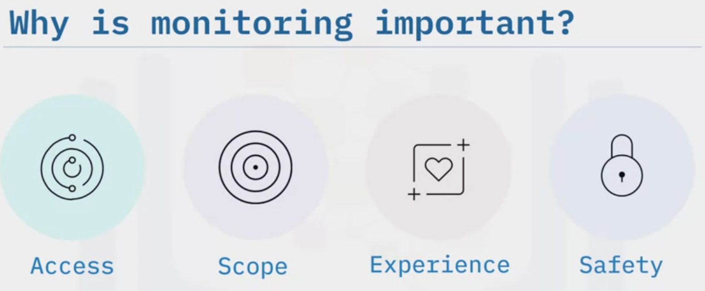
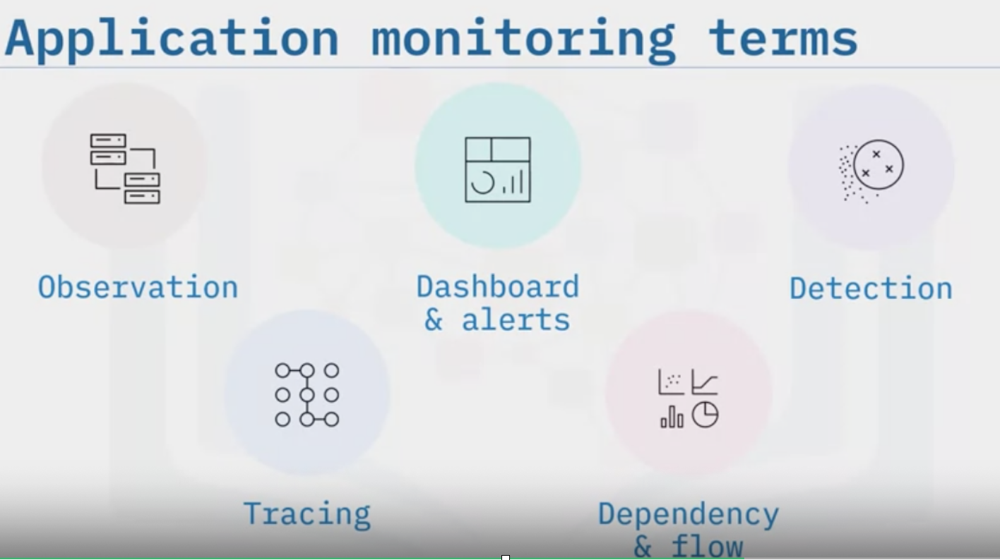

DevOps
Table of Content
- What is DevOps
- Why DevOps?
- DevOps Culture
- DevOps Best Practices
- What are the different phases in DevOps?
- DevOps Tools
- What benefits does DevOps have in business?
- Configuration Management?
- Four Actionable Metrics for DevOps
- What is Version Control?
- How do you setup a script to run every time a repository receives new commits through push?
- What is the difference between Git Merge and Git Rebase?
- AWS CodeCommit VS Git?
- Infrastructure as Code
- Testing
- Continuous Integration vs. Continuous Delivery
- Components of DevOps Pipeline
- Observability and Monitoring
- What To Observe: Metrics, Logs and Traces
- Introduction to Monitoring
- Importance of Monitoring
- Introduction to Telemetry
- Introduction to Testing
- DevOps in AWS
- Security by Design
- Secure SDLC
- What is DevSecOps?
- Understanding the role of Network Security
- Securing Layers for Application Development
- Security Pattern
- TLS/SSL
- OpenSSL
- Vulnerability Scanning
- Threat Modeling
- Threat Monitoring
- Introduction to Nmap
- Security Testing
- Static Analysis
- Dynamic Analysis
- Code Analysis
- Vulnerability Analysis
- Evaluating Software Vulnerability
- Runtime Protection
- Software Composition Analysis (SCA)
- OWASP
- Cross Site Scripting
- Git Secret Scan
- Continuous Image Repository Scan
- Rough Design of a CI/CD Pipeline
- Example of Implementations of a CI/CD Pipeline
- The Twelve-Factor App
- Introduction
- The Twelve Factors
- I. Codebase (part of Code)
- II. Dependencies (part of Code)
- III. Config (part of Deploy)
- IV. Backing services (part of Deploy)
- V. Build, release, run (part of Code)
- VI. Processes (part of Deploy)
- VII. Port binding (part of Deploy)
- VIII. Concurrency (part of Operate)
- IX. Disposability (part of Operate)
- X. Dev/Prod parity (part of Code)
- XI. Logs (part of Operate)
- XII. Admin processes (part of Operate)
- Some Interview Questions
What is DevOps
Main Source: IBM Applied Devops Engineering
DevOps is the combination of cultural philosophies (combining software development and IT operations), practices, and tools that increases an organization’s ability to deliver applications and services at high velocity using automation. DevOps requires a
- Change in the application design
- Change in the culture
- Leveraging automation (nobody can deploy manually microservices) such as CI/CD
- Programmable platform (you can not wait for somebody to provision a server)
DevOps is not just development and operation working together while remaining is a separate silos. DevOps is not a separate team (if you know anything about agile, you don’t make an agile team), DevOps is not tools either, its not one size fit all
There are 3 pillar to agility:
- DevOps (cultural change, automated pipeline, infrastructure as a code, immutable infrastructure)
- Microservices (loose coupling/binding, RESTful API, design to resist failure, test by breaking/failing fast)
- Containers (portability, fast startup, developer centric)
Application Evolution
Problems with Traditional Development Practices
- Proven slow and inefficient, and fail to support teams' efforts to quickly deliver stable, high-quality applications
- Challenges of Waterfall development, monolithic applications, manual processes, and siloed team structures cause bottlenecks and delays
Waterfall development projects are
- slow, not iterative, resistant to change, and have long release cycles
- requirements are rigid, set at project start, and will likely not change
- development phases are siloed, each starting after the previous phase has ended
- testing and security come after implementation, making corrective actions irresponsive and expensive.
In the waterfall model, we have limitations of one-way working and lack of communication with customers.
This was overcome in Agile by including the communication between the customer and the company by taking feedback. But in this model, another issue is faced regarding communication between the Development team and operations team due to which there is a delay in the speed of production.
This is where DevOps is introduced. It bridges the gap between the development team and the operation team by including the automation feature. Due to this, the speed of production is increased. By including automation, testing is integrated into the development stage which resulted in finding the bugs at the very initial stage which increased the speed and efficiency.
Monolith
Monolithic applications are hard to update and deploy, complexity increases as app grows, less flexible to adapt to new technology. The reason for these are because they:
- are developed and deployed as a unit (most or all within the same process), so when changes are made, the entire application must be redeployed
- managed in internal layers for:
- Security
- Reporting
- Analytics
- User Interface
- Data Access
- have tightly coupled functionality of layers, so if the application is large enough, maintenance becomes an issue because developers have a hard time understanding the entire application
- are implemented using a single development stack, so changing technology is difficult and costly because of interdependecnies
Microservices
Microservices architecture is an approach to create a single application composed of
- Many loosely coupled, independently deployable and smaller services. Services might each have their own technology stack inclusive database and data management model and different programming languages for different components
- Components communicate with one another over a combination of REST APIs or streaming and messages brokers
- allows functional segregation (based on business functionality)
Benefits of Microservices:
- No interdependencies = easy updates
- Different stack for different components = varied expertise
- Smaller components = scale independently (cost saving as opposed to scaling the whole app)
- Failure of one service doesn’t necessarily impact other services
- Scaling horizontally and precisely (for only one component)
- Event driven - can help broadcast the state change
Microservices can also communicate with each other via a combination of remote procedure calls (RPC), event streaming, or message brokers. RPCs like gRPC provide a faster response but the impact on the microservices is bigger when the service goes down. Event streaming provides better isolation between services but it takes longer to process.
Finally, instead of implementing end-user authentication, throttle, orchestrate, transform, route, and analytics in each service, you should use an API Gateway, a key component of micoservice design. An API gateway is an API management tool that sits between a client and your collection of backend services. This will become central to the above-mentioned non-functional concerns and will avoid re-engineering them with each service. API Gateway relies on an identity provider service to handle the authentication and authorization of each request coming through. To locate a service to route the request to, API Gateway consult a service registry and discover service. Microservices register with this service registry and discover the location of other micoservices through the discovery service.
Drawbacks:
- Security requirements: each service needs its own security paradigm, for example: TLS to secure network communication
- Debugging is a challenge: multiple services running independently makes it challenging to find the root cause
- Transferring to microservices architecture from monolithic often requires breaking up a monolithic database into its logical components. This could mean a separate schema in a bigger data cluster. Breaking up a database means it can no longer maintain foreign key relationship and enforce referential integrity between tables. The burden of maintaining dat integrity is moved into the application layer.
The aim of microservices is to solve the three most frequent challenges, that is, enhance customer experience, be flexible to new requirements, and reduce costs by providing business functions as fine-grained services.
Once you move to a microservices architecture, you will have more than one application with each having different code, test, and deploy cycles. Attempting to build microservices without either:
- proper deployment and monitoring automation, or
- managed cloud services to support your now sprawling, heterogenous infrastructure
is asking for a lot of unnecessary trouble. So, when you are building microservices, always use DevOps or cloud services because Manual processes throughout the application lifecycle are slow, inconsistent, and error-prone.
On the other hand, to fully leverage DevOps, you need to think differently about the application design:
- Each service is independent of the other and is a particular domain of the application
- These are small services based around business domain
- The line between services point to REST APIs
- No service is accessing another services database. In fact databases are not even included in the picture
This is cloud native design using microservices which take advantage of horizontal scalability the cloud has to offer.
In cloud native design, the applications are a collection of stateless micorservices. Stateless doesn’t mean the application doesn’t have state but it means each service maintains its own database. If the state are shared, you don’t have microservices but you just have distributed monolith. The stateless in microservices allows scaling horizontally possible. I can scale one service without touching others. You can and should use CD pipeline to help manage continuous delivery of these services.
Microservice architecture style is an approach to developing a single application as a suite of small services, each running in its own process and communicating with lightweight mechanisms, often an HTTP resource API. These services are built around business capabilities and independently deployable by full automated deployment machinery.
In monolithic design, if I need to change the design of a table I would need to communicate with different departments because they depend on it for order and shipping. With microservices, I don’t need to call other teams because they are simply calling my api. They don’t care what my table looks like whether it is SQL database or NoSQL database. They want their data and I will deliver their data.
Challenges of Microservices: Embracing Failures
Once you develop your application as a stateless collection of microservices, there are a lot of moving parts. This means there is a lot that can go wrong:
-
Services can be occasionally slow to respond or even have outages, so you can not always rely on them when you need them. You don’t want your application to fail just because one of the services is slow or there is a lot of network latency on a particular day. This is why you need to design for failure at the application level. You must build your application to be resilient to failure and scale horizontally. Embrace failure! In DevOps we talk about mean time to recovery instead of mean time to failure to make sure when failure happens and it will, you can recover quickly.
-
Application failure is not an operational concern but it is the developer concern. The developer needs to build that resilience right from the start. There are some patterns of making your application resilient:
-
Plan to be throttled. let's say you pick a plan that allow 20 units of reads per second. Once you exceed that limit the service is going to throttle you! You will get a 429 "TooMany Request Error" instead of "200 OK". In this case, you need to plan to retry (with exponential backoff). This logic needs to be in your application code. The idea is to degrade gracefully. If you cant, cache when appropriate so you don’t have to make these remote calls to these services if the answer is not been changed.
-
Retry pattern: this enables the application to handle transient failures when it tries to connect to a service or a network resort by transparently retrying and failing the operation. You can not say ppl should deploy the database before they start my service because it expects the database to be there when it starts. That is a fragile design! And is not appropriate for cloud native applications. If the database is not there, you application should wait patiently and then retry again. You must be able to connect, reconnect, fail the connect and then connect again. That s how you design robust microservices. The key here is retrying. Back off exponentially and retry again until you get connected (increase the wait time by some factor)
-
Circuit Breaker pattern: it is similar to the circuit breaker in your home. You may have done something that exceeds the power of the circuit. In our case, it is used to identify the problem and do something about it to avoid cascading failures. Cascading failure is when one service is not available and is causing many other services to fail. Circuit breaker can return something useful to calm the situation until that service is available. But everything works normally as long as circuit is closed. Circuit breaker monitor for failure until some threshold, then circuit breaker activates. Using bulkhead pattern isolate the consumers from the services as cascading services by allowing to preserve some functionality in the event of service failure.

-
Chaos engineering: not a software design pattern but a good practise to check your all design pattern work at the time of unexpected failure. You deliberately kill services to see how the services are affected.
-
Why DevOps?
An extension of agile with the following benefits:
-
Agility: allows teams to move at high velocity and continuously deliver controlled, small updates as needed
-
Rapid delivery: Increase the frequency and peace of releases so you can innovate and improve your product faster. The faster you can release new features and fix bugs, the faster you can respond to your customers’needs and build competitive advantage. Continuous integration and continuous delivery automates the software release process from build to deploy
-
Reliability: use CI/CD to test each change is functional and safe. Monitoring and observability practices help you stay informed of performance in real time. Ensure the quality of application updates and infrastructure changes so you can quickly and reliably deliver at a more rapid pace while maintaining a positive experience for users. Practices of CI/CD allow you to test that each change is functional and safe
-
Scale: manage a single or multiple instance by simplifying provisioning, configuration and scaling. Automation and consistency help you manage complex or changing systems efficiently and with reduced risk
-
Improved collaboration: build more effective teams under DevOps cultural model emphasizing ownership and accountability. Sharing responsibility reduces inefficiencies and saves time. For example, writing code that takes into account the environment in which it is run, reduces handover periods between developers and operations
-
Security: DevOps model uses automatic enforcement rules, fine grained controls and configuration management techniques to move quickly while ensuring compliance policies
DevOps Culture
- Create a highly collaborative environment
- Automate when possible
- Focus on customer needs
- Develop small and release often
- Include security at every phase
- Continuously experiment and learn
- Continuously improve
DevOps Best Practices
-
Communication and collaboration: Increased communication and collaboration in an organization is a key cultural aspect of DevOps. The use of DevOps tooling and automation of the software delivery process establishes collaboration by physically bringing together the workflows and responsibilities of development (code reviews, design, peer feedback) and operations.
-
Monitoring and observability: Companies monitor metrics and logs to see how application and infrastructure performance impact the experience of their product’s user
-
Continuous integration (CI): A software development practice where developers regularly merge their code changes into a central repository, after which automated builds and tests are run to ensure that it does not break the existing functionality
-
Continuous delivery/continuous deployment (CD): A software development practice where code changes are automatically built, tested, and prepared for a release to production. It expands on continuous integration by deploying all code changes to a testing environment, production environment or both, after the build stage with or without the need for a manual process
-
Microservices architecture (containers/Kubernetes, Cloud): A design approach to build a single application as a set of small services. You can build a microservices architecture by using serverless or container platforms
-
Infrastructure as a code: A practice in which infrastructure that supports the application is managed as code and versioned, allowing for easier and more consistent deployment
-
Security scans: Security scans are performed on the code and infrastructure to identify vulnerabilities and security risks
What are the different phases in DevOps?
- Plan: in this stage, all the requirements of the project and everything regarding the project like time for each stage, cost, etc are discussed. This will help everyone in the team to get a brief idea about the project
- Code: the code is written according to the client’s requirements. Here codes are written in the form of small codes called units
- Build: building of the units is done in this step
- Test: testing is done in this stage and if there are mistakes found it is returned for re-build
- Integrate: all the units of the codes are integrated into this step
- Deploy: app is deployed in this step on the client’s environment
- Operate: operations are performed on the code if required
- Monitor: monitoring of the application is done over here in the client’s environment
DevOps Tools
- Cloud
- Development: IDEs, SDKs, Git
- CI/CD: Examples: Build tools: Jenkins (integrates with docker and K8s), Travis CI, AWS CodeBuild
- Source control tools, repositories: Git, AWS CodeCommit
- Deployment tools: AWS CodeDeploy, AWS CloudFormation, AWS CDK
- Pipeline automation tools: AWS CodePipeline, Jenkins, GitLab
- Infrastructure Automation:
- Infrastructure automation tools: AWS CloudFormation, Terraform, AWS CDK
- Configuration management tools: Chef, Puppet, AWS OpsWorks
- Containers and serverless: Containers package code, configuration settings, and dependencies needed to run the application. Examples:
- Serverless services: AWS Lambda, AWS Fargate, AWS Elastic Beanstalk
- Container services: Runtimes: Docker, Containerd
- Orchestration: Amazon Elastic Container Service (Amazon ECS), Kubernetes, Amazon Elastic Kubernetes Service (Amazon EKS)
- Monitoring and observability: Monitoring and observability are key aspects of DevOps, helping you be proactive in preventing challenges before they occur. With tools, you can collect metrics on the health and performance of your application. You can capture deployment frequency, identify successful or failed deployments, application usage traffic, and more.Examples: Prometheuos, Grafana, AWS X-Ray, Amazon CloudWatch, AWS Config, AWS CloudTrail
What benefits does DevOps have in business?
DevOps can bring several benefits to a business, such as:
- Faster time to market: DevOps practices can help to streamline the development and deployment process, allowing for faster delivery of new products and features
- Increased collaboration: DevOps promotes collaboration between development and operations teams, resulting in better communication, more efficient problem-solving, and higher-quality software
- Improved agility: DevOps allows for more rapid and flexible responses to changing business needs and customer demands
- Increased reliability: DevOps practices such as continuous testing, monitoring, and automated deployment can help to improve the reliability and stability of software systems by reducing human error, and allowing for better resource allocation
- Greater scalability: DevOps practices can help to make it easier to scale systems to meet growing business needs and user demand
- Cost savings: DevOps can help to reduce the costs associated with the development, deployment, and maintenance of software systems by automating many manual processes and reducing downtime
- Better security: DevOps practices such as continuous testing and monitoring can help to improve the security of software systems
- Increase customer satisfaction and competitiveness: DevOps helps organizations to quickly address customer issues and provide new features, leading to improved customer satisfaction. DevOps enables organizations to move faster and more efficiently than their competitors, giving them a competitive advantage
Configuration Management?
Configuration management is the process of keeping track of and directing how software, hardware, and IT system parts are set up. It includes
- keeping track of versions
- managing changes
- automating deployment
- keeping settings the same
This makes sure that the system is reliable, consistent, and follows standards. In current IT operations, software release and system management cannot be done without configuration management. In software development, configuration management is commonly used alongside version control and CI/CD infrastructure. Configuration management helps engineering teams build robust and stable systems through the use of tools that automatically manage and monitor updates to configuration data.
For a more concrete example consider a microservice architecture. Each service uses configuration metadata to register itself and initialize. Some examples of software configuration metadata are
- specifications of computational hardware resource allocations for CPU, RAM, etc
- endpoints that specify external connections to other services, databases, or domains
- secrets like passwords and encryption keys
It’s easy for these configuration values to become an afterthought, leading to the configuration to become disorganized and scattered. Imagine numerous post-it notes with passwords and URLs blowing around an office. Configuration management solves this challenge by creating a “source of truth” with a central location for configuration.
Git is a fantastic platform for managing configuration data. Moving configuration data into a Git repository enables version control and the repository to act as a source of truth. Managing unexpected changes through the use of code review and version control helps to minimize downtime as it enables rollback or “undo” functionality to configuration, which helps avoid unexpected breakage.
Configuration Management (CM) is a practice in DevOps that involves organizing and maintaining the configuration of software systems and infrastructure. It includes
-
Version control, monitoring, and change management of software systems, configurations, and dependencies. The goal of CM is to ensure that software systems are consistent and reliable to make tracking and managing changes to these systems easier. This helps to minimize downtime, increase efficiency, and ensure that software systems remain up-to-date and secure
-
Configuration Management is often performed using tools such as Ansible, Puppet, Chef, and SaltStack, which automate the process and make it easier to manage complex software systems at scale.
-
Configuration management is a key part of a DevOps lifecycle. DevOps configuration is the evolution and automation of the systems administration role, bringing automation to infrastructure management and deployment. DevOps configuration also brings system administration responsibility under the umbrella of software engineering.
-
Automating configuration management is essential to establishing a reliable, consistent, and well-maintained IT environment at scale
- Automation allows teams to consistently deploy and decommission infrastructure components in less time, with fewer opportunities for human mistakes and without relying on individuals to perform time-consuming manual configuration tasks
- Automation makes it possible to maintain consistent system settings across datacenter, cloud, and edge environments for an application’s entire life cycle, minimizing both performance and security issues
-
Automation can help enterprises reduce costs, complexity, and manual errors in a variety of IT use cases:
- Infrastructure automation: configure and manage server infrastructure to enforce consistency and eliminate configuration drift.
- Cloud automation: configure and manage cloud resources including operating systems, security groups, load balancers, and virtual private clouds
- Network automation: configure and manage network devices such routers and switches
- Security automation: configure and manage security devices such as firewalls and intrusion detection systems — and apply consistent network access policies
- Edge automation: configure and manage remote infrastructure systems including network, security, IoT devices, and server equipment.
Enterprises today utilize it to empower software engineers to request and provision needed resources on demand. This removes a potential organizational dependency bottleneck of a software development team waiting for resources from a separate system administration team.
CI/CD configuration management utilizes pull request-based code review workflows to automate deployment of code changes to a live software system. This same flow can be applied to configuration changes. CI/CD can be set up so that approved configuration change requests can immediately be deployed to a running system. A perfect example of this process is a GitOps workflow.
Four Actionable Metrics for DevOps
-
Mean Lead Time: how long it takes for an idea to get to production. It measures the mean time taken from committing a change to code repository to the time it becomes available in production
-
Deployment Frequency: it measures the number of times changes are deployed to production in a given period of time - You don’t want to be disrupted by a competitor and take a long time to respond
-
Change Failure Rate: speed is meaningless if it destabilizes the system
-
Mean Time to Recover (MTTR): it measures the average time taken to recover from a service disruption or failure
What is Version Control?
It is a system that records changes to a file or set of files over time so that you can recall specific versions later. This allows
- collaboration in coding by a group: teams can work independently on different project components and easily merge them when completed
- reverting the entire project back to a previous state: vcs systems package all previous versions. This can be convenient if you want to revert to a previous version to manage changes to the source code over time
- compare changes over time, who introduced a problem and when
A popular VCS is Git and GitHub which provides a Distributed Version Control system and is the industry standard.
How do you setup a script to run every time a repository receives new commits through push?
Using hooks! There are three ways to configure a script to run every time a repository receives new commits through push, one needs to define either a pre-receive, update, or a post-receive hook depending on when exactly the script needs to be triggered.
- Pre-receive hook in the destination repository is invoked when commits are pushed to it. Any script bound to this hook will be executed before any references are updated. This is a useful hook to run scripts that help enforce development policies such as scan for secrets.
- Update hook works in a similar manner to pre-receive hook, and is also triggered before any updates are actually made. However, the update hook is called once for every commit that has been pushed to the destination repository.
- post-receive hook in the repository is invoked after the updates have been accepted into the destination repository. This is an ideal place to configure simple deployment scripts, invoke some continuous integration systems, dispatch notification emails to repository maintainers, etc.
Hooks are local to every Git repository and are not versioned. Scripts can either be created within the hooks directory inside the “.git” directory, or they can be created elsewhere and links to those scripts can be placed within the directory.
What is the difference between Git Merge and Git Rebase?
Both are merging mechanisms but the difference between the Git Merge and Git Rebase is, in Git Merge logs will be showing the complete history of commits. However, when one does Git Rebase, the logs are rearranged. The rearrangement is done to make the logs look linear and simple to understand. This is also a drawback since other team members will not understand how the different commits were merged into one another.
AWS CodeCommit VS Git?
There is no need to host, maintain, and backup your own source control servers.
- It automatically encrypts your files in transit and at rest
- It is built on highly available, redundant, and durable AWS services
- It increases the speed and frequency of your development lifecycle by keeping repositories close to your builds
Infrastructure as Code
Configure infrastructure using an executable script known as code. We’re talking about textual code that you can hand to an IaC tool. And that tool reads the code and then builds your servers, and networks, and storage, etc., essentially the core infrastructure elements that you need. Using these tools with this textual code means that everyone gets the same environment every time, so it’s consistent and repeatable. Textual code is normally written in the YAML format, which is a very common way to write and declare IaC. So, why are we discussing Infrastructure as Code in this course? Well, performing these system configurations manually is error-prone, not to mention, time-consuming.
You can use templates or commands to describe how to install and configure the system according to your needs, how much storage you want, how much processing power you want, and so on. In the early days of DevOps, Configuration Management Systems (or CMSs) made this possible, and they predated the newer IaC tools.
Infrastructure as code tools can be either declarative or imperative:
- With the declarative approach, you specify the desired state of the infrastructure resources you want to provision, and then the IaC tool determines how to achieve this state. It handles dependencies and executes commands in the proper order without you having to specify the order of execution. Tools that use this approach include Terraform, Puppet, SaltStack, CloudFormation, and to some extent, Ansible.
- The imperative approach, in contrast, requires that you define the specific order of the commands needed to achieve the desired state. It’s up to you to get the dependencies correct as the tool will execute commands in the order you specify. Tools like Chef are imperative and to some extent, Ansible can be as well.
These tools are also called configuration management system (Ansible, Puppet, Chief) which enable you to describe your infrastructure as code and then create that infrastructure and keep it in that state. You never want to perform system changes and software configurations manually which is not reproducible and extremely error-prone. You want to use templates and scripts that describe how to install and automatically configure elements such as systems and devices and software and users. You can take that textual code and store it in your version control system so that you have history of all the changes. This way, everyone knows which version is the latest version and how the infrastructure should look.
Docker, Terraform, Kubernetes also allow you to describe your infrastructure as code which can be checked into a version control. So, what are the benefits of IaC?
-
IaC automation dramatically speeds up the process of provisioning infrastructure for development, test, and production (and for scaling or taking down production infrastructure as needed). It can even automate the provisioning of legacy infrastructure, which might otherwise be governed by time-consuming processes like requiring you to open a ticket and wait for someone to do it manually. Developers can quickly provision sandboxes and CI/CD environments, and QA can quickly provide full-fidelity test environments. IaC ensures that provisioning intelligence always remains with the organization.
-
In the past, the knowledge of how to configure servers may have been known by only a few people in your organization. Once you codify this knowledge using infrastructure as code, everyone is able to provision what they need, and the fear of losing tribal knowledge through staff churn is no longer an issue.
-
Finally, IaC lets organizations take maximum advantage of cloud computing's consumption-based cost structure. It reduces the time, effort, and specialized skill required to provision and scale infrastructure. It also enables developers to spend less time on plumbing and more time on mission-critical software solutions.
Now, let’s briefly discuss some of the main IaC tools available:
-
Terraform is an IaC tool by Hashi Corp that is free and open source. It uses declarative approach to IaC with a pre-execution check to ensure that it will do what you expect it to do. You can use Terraform as a base tool in combination with Ansible where Terraform provisions the base infrastructure and Ansible configures the software on top of it. It is a very popular tool for cloud provisioning.
-
Ansible is an open source tool that automates IT tools such as intra-service orchestration, application deployment, cloud provisioning, and more. It uses familiar YAML files to describe the state that you want to achieve. Ansible is simple to set up because it doesn't require any client-side agents or bespoke security infrastructure, and it works simply delivering modules to the clients. This makes it ideal for memory-constrained environments like configuring Internet of Things devices. These modules are run on the client side and the results are sent back to the Ansible server.
-
Chef describes the necessary steps to reach a final state rather than describing the state itself. Using “Cookbooks,” you can describe various processes by which you can configure a system to achieve the desired state. One of the strengths of Chef is that it’s a popular tool and has lots of support but one of the drawbacks is that its cookbooks are written in Ruby so you need to have Ruby skills on your team. With Puppet, you can use any existing platform. The main difference between Puppet and Chef is that Puppet is declarative, which some consider to be a preferred method.
Ephemeral Immutable Infrastructure
- Service drift is a major source of failure: services updated by new ppl may be different or not matching
- Services are cattle not pets: don’t spend time fixing servers - replace them by identical servers that are working properly
- Infrastructure is transient. It only exist for the time you need it then removed when not used
- Build through parallel infrastructure - like in blue green deployment
Immutable Delivery with Containers
- Applications are packaged in containers, which are isolated environments. Docker supports IaC by allowing you to specify how to build an image from code (Dockerfile). These files make the same image from the the same files all the times and Docker makes the same container from that image every time it is deployed. The same container in the production can be run in the developer laptop.
- No variance limits side effects
- Rolling updates with immediate roll-back
- You never make changes to a running container
- You make changes to the image. Then redeploy the new container
- Keep images up to date
Testing
Automated testing in DevOps refers to the use of tools and scripts to automatically run tests on applications, infrastructure, and services. It is integrated into the CI/CD pipeline and helps to ensure that new code changes do not introduce bugs or negatively impact performance.
The following is a basic overview of how automated testing fits in the DevOps lifecycle:
- Code changes are pushed to a version control system such as Git.
- The continuous integration (CI) system triggers a build and test process, which includes automated tests. The tests are run automatically, and results are reported back to the CI system.
- If all tests pass, the code is automatically deployed to a staging environment for further testing including manual testing by testers or the development team.
- If all tests are successful, the code is then promoted to the production environment.
- Ongoing monitoring and testing of the production environment help to catch any issues that may arise.
Testing stages: most to least frequently performed, cheapest to most expensive processes, least to most time consuming to run
- Unit tests: small in scope for specific part of applications, prevents bad code for being deployed into production
- Service/Integration tests: should verify that application component can communicate and interact with each other (connection to database or ability to call a third party web services)
- Performance/Compliance tests: tests how responsiveness and stability under a specific workload can reveal issues with scalability, system issues, insufficient hardware resources; security tests determine if application’s code conforms to security standards and required specifications. For example, you might test for the use of server-side encryption when uploading objects to S3
- UI/End-to-End tests: experience as a whole to ensure the application operates correctly according to user’s workflow. They are typically more complex. For example, check to see if user is able to create an account and log in with those credentials, if they can upload, GUI can work properly etc
Automating testing practices across the development lifecycle offers four key benefits:
- Improve developer productivity: Automated testing can increase your team’s productivity by freeing developers from manual tasks. It encourages behaviors that help reduce the number of errors and bugs released to customers.
- Find and address bugs faster: Implementing tests early in the development process enables developers to discover bugs faster. In turn, you can address the issues within your application before they grow into a larger problem. - When combined with automation, each build will validate your application.
- Deliver updates more quickly: Manual processes take time. Exactly how much time is determined by a tester’s availability and the amount of time the approval process requires. When you reduce the number of manual processes in your pipeline, you increase the speed of your development pipeline, enabling you to deliver updates more quickly.
- Automate the software release process: Automating your code pipeline enables your team to automatically build, test, and prepare code changes for release to production. This leads to rapid and efficient software delivery. It also enables you to push innovations to your customers faster without causing bottlenecks in your software release process.
Continuous Integration vs. Continuous Delivery
CI and CD are not the same. It’s two separate and distinct processes that happen right after each other. Continuous Integration is continuously integrating your code back into the main branch. Whereas Continuous Delivery is then taking that integrated code and deploying it somewhere. You may deploy it every time you integrate it, or you may not deploy it every time you integrate it. You may have Continuous Integration on one loop testing branches and pull requests. And then, when you finally merge to main, you kick off the Continuous Delivery part.
Continuous Integration (CI)
The main features of CI are: Short-lived branches, frequent pull requests, and automated CI tools
- CI is continues building, testing, and merging to main branch. CI consists of the Plan, Code, Build, and Test phases. This is where developers plan and then code the solution, and then build it and test it in several repeating cycles until it’s complete. And then the solution is ready to be delivered
- Developers push code often (daily). Commit regularly. The more time passed between merges, the greater risk of merge conflicts. Working for a week on code and check it in at once increases conflict between features. These conflicts can be difficult and time consuming to resolved
- They work in short-lived feature branches that are merged into the master once the feature is complete. This means you integrate features as it is completed and The branch is deleted after it’s merged as its only purpose was to develop that small feature. It reduces drift that may occur between feature branches and the main branch
- Frequent pull requests back to the main branch is a best practice. It allow team members to communicate about the changes and review the code they are making

CI Automation
Continuous Integration can be automated. But what does that mean? Automated CI tools subscribe to events such as pull requests and file changes using webhooks that can then trigger a workflow. That workflow can be anything, such as building an application. Once complete, these tools report back with messages of a successful or failed build
- Build and test every pull request automatically. The system should build the changes of the current working version to verify that the integration works correctly
- CI tools monitor changes in the version control to get started with building and testing
- Test should run after the build to ensure all the features are working properly
- Never merge a pull request with failing tests
Benefits of CI
- Faster reaction times to changes
- Reduces the risk of integration - less changes make less room for breaking things
- Higher quality of code: you get higher code quality with CI/CD, because things are constantly being reviewed and constantly being tested, and every pull request is an opportunity for a code review.
- The code in the version control works - The master branch should always be deployable. So you can not start testing when the code is merge in the master brach. Its late!
- Never merge untest code into the master branch
Tools
Jenkins is CI/CD software that is installed on a server where the central build will take place. It is one of the oldest, most popular, and most complex of all the CI/CD tools. Circle CI is a CI/CD platform that can be used to implement DevOps practices. It performs deployments for Continuous Delivery and you define workflows inside a ‘circle.yaml’ file. GitHub Actions is a CI/CD platform that enables you to automate your build, test, and deploy GitHub workflows. Unlike other tools, it only works with GitHub.
A CI pipeline needs:
- Code Repository
- Build Server: build from the source code - GitHubActions
- Integration Server to automate the build and run the quality automated test - This orchestration capability is provided by all cloud providers
- Artifact Repository to store binaries, the artifacts of the application- Java jar file, Python wheels, Docker images that have been tested and proven to work
Automatic configuration and development - provided by most cloud providers

The word continuous deployment is reserved for deployment into production environment.

Continuous Integration Components
Code Standards
Code standards are technical definitions and guidelines for developers that help establish the technical requirements for the code, and practices that all members of the team will follow code standard examples such as Maximum number of parameters for a method, Use of comments, How variables, functions, and methods should be named, method complexity, security standards, accessibility.
Code standards are to ensure the code is:
- Safe and can be used without harm
- Secure and cannot be hacked
- Reliable and works as expected every time
- Testable
- Readable and easy to understand
- Portable to different environments
Examples of industry coding standard for Python is PEP8 and AUTOSAR C++ for C++.
Static Code Analysis
Static code analysis can be paired with code standards as a method to ensure coding standards are followed as code is checked into the repository. In a CI/CD pipeline, code is automatically analyzed by tools on each check-in to the repository and verified against the organization’s coding standards. These tools do not replace peer reviews of code but rather can be used to flag potential problems early in the development lifecycle.
Linting
A linter is a program that examines your code looking for syntax problems or bugs that can lead to errors when you run the code. A linter can be integrated into build automation or authoring tools. Historical linting functions have often moved into modern compilers.Modern linting tools have evolved to scan for undeclared variables, deprecated functions, spacing and formatting conventions, misuse of scope, and other potential code issues. Example:PyLint, Flake8, Ruff
Unit Testing
Unit testing quickly identifies and isolates issues in individual units of application code. Every commit made to each branch should initiate an automated test. The unit tests run on the compiled code. This ensures that as developers commit code to the repository, the changes don’t break the old code. One measure of unit testing quality is code coverage. Code coverage is a measure of how much of the source code is tested. Best practices:
- Run for every code change to verify quality
- Ensure good code coverage
- Test a unit of code in isolation
- Run fast and fail quickly
Example: Pytest, Pynose, coverage
Here are two different development methodologies that leverage testing: Test Driven Development (TDD) and Behaviour Driven Development (BDD).
-
TDD means your test case drives the design and the development of your code. You don’t write code and then test it. You write the test cases first. You write the test for the code you wish you had. Then you write the code to make them pass. The test case define the behaviour you desire the code to have. This keeps your focus on the purpose of the code. TDD development encourages simple designs and inspires confidence in the code. The process takes requirements and turns them into test cases after which code is written or improved so that the test cases pass. TDD focuses on the functionality. Start with writing the test first for every new feature added to the project. Use cases and user stories can help the developer understand the requirements. Run the new test to see if it fails so the developer can verify the test harness is working correctly. The test should fail the first time it’s run. Write the code that will cause the test to pass. Run the tests and verify that the new code passes. Refactor the code, remove duplication, and clean up old code. Repeat by starting with a new test cycle
-
BDD describes the behaviour of the system from outside. It is great for integration testing. It is an agile software development process that encourages collaboration among developers, quality assurance, and business partners. Behavior Driven Development is an extension of TDD that makes use of simple domain-specific scripting languages (DSL). These DSLs can be converted into tests. BDD focuses on the behavior of the application for the end-user.
- The behavior of a user is defined in simple English
- The English words are converted into automated scripts against functional code
- The development team writes code to pass the test case
User behaviors are often scenario-based, for example:
- A given user visited the site
- A user clicked the Orders button
- A user accessed the Orders page
A testing framework is a set of guidelines or rules for creating and designing test cases.
Testing frameworks are often called test automation frameworks. They define the overall system in which the test will be automated. Testing frameworks help improve the efficiency of writing tests by helping teams organize their test suites. Pytest for Python, JUnit for Java, .Net for C#, etc.
Frequent Commits
The goal of Continuous Integration is primarily to improve Communication. Frequent communication quickly alerts developers to changes. Committing code every couple of hours, for example, enables developers to undo a particular problematic issue in their code. Pushing code frequently to a shared repository can quickly identify a conflict between two developers and make it much easier to resolve.
Developers frequently commit to a shared repository using a version control system such as CodeCommit. A continuous integration service automatically builds and runs unit tests on the new code changes to immediately surface any errors. Developers who merge code early and often will have fewer integration issues down the road, and errors will be cheaper and easier to fix. What are some best practices around frequent commits?
- Break down work into smaller chunks
- Commit locally early and often
- Regularly push code to a centralized repository
- Instruct developers not to hold code in isolation
- Merge feature branches as often as possible
- Eliminate confusion and time-consuming merges
Pull Requests
A pull request makes the proposed (committed) changes available for others to review and use. So others can review, comment on, and interactively iterate on code changes.
How do you create a pull request?
- The developer clones the destination branch on their system
- The developer creates a new feature branch
- The developer makes changes to the feature branch and commits them locally. The commits are not merged into the destination branch
- The developer pushes the changes of the feature branch to the shared repository
- The developer creates a pull request from the differences in the two branches
- Team members review and approve the pull request. The pull request can be updated with additional commits that contain changes based on reviewer comments
- The feature branch is merged into the destination branch when team members are happy with the pull request. Commits are applied to the destination branch in the same order they were added to the pull request
- The feature branch is deleted
Note that GitHub automatically makes a pull request on your behalf if you make a change on a branch that you don’t own. Log files record the approval of the merge.
Lets understand the workflow with a use case. A company assigns a team of developers, testers and product managers to a new web application project. A developer initializes a git repo in their local environment, stage them and does the initial commit. She then pushes the commit to a remote repository she created. All the developers clone the repository and start working on it by creating branches. Another developer John is responsible for user authentication feature. He clones the repo and creates a new branch called user-auth from the main branch. John completes the feature development and commits to the user auth branch. After thorough testing, he pushes the branch to the remote repository and creates a pull request. The pull request is reviewed and approves it to merge it to the main branch so other developers can access the change made by John. Similarly other developers push the commit to the remote repo for the features they worked on. At this stage feature development is complete and the project tis ready to be released. One can create a release branch and call it Release 1.0 in the remote repo. The team pulls the changes to their local repo so it is up to date. They perform final testing and documentation updates in the Release 1.0. After testing, they commit the changes, push the commit to the remote repo and create a pull request and reviews and merge the changes to the main branch and tag the release as Release 1.0.
The git branching workflow is crucial in version control and collaboration when working on software development projects. The workflow allows the teams to work on different features, bug fixes, or experiment in isolation without disrupting one another's code.
Continuous Delivery (CD)
Continuous Delivery is made up of Release, Deploy, and Operate phases, where the solution is released, and the binaries are deployed into a given environment in repeating cycles, and the solution is then in live operation from that point on. CD is a series of practices to ensure the code can be rapidly and safely deployed into production by delivering every change to a production-like environment (like development, test, stage environment that mimics the production environment). For example, if the production environment is containers on Kubernetes, you should deploy in Kubernetes as well. ‘Continuous Delivery’ is when you deploy it somewhere, like a development server, a staging server, a test server, or a pre-production server, whereas ‘Continuous Deployment’ is reserved for when you actually continuously push to production
The goal of continuous deliver to ensure that every change is ready to go into production. But before that, usually a manual approval is needed. To do this, we can implement a decision process to ensure the production is authorized. This decision can be made by a person and executed by tools. This is a business decision rather than technical.
At this stage where we are in a staging environment (production like), and before deploying into production, we might want to conduct some serious testing to ensure performance/compliance or user experience is satisfied or to collect inofrmation about other aspects of our app. Here are some common types of testing:
Types of Testing
-
Functional testing: Functional testing is a process of determining if a piece of software is acting in accordance with requirements. It tests the functionality of part of the whole system rather than a single function. During all functional testing, the goal should be to fail the code to discover software defects and increase software quality. Functional testing involves six steps:
- Identify functions the software is expected to perform
- Create input data based on the function's specifications
- Determine function output based on the function's specifications
- Run the test case
- Compare actual and expected outcomes
- Verify the function works based on customer needs
-
Regression testing: Regression testing ensures your changes to the codebase do not disrupt already existing functions and cause something to break elsewhere. Regression testing is expensive in terms of time and money, especially when done manually. Regression testing accounts for almost one half of software maintenance costs and up to 80% of the testing budget.
- Built-in: Fuzz: The built-in fuzz test randomly sends user interface events to devices and then reports results.
- Built-in: Explorer: The built-in explorer test crawls your app by analyzing each screen and interacting with it as if it were an end-user, taking screenshots as it explores. You can also provide Device Farm with credentials so the test can sign in.
Customized test types:
- Appium: An open-source test automation framework for use with native, hybrid, and mobile web apps
- Calabash: A mobile testing framework you can use to run automated interface acceptance tests
- Espresso: Instrumentation tests that make it possible for you to invoke callback methods in your test code so you can run through the lifecycle of a component step by step
- UI Automator: Automates user interface tests in your iOS app through test scripts that you write
- XCTest: A new UI framework introduced with Xcode 7 that extends XCTest with UI testing capabilities
-
Performance testing: Performance testing determines how your system performs in terms of responsiveness and stability under a specific workload. Performance testing will show issues with scalability constraints, software configuration issues, and insufficient hardware resources. Issues discovered with this test can lead to performance bottlenecks and reduced reliability if they're not remediated. You can inject automated load tests in your delivery workflow Performance testing types:
-
Load testing: Determines performance of a system under load. Simulates multiple users concurrently accessing the system with test scripts, measures an application’s quality of service
-
Stress testing: Understands limits of the system, discovers at what point the software fails, helps determine how long it takes to recover from failure
-
Spike testing:
Increases workloads quickly and repeatedly, helps determine if dramatic increases or decreases in load affect performance -
Breakpoint testing: Measures the maximum capacity the system can run and still meet its service-level agreements, helps determine what metrics should be used to determine a scale-out event
-
Configuration testing: Tests the effects of configuration changes, helps determine optimal combinations of hardware and software
-
Isolation testing: Repeats a test that resulted in a system problem to determine fault, helps isolate and confirm the fault domain. What performance metrics should you collect?
-
Average Response Time
-
Peak Response Time
-
Error Rates
-
Concurrent Users
-
Requests per Second
-
Throughput
BlazeMeter is a performance-testing platform, also accessible directly from AWS CodePipeline anywhere load tests are performed. BlazeMeter extends Apache JMeter by providing some additional capabilities such as automatic scaling and professional reporting.
- Testing with BlazeMeter: Add a testing stage to your existing pipeline in CodePipeline, In the action category, choose Test and set the Action provider to BlazeMeter. Choose Connect to BlazeMeter. Log in to BlazeMeter. Configure the types of requests you want to make. You can add the URL, specify the HTTP verb (GET, POST, PUT, DELETE), and add custom headers if required. Configure any JavaScript Object Notation (JSON) payload required. Configure the integration with CloudWatch so BlazeMeter reviews the metrics for your resources involved in the test. Define target thresholds as per your test plan.
-
-
User acceptance testing: User acceptance testing (UAT) is the last phase of your software testing process. The goal of UAT is to verify that the software works for the users of the system and meets the documented requirements. UAT can cover: Real-life scenarios:
- Run the most common tasks
- Perform the most difficult tasks
- Often run against test scenarios
- Can be functional testing of a user story
-
Regulation acceptance testing:
Tests whether the software complies with relevant regulations -
Synthetic testing: Synthetic testing is a method of understanding your user’s experience in an application by predicting behavior. Synthetic testing is often accomplished by using web browser emulation or scripted recordings of web transactions. Scripts are created to simulate the path or action an end user would take on a site. Those paths are then continuously monitored for performance, availability, and response time measures. Synthetic testing is useful because it can help you identify problems before a user experiences them. Monitoring results push to a monitoring service, which can then trigger alerts in the case of failures or slowdowns. Synthetic testing can run in a CI/CD pipeline to block a release that would break the product. Alternatively, it can run as part of the CD process, evaluating the state of the application immediately after a deployment is finished. The uses of synthetic testing is
- Monitor application uptime
- Establish baseline of performance across countries
- Monitor performance
- Detect problems caused by third-party scripts
- Monitor database uptime
Security Checks
Security breaches are significant threats in our world today. According to the 2022 Thales Cloud Security report, 45% of businesses have experienced a cloud-based data breach or failed audit in the past 12 months.
DevSecOps is a methodology that covers security of and in the CI/CD pipeline, including automating security operations and auditing. It also advocates that security should be built into the product rather than added at the end of the project. There are two main goals of DevSecOps:
- Embed security knowledge into DevOps teams to secure pipelines they design and automate
- Embed application security knowledge, automated tools, and processes into security teams to provide security at scale in the cloud
Control Categories:
- Directive controls establish the governance, risk, and compliance models.
- Preventive controls protect workloads and mitigate threats and vulnerabilities.
- Detective controls provide visibility and transparency over the operation of deployments.
- Responsive controls drive the remediation of potential deviations from security baselines.
Example Security Test:
- Common vulnerability exploits
- Open-port scanning
- Secrets scanning
- Runtime security risks
Tools:
- Snyk
- Nessus
- Qualys
- Nmap
- OWASP Dependency-Check
Continuous Deployment (CD)
With both continuous deployment and continuous delivery, every code change is built and tested and then pushed to a non production testing or staging environment first. There will be multiple parallel stages before production deployment. However the difference between continuous delivery or deployment is the manual approval to update to production. With continuous deployment, production happens automatically. Doing this requires a robust and effective testing strategy. That’s why we discuss testing in various deployment strategies.
Now that your application is ready to go, you'll learn strategies you can employ to get it into production.
-
Rolling Deployment:
With a rolling deployment, your production fleet is divided into groups so the entire fleet isn’t upgraded at once. Your fleet will run both the new and existing software versions during the deployment process. This method enables a zero-downtime update. If the deployment fails, only the upgraded portion of the fleet will be affected. This is in contrast to a blue/green deployment where an entirely new environment containing the updated application is created, and traffic is shifted over to the new environment.With rolling deployments, you are updating your live production environment. The updated application is not being applied to all compute nodes at once. It’s only being deployed to some. This enables your application to remain available during the upgrade. Additionally, you have the opportunity to test your new application in the production environment after the upgrade completes. If you find it is not behaving properly, you can roll back the deployment. After a portion of the application has been deployed, the rolling deployment moves to the next portion of your environment until all compute nodes have been updated with your application.
- One at a time: Deploys the application revision to only one instance at a time.
- Half at time: Deploys to as many as half of the instances at a time (with fractions rounded down). The overall deployment succeeds if the application revision is deployed to at least half of the instances (with fractions rounded up). Otherwise, the deployment fails.
- Custom: Deploys a set number or percentage of resources selected by you, at time intervals you specify.
Advantages to a rolling deployment include:
- Zero downtime
- Lower overall risk of bringing down your entire production application
- No additional resources required, which minimizes deployment costs
Disadvantages to a rolling deployment you need to keep in mind:
- Complexity: While your application is deploying, you must remember there are two different application versions operating at once in the same environment. You will need to make sure your application can handle interoperability between these versions.
- Getting back to previous version: If a resource in a rolling deployment fails to deploy correctly, reverting to a previous version can be complicated. It might require you to redeploy the previous application version in a new resource or fix the failed resource manually.
- Speed: Because resources are deployed in small increments, it could take a long time to deploy all the necessary hosts in a large environment.
The benefits of Continuous Delivery are many and varied and they include the following:
- Enabling your development teams to automate the steps that transport software through the various stages of the software development lifecycle (or SDLC)
- Automation leads to reducing the deployment time by nonstop testing and deployment cycles. The more you deploy, the more confidence you have that your next deployment will work, and the less time you spend debugging deployments
- Reducing the costs that are normally common with standard deployment strategies. This could be people costs, infrastructure costs, and the cost of lost time due to manual failures. Continuous Delivery enables your development team to scale their software deployments based on the size of the project.
- And enabling you to deploy code automatically into the various stages of the software development lifecycle. Once you have deployed to the development environment without incident, and to the test environment, and then the staging environment all without incident, the chances are pretty good that when you deploy to production that will also be without incident
Health checks
Health checks are tests performed on resources. These resources might be your application, compute resources like Amazon EC2 instances, and even your Elastic Load Balancers. The results can determine if a deployment was successful or if an application is working as intended.
-
Liveness checks: Liveness checks test the basic connectivity to a service and the presence of a server process. They are often performed by a load balancer or external monitoring agent, and they are unaware of the details about how an application works. Liveness checks tend to be included with the service and do not require an application author to implement anything. Some examples of liveness checks used at AWS include the following:
- Tests that confirm a server is listening on its expected port and accepting new TCP connections
- Tests that perform basic HTTP requests and make sure the server responds with a 200 status code
- Status checks for Amazon EC2 that tests for basic things necessary for any system to operate, such as network reachability
-
Local health checks: Local health checks go further than liveness checks to verify that the application is likely to be able to function. These health check test resources are not shared with the server’s peers. Therefore, they are unlikely to fail on many servers in the fleet simultaneously. Some examples of situations local health checks can identify are:
- Inability to write or read from disk: it might be tempting to believe a stateless service doesn't require a writable disk. Many services tend to use their disks for such things as monitoring, logging, and publishing asynchronous metering data.
- Critical processes crashing or breaking: Some services take requests using an on-server proxy (similar to NGINX) and perform their business logic in another server process. A liveness check might only test whether the proxy process is running. A local health check process might pass through from the proxy to the application to check that both are running and answering requests correctly.
- Missing support processes: Hosts missing their monitoring daemons might leave operators unaware of the health of their services. Other support processes push metering and billing usage records or receive credential updates. Servers with broken support processes put functionality at risk in subtle, difficult-to-detect ways.
-
Dependency health checks: Dependency health checks thoroughly inspect the ability of an application to interact with its adjacent systems. These checks ideally catch problems local to the server, such as expired credentials, that are preventing it from interacting with a dependency. They can also have false positives when there are problems with the dependency itself. Because of those false positives, we must be careful about how we react to dependency health check failures. Dependency health checks might test for the following:
- A process might asynchronously look for updates to metadata or configuration but the update mechanism might be broken on a server. The server can become significantly out of sync with its peers. The server might misbehave in an unpredictable and untested way. When a server doesn’t see an update, it doesn’t know whether the update mechanism is broken or the central update system has stopped publishing.
- Inability to communicate with peer servers or dependencies: Strange network behavior can affect the ability of a subset of servers in a fleet to talk to dependencies. This behavior might occur without affecting the ability for traffic to be sent to that server. Software issues, such as deadlocks or bugs in connection pools, can also hinder network communication.
Other unusual software bugs that require a process bounce: Deadlocks, memory leaks, or state corruption bugs can make a server spew errors.
-
Anomaly detection: Anomaly detection checks all servers in a fleet to determine if any server is behaving oddly compared to its peers. By aggregating monitoring data per server, you can continuously compare error rates, latency data, or other attributes to find anomalous servers and automatically remove them from service. Anomaly detection can find divergence in the fleet that a server cannot detect about itself, such as the following:
- Clock skew: When servers are under high load, their clocks have been known to skew abruptly and drastically. Security measures, such as those used to evaluate signed requests, require that the time on a client's clock is within five minutes of the actual time. If it is not, requests fail.
- Old code: A server might disconnect from the network or power off for a long time. When it comes back on line, it could be running dangerously outdated code that is incompatible with the rest of the fleet.
- Any unanticipated failure mode: Sometimes, servers fail in such a way that they return errors they identify as the client’s instead of theirs (HTTP 400 instead of 500). Servers might slow down instead of failing, or they might respond faster than their peers, which is a sign they’re returning false responses to their callers. Anomaly detection is an incredible catchall for unanticipated failure modes.
Health checks can be implemented in the deployment of your application in several different ways. For example, with AWS CodeDeploy and the help of your application specification (AppSpec) file.
You can initiate an action after each stage or a subset of stages. You can check if an application’s main page generates a 200 OK response before allowing production traffic to flow to it. You could specify a test that is performed on a server before an application is installed. This will ensure your environment is performing the way you expect before allowing the installation to continue.
While health checks can identify problems, the key to a successful continuous delivery strategy is to also implement remediations when these tests fail. You can build logic into your tests that indicate to CD pipeline that the deployment was unsuccessful and start the rollback process.
Components of DevOps Pipeline
A DevOps pipeline is a workflow that automates software delivery. It is a series of interconnected steps that enable efficient and consistent execution of tasks such as building, testing, deploying and releasing software. It automates the software delivery lifecycle by streamlining and standardizing the process. A DevOps pipeline enables continuous integration of code changes, integrates with repositories, automates testing and building, and facilitates conflict resolution and bug detection. Pipelines are essential for implementing continuous integration and continuous deployment or CI/CD practices in DevOps. Organizations utilize continuous integration and continuous delivery pipelines for a comprehensive build and delivery process.
- The CI pipeline validates packages and builds essential components, creating deployable artifacts like container images and helm charts. It ensures versioning and resource preparation
- The CD pipeline is mainly responsible for deploying the prepared artifacts into specific target environments, thereby ensuring a smooth transition from development to production

A CI pipeline consists of various components that work together to streamline the development and delivery process. This is just one example of how a CI pipeline might look. You may use more or less tools than ours.

Let's look at the role of the different components:
- Pull requests in the application repository trigger the PR pipeline. It runs automated tests to validate code changes, ensuring the integrity of the code base
- The issue tracker integrates with the CI pipeline and highlights associated issues or tasks linked to the pull request and facilitates issue resolution
- The application repository stores the source code which the CI pipeline pulls for build and testing operations
- The Code Risk Analyzer analyzes the code for potential risks, vulnerabilities, or code quality issues. It provides feedback and recommendations based on static code analysis
- Slack integration enables efficient communications by sending notifications and reports to the development team
- DevOps Insights collects data from the CI pipeline, generating reports to identify bottlenecks and areas for improvement
- SonarQube, a code quality management platform, performs static code analysis, measures code coverage and assesses maintainability
- A secrets manager securely stores sensitive information and integrates with the CI pipeline to provide authorized access during build and deployment
- An evidence component stores artifacts and documentation gathered during pipeline execution for traceability and auditing
- The inventory component tracks deployed applications, dependencies and infrastructure configurations, ensuring consistency and control over software deployments
- Artifacts generated by the CI pipeline, such as binaries and container images, play a crucial role in subsequent stages of the software delivery process
Overall, the CI pipeline leverages various components to automate code validation, testing, analyzing, and collaboration. The integration of these components enables developers to continuously integrate changes into the code base while maintaining quality and security standards.
After the continuous integration pipeline, the continuous delivery pipeline is triggered to facilitate the deployment process. A change request tool manages and tracks system changes. It integrates with the pipeline to ensure documented and validated changes before deployment. Key Protect securely stores cryptographic keys and sensitive information, providing secure access during deployment. The Security and Compliance Center enforces policies, conducts security scans, vulnerability assessments, and compliance checks. DevOps Insights collects data, and generates reports to identify bottlenecks and areas for improvement. The Secrets Manager securely stores sensitive information, providing secure access during deployment through integration with the pipeline.

The pipeline validates the application code against predefined security and compliance rules.
-
Static code analysis tools like SonarCube scan the code base and identify any potential security, vulnerabilities and compliance issues
-
The pipeline includes compliance checks to verify that the application meets industry-specific or regulatory compliance requirements. Tools like IBM Cloud Continuous Compliance evaluate the application against predefined compliance policies and generate compliance reports
-
Key Protect is responsible for securely securing and managing cryptographic keys, certificates, and other sensitive information.
-
The Security and Compliance Center evaluates the application against predefined security policies and compliance requirements.
-
DevOps Insights, a monitoring and analytics tool collects data from various stages of the pipeline.
-
During the pipeline execution, Secrets Manager securely stores and manages sensitive information such as API keys, passwords, or certificates. It securely provides the necessary credentials to the pipeline stages, requiring access to protect resources.
-
Slack notifications keep team members informed about pipeline status, compliance issues, and other important events throughout the pipeline.
-
The team collects evidence to demonstrate compliance and track the execution of the pipeline. This evidence includes logs, reports, test results or other artifacts that provide evidence of compliance and successful pipeline execution.
The combination of these components in the continuous compliance pipeline enables organizations to automate security and compliance validation, effectively manage secrets and keys, and collect evidence for compliance purposes. This comprehensive approach ensures that applications and infrastructure align with security and compliance standards throughout the development and deployment process.
Observability and Monitoring
If you want to improve the fitness or the health of your systems, your applications, it is important to start measuring the current performance and analyze it over a period of time and that is where observability matters a lot.
With observability, you can generate the data plotted over time, and then look at the metrics, analyzing the immediate feedback about your infrastructure. To centrally collect this data from all your systems, you can set up, some agents that send the data out to maybe one centralized system, and from there, you have another system which plots this data to visualize it using graphs.
When you want to troubleshoot your system or your application issues, or your network issues, you look at the logs or the monitoring systems to have a good insight about what happened. Apart from that you can measure the metrics, you can fetch the logs.
Also, if you have distributed systems it is important to know how and where the packet is going, how long it takes in a particular span, and based on that, you can also get not only feedback, but also understand where the problem is. You can set up alerts and monitoring based on that for further action later on. So, all of this information is a treasure for a DevOps engineer.
What To Observe: Metrics, Logs and Traces
Let's talk about observability and the three types of things that you would want to observe.
-
The first one includes the metrics that become the charts and graphs that you would plot (maybe from a time series database) to observe the system's health, the network health, maybe the application health, and so on. Tools such as Prometheus which is a very popular tool along with a visualizer, such as Grafana help us collect metrics and monitor them
-
The second type data to monitor is the logs. Logs are the treasure trove of information for a debugger. Now, when you talk about the building and managing of infrastructure at scale, it is important to collect the logs centrally from each of your servers, each of your containers, and storage centrally somewhere, and then plot it, and visualize the logs as well. And a very popular stack that you use in the open source world is the ELK stack. The ELK Stack began as a collection of three open-source products — Elasticsearch, Logstash, and Kibana — all developed, managed and maintained by Elastic.
Elasticsearch is a full-text search and analysis engine, based on the Apache Lucene open source search engine. Logstash is a log aggregator that collects data from various input sources, executes different transformations and enhancements and then ships the data to various supported output destinations. It’s important to know that many modern implementations of ELK do not include Logstash. To replace its log processing capabilities, most turn to lightweight alternatives like Fluentd, which can also collect logs from data sources and forward them to Elasticsearch. Kibana is a visualization layer that works on top of Elasticsearch, providing users with the ability to analyze and visualize the data. And last but not least — Beats are lightweight agents that are installed on edge hosts to collect different types of data for forwarding into the stack. Just like how Prometheus and Grafana work together most of the time, you'll find Elasticsearch and Kibana working in tandem, because Kibana is a specialized visualizer for Elasticsearch.
-
And the third part of your observability helps you understand where the problem is, especially with a microservices environment are traces. Traces give you the span information, how your packet in the application is traveling, how long it is taking it to go from A to B. Let's say you have five services and a workflow connecting these services in a sequence. When you have a problem like your application is slowing down, how do you find out where the problem is? You'll have to go and check each span. Let's say one is two milliseconds, next takes 1 milliseconds, but next, in this particular span, is taking about seven milliseconds. Now you know where it is taking longer, where you would optimize. So, once you look at a trace, you can actually check the logs for that application, or you can look at the metrics you have collected for that application, either with Kibana or with Prometheus. There are many open tracing infrastructure, there are tools like Jaeger which help you visualize your traces as well.
Introduction to Monitoring
So, you've been developing apps and focusing a lot of your attention on making an app that is useful and interesting. But how is it performing? This is where application monitoring comes into play. Monitoring brings together quality and development for a reliable and profitable application.
Through monitoring, application management tools can identify, measure, and evaluate how well an application is working. Monitoring allows developers to collect data, measure, and visualize any issues or unexpected events that may occur while an application is running. It also allows the tracking of important data, such as application availability, occurrences of issues and bugs, resources being used, and changes that might alter the user experience.
Monitoring allows application developers to proactively watch how an application is performing. With monitoring data, developers can isolate and fix any issues with an application. The tools used for application monitoring provide a visual means of seeing how events are connected through dependency and flow mapping. Application monitoring can be accomplished by using specific tools for monitoring apps or by collecting and analyzing logs using log management tools. The end goal is to maximize the application’s availability and give customers the best experience!
Application monitoring is difficult due to its distribution at on-premises, hybrid-cloud, or cloud-native environments. Most modern approaches incorporate full stack monitoring from the front-end user experience to the back-end infrastructure. This effective method delivers complete visibility for developers into the application’s performance.

- Access: Monitoring ensures that an application is healthy and responds to all requests accurately and quickly. It helps avoiding major outages or partial outages or interruptions
- User Experience: An application can appear healthy by responding to requests, but monitoring might uncover that the application is responding in an extremely slow manner. This is why you need to also do performance monitoring. Application performance monitoring tools continuously monitor performance and send alerts when an application is not performing as it should.
- Scope: real-time monitoring reveals the scope of usage. Helps developers and businesses see where and how their application is being used on different computers, web browsers, smart phones, or tablets. Real-time monitoring determines the scope of usage
- cost: Monitoring can also reduce costs due to unavailability of the app or poor performance so users of the application have the experience they are expecting
- Safty: Monitoring can ensure that applications are safe from any unwelcome or unwanted intrusions
Application Monitoring Terms
-
Observation: Monitoring also allows developers and operations teams to observe applications on your device and also on servers, databases, message queues, and other similar online programs
-
App dashboards and alerts: give an overview of the application performance and alerts draw attention to specific problems.
-
Anomaly detection: is a critical part of monitoring, and it allows developers to observe simple threshold issues, which helps advance machine learning pattern recognition. Developers can also track how one event connects across multiple nodes to detect the origins of errors by using distributed tracing. And dependency and flow mapping is another way of monitoring apps with a visual representation of how information travels between services.
-
Tracing: Developers can also track how one event connects across multiple nodes to detect the origins of errors by using distributed tracing
-
Dependency&Flow: another way of monitoring apps with a visual representation of how information travels between services

Types of Monitoring
-
System monitoring is designed to provide developers with information about
- Availability of their software
- System uptime and the performance of applications
- Server management
- Infrastructure monitoring and management
- Network monitoring and management
Uptime, or availability monitoring, continuously checks the application to confirm that it’s up and responding to the data and service requests it receives. Availability is a fundamental metric of system monitoring because if the application is unavailable or unreachable when it’s needed, no other data will matter
-
Dependency monitoring starts with mapping the resources that an application depends on. Applications running over distributed IT infrastructures can be dependent on a variety of network nodes, other application components, and services. These dependencies are mapped by evaluating the incoming network connections
For example: If your application isn’t working properly, your dependency monitoring tool could tell you where the error originates from, based on the mapped connections to your application. In this example, the server is offline. Monitoring dependencies allows you to watch your applications and identify any issues with their performance, so you can give your users the best experience with your application
3 - Integration monitoring. Most likely, your apps won’t be stand-alone applications. Instead, they will allow for integration with third parties. Modern applications and services rely on third-party integrations, and developers should monitor these external systems for data processing, resource capacity, and other functional processes. Integration monitoring identifies the availability and uptime performance of the third-party integrations. And it’s important for you to monitor those integrated apps and services, so your application can perform at its best
4 - Web performance monitoring is designed to monitor the availability of a web server or service, but it also provides more in-depth details. These tools can capture information such as page loading time, the location of errors that are generated, and individual load times of various web elements. This information helps developers fine-tune a website or a web-based application’s performance
5 - Business Activity Monitoring (or B-A-M) tools take key business performance metrics and track them over time. For example, these metrics could include information about retail sales, application downloads or the volume of financial transactions. This type of monitoring is useful because it helps businesses understand how their application is used and how it impacts business
6 - Application Performance Monitoring (or APM) observes how well apps behave in an IT environment. The scope of APM is extended from the application to the underlying infrastructure components and dependencies. APM aggregates and analyzes inbound network data to evaluate the state of the IT environment and identify the problem root cause when apps perform sub-optimally. This monitoring also ensures that your software launches fast and responds to commands in a timely manner. APM metrics include: Resource consumption, Error rates at the software level, App response times, and App request rates, and also the user experience
Sometimes applications behave differently than they do in application testing environments, so
7 - Real User Monitoring (or RUM) provides an accurate perspective on how users perceive and respond to applications or service performance. For example, the number of users staying on a website for more than a few seconds might tell you many things, like satisfaction with the site and how quickly the page loads. RUM is designed to record such interactions and provide the historical performance of a service delivered to users over the network. Security attacks and network infringements impact the flow of data traffic and network behavior. So it’s important to track unusual activities that occur. Security monitoring collects network log data, which can be analyzed and potential threats can be blocked before they impact the business
8 - Security Monitoring: Security attacks and network infringements impact the flow of data traffic and network behavior. So it’s important to track unusual activities that occur. Security monitoring collects network log data, which can be analyzed and potential threats can be blocked before they impact the business
Golden Signals of Monitoring
Now imagine the application you’ve developed stops working correctly. How do you determine what the problem is? By monitoring your app, you’re able to identify where a problem is and isolate it.
Golden signals are the gold standard for monitoring a web application’s metrics. Regardless of whether you have an established Application Performance Monitoring (or APM) tool or you are just getting started with monitoring, focusing on the golden signals allows you to see an overview of the health of your application and proactively monitor it. While a team could always monitor more metrics or logs across the system, the four golden signals are the basic, essential building blocks for any effective monitoring strategy.
What are the Golden Signals? By tracking “latency,” “traffic” “errors,” and “saturation,” you’re able to identify and resolve an issue, sometimes even before it becomes a problem.
-
Latency, measures the time between when a request is sent and when a request is completed. The longer it takes for a user to load a page or make another request, the more likely it is for a user to abandon your application for a competitor’s. Measuring the average latency of requests can give you a bird’s eye view of a web application’s performance, but keep in mind that successful and failed requests both have latency. So you must track both. For example, a response to a database might be tracked as fast. However, when you look more closely, you see that the response is actually a connection loss error, which is a failed request.Additionally, you should also look at longer latency times because they may indicate slower connection errors. It’s important to include error latencies along with all other latencies for a complete overview of the health of your application.

When you measure latency, you should set a good latency rate target and monitor the successful requests against failed ones to track the system’s health. In the example shown, the latency target is set. System 1 is hitting the target latency sometimes, but not always.
So this might indicate that there are some intermittent problems. The graph also shows that system 2 is never hitting the target latency, which indicates that there’s a serious issue with it. With this data, you know you should look at system 2 to resolve any latency problems.
-
Traffic is associated with the number of users who visit the site. But with application monitoring, the term “traffic” refers to how in-demand your service is. When you measure traffic, you have a better understanding of your users and you can fine-tune their experience.
You should be aware that traffic monitoring can measure different things. In a storage system, traffic might be transactions per second or retrievals per second. For web applications, you might measure the total number of website requests per second. You can also look at traffic by page or resource, which will show you which of your pages are the most successful or which pages need work.
-
The third Golden Signal is “errors.” One of the main reasons for monitoring applications is to find and fix errors before they affect users. An error could be that a request fails or it might mean a request is completed but with the wrong information. You should monitor all errors across the system and at individual service levels to define which errors are critical and which are less severe. When you track errors, you can understand the health of your system from the user’s perspective and take rapid action to fix frequent errors.
You should be tracking obvious errors. These include all server errors, like an HTTP 500 Internal Server Error, and Client errors, like an HTTP 404 Page Not Found error. But you should also watch for other errors that might be harder to catch. For example, a request might return an HTTP 200 OK status code. However, if the request doesn’t return the right content, it’s considered an error because the request was completed incorrectly. You need to track these errors and also identify errors to match your service-level objectives.
-
The fourth Golden Signal is “saturation”. This measures the percentage of use of a system, like how much memory or CPU resources your system utilizes. If a web application is approaching 100 percent saturation, performance degradation is likely, and your users will be negatively impacted. On the other hand, if saturation is consistently at 50 percent or less, you might be over-provisioning and paying too much for services that you’re not using. By measuring the saturation of a web application, you get insights on how to optimize the services you’re using. Be sure to set a utilization target, as it will help ensure the service performance and availability. And you should be aware that an increase in latency is often a leading indicator of saturation.
Because large systems can get complicated with too many components, issues, and alerts to monitor, it’s in your best interest to use the four Golden Signals. When you track latency, traffic, errors, and saturation, you can focus on your application's most critical performance indicators and proactively monitor applications. With the Golden Signals, you can: Troubleshoot components of a system to find the root cause and fix problems. Alert your team about an incident, so they can identify the problem and work towards a remediation, and Aid in capacity-planning to monitor and improve things for your applications or services.
So now imagine that your monitoring tool notifies you of a latency issue with your application, App A. Instead of going through hundreds of possibilities, you start by using the four Golden Signals to identify the issue. You check service B, but the service is not experiencing any issues. Next, using the Golden Signals, you check service C. It’s working as expected. So you check service D, and—uh oh—it’s showing signs of high saturation levels. Using the Golden Signals, you quickly identify that service D is likely the cause of App A’s latency issues, and You take the necessary steps to fix the issue, possibly before your users even notice the problem.
Components of a Monitoring System
There are three essential components that form the basis of a monitoring system: metrics, observability, and alerting. These metrics can provide visibility into the health of your systems, understanding of trends in usage or behavior, and awareness about the impact of changes you make. If the metrics fall outside your expected ranges, these systems can send notifications to prompt an operator to take a look and assist in identifying the possible causes.

-
Metrics:
- represent resource observed and collected raw measurements of resources used
- low-level usage summaries to higher level, specific data
- total capacity of a component
- view of behaviour and health of systems
- understand historical trends
- measre changes in performance, consumption and error rates
Some metrics are presented as a total capacity, while others are represented as a rate that indicates how busy a component is. Metrics are useful because they provide insight into the behavior and health of your systems, especially when analyzed in aggregate. Metrics are the basic values used in understanding historical trends, correlate diverse factors, and measure changes in your performance, consumption, or error rates. While monitoring is the process of collecting, aggregating, and watching different services, observing is analyzing those values to improve awareness of your components’ characteristics and behavior.
-
Observability is about analyzing the metrics to incease awareness about the system. Also includes recognizing and understanding patterns between data collected, aggregated information, and resources and values across services. For example, if an application experiences a spike in error rates, an administrator observing the monitoring system can discover what event contributed to the spike.
-
Alerting is the responsive component of a monitoring system that performs actions based on changes in metric values. Alerts definitions are composed of two parts: a metric-based condition or threshold, and an action to perform when the value falls outside of the acceptable conditions. Alerts allow administrators to disengage from the system so they do not need to watch the applications nonstop.
The main purpose of alerting is to bring human attention to the status of systems if there are any issues or problems. Some important qualities of an ideal monitoring system are: Independently operates on its own infrastructure. It is a reliable system. Easy-to-use dashboards views are available. Effective maintenance of historical data to help establish trends, patterns, and consistencies over long timelines. You have the ability to correlate from different sources. Tracking new metrics or a new infrastructure is easy to start, and Flexible and powerful alerting is available.
Types of Metrics in a Monitoring System
One of the main components of a monitoring system is metrics. Why are metrics important to track? Metrics represent how your applications use resources and provide insight into your systems' behavior and health. Important metrics you should track are host-based, application, network and connectivity, and server pool.Metrics tracking can help you plan and analyze your monitoring strategy since systems usually function hierarchically, with more complex layers building on top of the more primitive infrastructure.
-
Host-based metrics: measure CPU, Memory, Disk space, Processes. Indicators are anything involved in evaluating the health and performance of an individual machine, disregarding for the moment its application stacks and services. Host-based metrics are mainly comprised of usage or performance of the operating system or hardware.
-
Application metrics focus on units of processing or work that depend on resources like services or applications. The specific types of metrics to look at depends on what the service is providing, what dependencies it has, and what other components it interacts with. Metrics at this level indicate an application's health, performance, or load. Indicators to look for include: error and success rates, service failures and restarts, performance and latency of responses, and resource usage. These indicators help determine whether an application is functioning correctly and with efficiency.
-
Network&Connectivity metrics: For most types of infrastructure, network and connectivity indicators are important gauges of outward-facing availability, but they are also essential signs that services are accessible to other machines for any systems that span more than one machine. Like the other metrics, networks should be checked for their overall functional correctness and their ability to deliver necessary performance by looking at: connectivity, error rates and packet loss, latency, and bandwidth utilization. Monitoring your networking layer can help you improve the availability and responsiveness of both your internal and external services.
-
Server pool metrics: When dealing with horizontally scaled infrastructure, server pools are another layer of infrastructure you will need to add metrics for. While metrics about individual servers are useful, service is better represented at scale as the ability of a collection of machines to perform work and respond adequately to requests. This metric type is in many ways just a higher-level extrapolation of application and server metrics, but the resources in this case are homogeneous servers instead of machine-level components. Collecting data that summarizes the health of collections of servers is important for understanding the actual capabilities of your system to handle load and respond to changes.
Other metrics you may wish to add are those related to external dependencies. These allow you to track your system’s interactions with external systems that your application uses. Some dependency services may provide status pages about outages. However, if you track these within your systems you can identify problems with your providers that may affect your operations. Some items to track at this level are:
- Service status and availability
- Success and error rates
- Run rate and operational costs
- Resource exhaustion
Of course, there are many other types of metrics that can be helpful to collect. Conceptualizing the most important information at varying levels of focus can help you identify the most useful indicators for predicting or identifying problems.
A few factors that can affect what you choose to collect and act on are:
- Resources available for tracking: Depending on your human resources, infrastructure, and budget, you will have to limit the scope of what you keep track of to what you can afford to implement and reasonably manage.
- The complexity and purpose of your application: The complexity of your application or systems can greatly impact what you choose to track. Items that might be mission critical for some software might not be important in others.
- The deployment environment: While robust monitoring is most important for production systems, staging and testing systems also benefit from monitoring, though there may be differences in severity, granularity, and the overall metrics measured.
- The potential usefulness of the metric: One of the most important factors affecting whether something is measured is its potential to help in the future. Each additional metric tracked increases the complexity of the system and takes up resources. The necessity of data can change over time as well, requiring reevaluation at regular intervals.
- How essential stability is: For certain types of personal or early-stage projects, stability and uptime might not be priorities.
Keep in mind that the factors that influence your decisions will depend on your available resources, the maturity of your project, and the level of service you require.
Importance of Monitoring
Monitoring is essential for operations:
-
Monitoring performed regularly ensures real-time measuring of performance and efficiency of applications and services
-
Decision-makers rely on this data to make effective business decisions. Today’s corporate world depends on applications, so application performance monitoring (or APM) is critical for their success
-
In modern computing, applications are accessed from different platforms (smart phones, tablets, desktop computers) consisting of different operating systems, software and hardware, cloud services, and security setups. Continuous application performance monitoring can be achieved by real-time monitoring to give inside view of an application, their dependencies, and performance.
-
Helps application developers to optimize their systems: due to the complexity of the software development process, a lot of testing is required to ensure performance. Continuous monitoring tools provide application developers and administrators with data regarding memory demands, CPU utilization, bandwidth usage, data throughput and more. Using this data,administrators can identify and solve problems in the development processes of applications
-
Monitoring services can not only prevent incidents but help detect them faster whenever they happen which can save time and money from the company and from your personal budget
-
A good monitoring system will warn you of problems as they arise, allowing you to resolve the issue immediately. This helps you minimize the time your service is down or running slowly
-
Monitoring improves the utilization of your hardware. When you manage and control your system operations, you can use your hardware resources more effectively. For example, a monitoring tool will detect problems and notify you if a computer or service is not working properly. Once you’ve been notified, you can repair the problem or replace any faulty hardware.
Introduction to Synthetic Monitoring
We usually encounter websites with slow loading pages or 404 server error messages who are in these digital encounters. Not only are such pages annoying, but they can also significantly cost businesses that control online properties in terms of opportunity, reputation, and money. This is why effective website performance and availability monitoring is crucial for organizations.
Synthetic monitoring tools facilitate this monitoring by helping IT teams simulate website visitor requests to test specific functions, availability, and performance of their applications, websites and API services.
Synthetic monitoring tools are the solutions offered to verify
- performance
- availability
- reachability
- reliability
of a website or application at any time. All these factors are verified by simulating user engagement which helps you identify and resolve the issues before your users will get to know about them.
Synthetic monitoring tools are useful for
- benchmarking and baseline
- getting ready for heavy traffic
- monitoring complex transactions and business processes
- measuring and adhering to SLAs
They support different types of monitoring such as
- user journey transaction testing
- HTTP monitoring
- mobile simulation
- SaaS monitoring
- API monitoring
- FTP monitoring
There are well-known synthetic monitoring tools that can simulate user interactions on your website and generate extensive data on how well your applications are performing. The list includes
- Datadog
- Simatext
- SolarWinds
- Pingdom
- AppDynamics
- SmartBear
- AlertSite
- Dynatrace
- New Relic
- Site24*7
- AlertBot
- Uptrends
If your business is struggling to come across problems before your customers do, synthetic monitoring is what you need. It is a simple idea that involves simulating app users in the form of scripts, which then go over some predefined page flows to verify that everything is working as it should. To your application, there's no actual difference. The requests work as if they're coming from an actual user. They involve pressing buttons and filling out forms on the pages exactly the way a user would do.
If you set up a suite of such tests and run it regularly, it allows you to always answer critical questions like
- Is the system up?
- Are all the important subsystems up?
- Are customers able to login?
- Are customers able to locate what they were expecting and in the right place?
- Has any recent code changes broke some part of the customer experience?
- Are customers able to filter results in download reports?
- Are customers able to make payments?
One of the key features of synthetic monitoring:
-
Is capturing business transactions. The ability to specify the precise actions of a test with synthetic monitoring enables you to walk through important application flows, such as a checkout flow or a sign-up flow to evaluate the functionality and performance of the system. This process is known as scripting and a tool scripting potential directly determines how valuable it can be.
-
Measures and compares performance experiments. The ability to test out various "What If" scenarios and see how they affect performance is a major benefit of synthetic tools. It is crucial to make sure you have the flexibility and choices that make it simple to see how your performance initiatives have an impact
-
Has a robust alerting, a notification feature. It is one of the best ways to identify outages or availability issues since it actively test your site from the outside. What's really important is to understand the tools capabilities when it comes to defining an outage and sending the notification
-
Synthetic monitoring allows for well-rounded testing functionalities. One of the primary strengths of synthetic monitoring solutions is their ability to help you assess the performance and the user experience of a site without needing large amounts of real users driving traffic, unknown weakness of real user monitoring or application performance monitoring solutions, To understand the performance of your site while it's still under development, synthetic monitoring tools can be used in pre-production and lower environments like staging, user acceptance testing or UAT, quality assurance or QA and so on.
-
Is good for benchmarking and comparisons. The measurement of an industry's or your competitors performance to gain a clear understanding of how your performance compares to others in the market is a significant use case for synthetic tools. The application of synthetic monitoring is unique from real user monitoring or application performance monitoring, because those tools require you to add a JavaScript tag to the website or a software agent to the back-end infrastructure, which is obviously impossible to do in a competitor's website.
-
Finally, synthetic monitoring systems can send out alerts for confirmed errors based on the escalation settings and duty schedules.
When choosing a synthetic monitoring tool, several criteria should be considered to ensure it aligns with your specific needs and requirements. Some key factors to consider are
- monitoring capabilities of the tools
- your tools ability to monitor your application at desired frequency and intervals
- checking the alerting and notification capabilities to the tools
- looking for robust reporting and analytics capabilities
Let's look at this process. The monitoring system chooses a checkpoint to do the check and sends the instructions to the checkpoint. The checkpoint initiates contact, checks, the response, and proceeds based on the type of check the monitor requires. The checkpoint reports its results and findings back to the monitoring system. The system records the information for reporting. If the check resulted in an error, the service immediately requests a new test from another checkpoint. If the checkpoint reports the same error, the system declares the error confirmed. The system sends out an alert for the confirmed error based on the escalation settings and duty schedules. Depending on the type of test, this process may occur as frequently as every minute or up to once an hour.
Introduction to Prometheus
Prometheus
-
is an open-source monitoring, and alerting solution, built by a company called SoundCloud
-
Monitors your servers, virtual machines, applications and databases
-
Analyzes, tracks, and reports system health, application behavior and prediction, and performance
-
Provides detailed, actionable metrics using a robust data model and query language
-
Is reliable, go-to system, so you can diagnose problems quickly during an outage or regular monitoring of applications
-
Once configured, Prometheus works by automatically discovering services running in your infrastructure. Or you can manually define the services you want metrics pulled from
-
Prometheus sends requests from HTTP/HTTPS endpoints to expose metrics in plain text format via the HTTP endpoints. It then scrapes (or pulls) real-time metrics, unique identifiers, and timestamps from your applications and hosts at defined intervals. Next, Prometheus organizes, compresses, and stores the collected data in its time-series database. You can then view the data in the dashboard using Prometheus Query Language (PromQL) and use it to send alerts to the alert manager via email or other notification methods
Because metrics don't automatically spring forth from applications, developers must add the instrumentation that produces them Application instrumentation requires client libraries.
With two or three lines of code, you can define a metric and insert your instrumentation inside the source code you control. This method is called direct instrumentation.
-
You can perform instrumentation using client libraries. In client libraries, Prometheus includes official libraries for Go, Python, and Ruby, and Third-party libraries, which support C+, .Net, Node.js, and others such as Haskell, Erlang, Rust, Java, and Scala.
-
Or, with two or three lines of code, you can define a metric and insert your instrumentation inside the source code you control. This method is called direct instrumentation.
-
Or using exporters. Another way to obtain metrics from an application is through an exporter which is a piece of software you deploy beside the application from which you want to obtain metrics. Think of an exporter as a one-to-one proxy that converts data between the metrics interface of an application and the Prometheus exposition (or text) format
. It takes in requests from Prometheus. It gathers metrics from the application and then transforms that data into the correct Prometheus format. Finally, it returns the data via a response to the Prometheus server.
Prometheus servers are autonomous and don't rely on distributed or networked storage or other remote services. They can be deployed in the cloud or on-premises.
-
Some Prometheus implementations can use a dedicated time-series database to store Prometheus data rather than relying on the Prometheus server itself. Prometheus uses a time-series database which simplifies the taking of incremental backups of monitoring data. Prometheus provides native support to some services, which means monitoring agents are not required. A few examples are: Kubernetes, etcd, SkyDNS, and other database management systems and application systems.
-
Alert manager is a flexible metrics collection and alerting tool that can be combined with Prometheus. When an alert condition is detected, the Prometheus server generates the alert and sends it to alert manager. Alertmanager handles these alerts and sends the alert notifications using email, on-call notification systems, and chat platforms.
You'll benefit from using Prometheus if one of your primary goals is to collect and evaluate metrics, especially for recording purely numeric time-series data. Prometheus provides for multidimensional data collection and querying. Additionally, it's a good fit for both machine-centric monitoring as well as monitoring of highly dynamic service-oriented architectures. A properly tuned and deployed Prometheus cluster can collect millions of metrics every second, which makes it well suited for complex workloads. Prometheus is typically used in combination with Grafana.
Choosing the Right Application Monitoring Tool
Let's review the essential aspects of application monitoring.
- The first essential aspect is performance monitoring. Performance monitoring involves tracking metrics like response time, throughput, error rates, and resource utilization to ensure optimal performance. You can receive notifications when certain metrics exceed predefined limits by setting thresholds and alerts.
- The next aspect is availability monitoring. It's important to know if your application is always accessible to users. Availability monitoring checks the uptime and downtime of your application by periodically sending requests to verify its responsiveness.
- Error monitoring is another aspect. Tracking errors and exceptions helps identify bugs or other issues in your code. Error monitoring tools can capture stack traces and provide detailed information about the root cause of errors enabling efficient debugging.
- Log monitoring is the next aspect that analyzes logs generated by your application, allowing you to gain insights into its behavior, detect patterns, trace specific events or transactions, and troubleshoot issues effectively.
- Another aspect is user experience monitoring. Monitoring the user experience tells you how users interact with your application. It includes tracking user actions, session duration, conversion rates, and other relevant metrics to measure customer satisfaction.
Combining these different aspects helps you determine the best suited approach to implement application monitoring and dive deep into the application's health to make informed decisions.
Now, let's look into the steps for implementing application monitoring.
-
First, you must identify monitoring goals. You should determine what aspects of your application require monitoring, including performance, availability, errors, or specific metrics relevant to your application's functionality.
-
Secondly, you need to choose a monitoring tool.
-
Third, you should define the key metrics you want to monitor in your application. For example, you could focus on response time, CPU or memory usage, database queries or error rates.
-
Fourth is instrumentation. Here, you need to instrument, that is, write and execute code to expose business data for your application to track the defined metrics. Depending on the language and platform used, you can simplify this process by leveraging available libraries or existing frameworks.
-
Fifth, you must set up alerts. Configuring alerts based on specific thresholds or conditions for critical metrics will notify you when anomalies occur or certain thresholds are exceeded.
-
Sixth, you should focus on data storage and visualization. You must determine how to store and visualize the collected monitoring data. You can consider standard options, including databases, time-series databases, and dashboards that provide real-time insights.
-
Seventh, you must test and validate that the application monitoring implementation works correctly. You can generate test scenarios and verify that the monitoring tools accurately capture the expected data. In the eighth and last step, you should focus on continuous improvement. You must regularly review and refine the monitoring implementation to ensure it remains effective as your application evolves.
Let's review critical factors for choosing the right APM tool.
-
The first factor is functionalities. Does the tool offer comprehensive monitoring functionalities such as real-time performance tracking, error detection, log analysis, and resource utilization monitoring?
-
Consider scalability. Can the tool scale with your applications growth and handle increased traffic and data volume without compromising application performance?
-
Evaluate ease of use. Does the tool provide a user-friendly interface and intuitive navigation to swiftly set up the monitoring system and interpret the collected data effectively?
-
Determine integration capabilities. Can the tools seamlessly integrate with other tools or platforms in your application ecosystem? Compatibility with popular frameworks, libraries, and infrastructure components can save time and effort and configuration.
-
Explore alerting mechanisms. Does the tool provide customizable alerting mechanisms such as email notification or SMS alerts to secure prompt responses to critical application performance issues?
-
Another factor is performance analytics. Does the tool provide insightful analytics and visualizations to help identify bottlenecks, optimize performance, and improve user experience?
-
Other important factors are support and community. Do the technical support or community forums assist with potential issues or questions during implementation or usage?
Introduction to Grafana
Grafana
- is a professional cross-platform, open-source data visualization and metrics analysis tool
- provides time-series analytics for analyzing and monitoring data metrics over time
- use it to query, visualize, alert on, and understand metrics no matter where your data is stored
- transforms your time-series database (or TSDB) into graphs and visualizations that help you make sense of massive amounts of monitored data
- Grafana is also commonly used with Prometheus
Here’s how Grafana works: After you have deployed Grafana, on-premises or in the cloud, and created a connection to your data source (like a database), you will set up and configure your alerts and notifications. Then, Grafana retrieves the desired metrics from the database. Using the metrics, you can visualize and analyze your data. Additionally, if you are using a paid, enterprise version of Grafana, you can set up the Reporting feature.

Grafana is a browser-based application. You can easily install it on-premises or on any cloud platform you choose. However, Grafana only works on data stored in databases. It doesn’t perform data collection. It connects to a data source retrieves metrics.
Grafana’s customizable dashboards facilitate the interpretation of massive amounts of data.
Grafana provides native support for dozens of databases, including: Microsoft SQL Server, AWS CloudWatch, Graphite, Prometheus, ElasticSearch, MySQL, PostgreSQL, and others.
Some of the benefits of using Grafana are that it:
-
Integrates all your data sources into one single, organized view
-
Helps you guide your business decisions with its powerful analytics
-
Helps you track user and application behavior, error frequencies, and types of errors occurring in your organization
-
You can also use Grafana to gain a deeper understanding of how your applications and infrastructure performs.
-
Since Grafana’s user interface (or UI) is browser-based, all data is accessible by your entire team
-
Accessible data can help foster a data-driven culture in your organization.
Features of Grafana are:
-
Visualization: Grafana supports graphs, histograms, single stat tables, heatmaps, and free text panels, which businesses typically require to study data
-
Grafana is also customizable: You can fully customize your panels with color and transparency or create your own visualization plugins if you want something more specific to your use case
-
The Grafana application is open source and includes a thriving community of enthusiasts who share reusable dashboards. You can also use Grafana for alerts to define thresholds visually and send notifications
-
Grafana allows you to explore logs more efficiently, using label filters, filtering, and search
-
Manageability is also a key feature of Grafana. You can add roles and permissions to panels and dashboards to create organizations and teams for your company.
Introduction to Logging
- Log messages provide important information for developers when debugging an application and for system administrators maintaining applications in production
- An application log contains information about events that have occurred within a software application. These events are logged by the application and saved. They can include errors, informational events and warnings
- In the past, application logs were sent to files, but cloud-native applications treat logs as event streams and log to stdout so that they can easily be processed by data collectors.
Application Logs
- An application normally contains code for recording various types of events to an application log
- The log can reveal message flow issues and application problems
- It can also contain information about user and system actions that have occurred
Logged Events
Log events include messages and warnings about the following:
- Application messages
- Transaction flow events
- Low disk space
- Completed operations
- Error events that prevent the application from starting
- Success audits to indicate security events
- Failure audits
Designing application logging
Identifying what information should be collected and how it will be used is an important part of logging. Like applications, logs must be designed, implemented, and tested because application developers must define what, how, and when to log application information and data. And then developers must determine how to extract meaningful data from the logs. You should consider the following when determining what to log:
-
Incoming and outgoing messages must be recorded with application performance indicator (or API) endpoint URLs, request parameters, request origin and intermediary IPs, request headers, authentication information, request and response bodies, business context, timestamps, and internal processing steps
-
When a service or function is invoked, it is a good practice to log its context in a lower log level, mostly for debugging purposes (use TRACE or DEBUG). Having these logs helps investigate issues related to business logic
-
Every application has its unique business cases and user journeys, and they reveal many insights for the domain experts in the system. For instance, whether a certain transaction takes too long or the end users get stuck at some functionality all the time are very critical pieces of information in terms of user experience
-
Other business-related information, like transaction volumes and active users and their stages, is important for deriving business insights and even can be used for business intelligence purposes too.
-
Data Operations: For security and compliance, it is mandatory for many enterprise applications to keep a separate log for data-related operations with all important information like access IDs, exact service instances and role privileges used, including timestamps, data layer queries, and snapshots of both previous and new states of the changed dataset
-
System events: must capture information on behavior events (startups, stops, restarts, security events), changeover modes (cold, warm, hot), inter-service communication (handshakes, connection building statuses —connect, disconnect, reconnect, retry events), service instance IDs, actively serving APIs, actively listening IP and port ranges, configurations loaded (initial load up and dynamic updates), overall service health, and anything that helps to understand the behavior of the system
-
Performance statistics, like anomalies or sudden unexpected degradations in services (mostly due to unhandled errors and corrupted data), can happen at any given time. To identify them, it is always recommended to publish stats on overall system health and performance.
Why is application logging important?
-
Diagnostics:
- Use application logs to perform analytics on your software. Some examples of information that might be useful to track and analyze are customer transactions, security threats, timeouts, and consumer behavior. Log management tools can give you valuable insights from the information you’re already collecting
- Application logs can also be used for diagnosing issues. You can use application logs to identify and resolve bugs in a production environment. This process takes place regularly during software development. And it’s critical for ensuring long-term optimal performance of an application
-
Auditing:
- Logged messages involve significant events in the application
- Information relating to management and finance
- Information important for fulfilling business requirements
When things aren't going well, the first questions you ask is, "what do the logs say?" if your answer is that there's nothing in the logs, then ... "Well, it's time to go back to your application and start logging your activities!" Your logs are your first level of understanding of what your application is doing in production. Don't skimp on logging.
What are log monitoring tools?
- Performs essential event log monitoring tasks consistently and accurately
- Spot any suspicious activities as soon as it occurs
- Use related log data to identify the root sources
- Begin troubleshooting
Log monitoring tools enable you to:
- Generate alerts and reports
- Construct clear visualizations
- Provide insights into network performance
Recommended logging tools: Mezmo, Sumo Logic, IBM Instana, Datadog
What is Distributed Logging?
Distributed logging
- Is a technique to collect, aggregate and store a log data from multiple sources across different nodes or servers
- Allows for centralized monitoring and analysis of system performance, easier debugging, and troubleshooting
- In a distributed logging system, log data is typically sent to a central log server or service that aggregates and indexes of the data for easy search and analysis
- This can help identify issues or errors across the entire system, even when they are spread out across multiple nodes or servers
Implement Distributed Logging?

- First, choose a logging framework to support distributed logging such as Apache log and Fluentd based on your needs
- Second, configure the logs in your application code to send log events to a centralized location. You could use TCP or UDP protocols for this purpose. The log should include relevant information like timestamps, severity levels, and other contextual data
- Next, set up a centralized logging server, where all the logs will be collected and stored. This can be done using open source tools like Elastic Search, gray log, or Kafka
- Define log retention policies. For this, you need to define how long you want to keep the logs, and set up a policy for archiving and purging old logs
- Lastly, monitor your logs. Once everything is set up, you can monitor your logs regularly to detect any issues or anomalies in your application
What is Distributed Tracing?
Distributed tracing
- Is a method used to profile and monitor applications that are composed of many micro-services
- Allows developers to track requests, as they traveled through various services in the application, and helps to identify performance bottlenecks and errors
- Tracing can also be used to monitor service dependencies, and ensure that all parts of a system are functioning correctly
- Provides end-to-end visibility into the entire system
A trace is a collection of spans, individual timed events that represent a single logical request or workflow.
A span represents a single operation within a trace. It has a start and end time and may include metadata such as the name of the service performing the operation, and ID for the operation, and any tags that provide additional context.
The trace ID is the unique identifier for an entire trace. All spans belonging to the same trace have the same trace ID. When one span calls and other span as part of its operation, the calling span becomes the parent and the called span becomes the child.
Contexts propagation is how information about a trace is passed between the different services and systems. This ensures that all parts of a distributed system can contribute to a single trace.
Instrumentation involves adding code to applications or services in order to generate traces and spans. Instrumentation can be manual or automatic, depending on whether it requires developers to add code explicitly, or relies on libraries or frameworks to do so automatically
Log Stroage
There are many reasons for storing log data:
-
Log data helps to improve the reliability of the systems
-
Log data helps in determining the need for increased capacity to enhance the user experience. You can utilize log files to identify sluggish queries, errors that prolong transactions, or bugs that affect the application's performance
-
Maintain the security posture of the environment. Log files record failed login attempts, authentication failures, or unexpected server overloads, indicating a potential ongoing cyberattack to analysts
-
Advanced security monitoring tools can promptly send alerts and automate responses upon detecting these events on the network
-
Improve IT systems' decision making. The user's behavior with an application is recorded and stored in log files. This leads to an area of inquiry known as user behavior analytics
-
By analyzing user actions, developers can enhance the application to expedite users' achievements of their objectives, thereby enhancing customer satisfaction and driving revenue
-
Stored logs can also be used for auditing purposes. The log messages encompass important application events and management and finance information
-
Find pattersn and trends into an app's behavior and performance changes over time by visualize log data spanning days or weeks
-
Regarding log retention policies, complying with audit requirements and related rules often requires keeping log data for extended periods, even years
Storing logs in the cloud enables scalable storage capacity without impacting retrieval speed. Storage services like Amazon S3, offer the ability to securely store log data in the cloud by employing AES-256 encryption for data at rest
Generally, it's recommended to store log data for a minimum of one year to facilitate future investigations if needed. When storing logs, you can choose to backup data to on-premises servers or in the cloud.
Observability
By leveraging logs, metrics, and traces you can comprehensively understand the performance issues and identify the bottlenecks and microservices that are causing delays in impacting the overall customer experience.

Logs are:
- Records of events, generated by infrastructure elements, including both network devices and servers, platform software, including middleware and operating systems
- Easy to generate format, usually a timestamp and a payload and do not require explicit integration, often generated as plain text and are human-readable.
The second pillar is metrics:
- Real-time operating data accessed through an API using a pull or polling strategy, or as an event or telemetry generated, such as a push or notification. Most fault management tasks are motivated by metrics because they are event-driven
- Metrics provide aggregated data such as response times or error rates, giving you a high level view of system performance. The collection of metrics is often intuitive because system health indicators like CPU, memory and disutilization are so obvious
- Metrics are highly quantitative, lightweight and cheap to store and retrieve and great at tracking trends over time
The last pillar of observability is traces:
- are records of the information pathways, or workflows created to follow a work item like a transaction, through the steps that application logic instructs it to take
- A trace is an indirect technique for evaluating an application's logic because work steering is frequently a result of the logic of the individual components or steering tools like service meshes or buses
It shows the end-to-end workflow of a single request through a distributed system with multiple components. Tracing helps break down end-to-end latency and attribute it to different tiers or components, helping identify the bottlenecks. Traces can debug issues in a distributed system by providing a detailed record of the flow of requests and responses. Tracing can offer context specific details about the system's behavior, such as the particular request being handled or the user who made it.
Cloud Native Observability Tools
Whether you are a tech firm, an e-commerce company, a social media platform or a financial institution, or a health care provider, you probably depend on Cloud-native infrastructure to process and monitor real-time, data-heavy, and new-age digital systems. As this huge digital ecosystem expands, it is vital to understand and analyze Cloud native observability tools.
If you think that a Cloud native observability tool is a must-have for organizations that rely on Cloud technologies, you're right. However, choosing the right observability tool or solution for distributed and Cloud native apps is no easy feat.
If you should choose a Cloud native observability tool that
- Enables you to monitor the health key business transactions distributed across your technology stacks
- It must identify the root cause of issues and assist you in alerting the appropriate teams to expedite resolution
- Leveraging the power of AI and business intelligence, it should provide complete visibility and capability to prioritize actions in a Cloud-native environment
- Supporting multiple teams such as ITOps, DevOps, Cloud ops and more, it must provide deep insights with business contexts across the tech stack
- Finally, you must consider how dynamically the Cloud native observability tool or solution works with highly distributed Cloud native applications
- You must also look at new ways they can handle huge datasets.
Some of the popular Cloud native observability tools such as:
-
Prometheus: a popular observability related project under the Cloud Native Computing Foundation or CNCF umbrella. Most engineers are already familiar with this project, which has become trendy due to its capabilities. Big companies use Prometheus for monitoring and alerting purposes, making it a go-to option for organizations that need a reliable monitoring solution
-
Jaeger: another project under the CNCF that aims to address the challenges of developing distributed systems by providing tracing capabilities. As networks become more distributed, monitoring and debugging transactions becomes increasingly challenging
-
Fluentd: a logging system designed to be decoupled from the back-end system. It solves in compatibility problems by unifying logging formats and routines through its Unified Logging layer.
-
Thanos: provides extended capabilities for those seeking more from Prometheus. It enables unlimited storage capacity for Prometheus deployments, allowing organizations that are utilizing multiple Prometheus service and clusters access to global metrics views.
-
Datadog, New Relic, AWS CloudWatch, Google Cloud monitoring.
Sampling
Applications may generate a high volume of logs, which can become challenging to handle efficiently. Sampling and the logging infrastructure can help to optimize log processing and reduce costs. Sampling and logging is a practice of collecting only a subset of log events for analysis or storage.
There are several sampling strategies commonly used in logging.
- Time-based sampling selects log records at fixed time intervals, such as every minute or every hour.
- Size-based sampling technique selects log records based on their size, such as selecting only records that exceed a certain threshold.
- Random sampling technique randomly selects log records from a larger set for analysis.
- Event-based sampling technique selects log records based on specific events such as errors or warnings.
- Weighted sampling technique assigns weights to log records based on their importance or relevance, and then samples accordingly.
Examples: sampling the CPU usage at regular intervals, Network packet sampling, Sampling tracing data from distributed systems, Log sampling, Error rates sampling.
Advantages of using sampling:
- Reduced overhead: sampling reduces the amount of data collected, which in turn reduces the computational overhead and storage requirements
- Enhanced performance: With less data to process, analysis and visualization can be performed more quickly, resulting in faster response times
- Cost-effectiveness: By using sampling, organizations can reduce their storage costs while still getting valuable insights into system behavior
- Better scalability: challenges by allowing organizations to analyze a small portion of the data, making it easier to scale up monitoring capabilities as needed
Disadvantages of sampling in observability:
- May not capture all the details
- Sampling may not be accurate and does not always represent the actual data
- The accuracy of sample data depends on how well the sample represents the overall population
- Limited resolution. Sampling and monitoring systems limits resolution. With only a portion of the events captured, obtaining a detailed view of the system activity is challenging
- May mask outliers. Rare outliers missed by sampling can contained vital system issue insights, risking unnoticed problems
- Can make it challenging to diagnose complex performance issues that arise from interactions between multiple variables and dependencies within a system
Introduction to Telemetry
Telemetry is
-
The porcess of collecting and transmitting data from remote or inaccessible sources (devices such as smartphones or appliances) to be monitored and analyzed
-
Used in aviation, medicine, and environmental monitoring to gather information about a system's performance or conditions without direct human interaction
-
Some examples of telemtry data point to collect include application errors and crashes. By tracking when and where errors occur, developers can identify and fix issues in the code. The next example is performance metrics. Tracking the performance of the application, such as response time and resource utilization, can help identify bottlenecks and optimize code
-
Telemetry is useful in software development for several reasons
-
Telemetry is important for network analytics and security, as it provides key information that can help prevent breaches from occurring
-
In order to function, telemetry systems require three main components. Sensors, transmitters, and receivers. Firstly, sensors are responsible for measuring physical quantities such as temperature, pressure, humidity, speed, or other parameters of interest that need to be monitored. These sensors can be either analog or digital, depending on their nature. Transmitters convert the signals received from the sensors into a format that can be transmitted over a communications channel, radio waves, cellular networks, or wired connections. The information is then sent to a collection point, such as the satellite or base station. Finally, receivers capture the signal at the destination and forward it on to processing systems where human operators or computers can analyze it. This includes extracting useful information from raw data using algorithms for further processing
-
Now, let's explore the steps involved in implementing telemetry in application development. The first step is to define your telemetry goals. Before you start collecting data, it's important to define what you want to achieve with your telemetry efforts. This could include improving application performance, identifying user behavior patterns, or tracking feature usage. Next, you need to choose the right data collection tools. A wide range of tools is available for collecting telemetry data, including built-in logging frameworks, third-party libraries, and Cloud-based solutions. Choose the tool that best meets your needs based on factors like scalability, cost, and ease of use. The third step is to design your telemetry schema. Your telemetry schema defines what data you will collect and how it will be structured. Consider factors like data types, naming conventions, and aggregation levels when defining your schema. The next step is to implement telemetry collection. Once you've defined your goals, choosing your tools, and designed your schema, it's time to start collecting data from your application. Be sure to follow best practices for instrumenting the code so that you can capture all relevant events. Now, you need to analyze the collected data. With a steady stream of telemetry data coming in, it's time to start analyzing to gain insights into application uses patterns and identify areas for improvement. Use visualization tools like dashboards to make sense of data and share insights with stakeholders. As a last step, you need to iterate on the design. As you learn more about how users interact with your application through telemetry analysis, iterate on your design accordingly. Use the insights gained from telemetry analysis to drive decisions around feature prioritization and product roadmap planning
Tracing for Container-based Applications
By tracing requests across multiple containers and services, you, as a developer can quickly identify which component is causing latency or errors and resolve issues more efficiently. To capture and analyze the flow of requests, you can use tracing tools, such as OpenTracing, Zipkin, or Jaeger. These tools will allow you to
- Instrument your code
- Emit trace data at key points in the application, such as when a request is received or when it interacts with an external service
- Collect and analyze the trace data to gain insights into the performance and behavior of the application
Tracing a container-based application can be achieved using various methods. There are five steps to be followed to implement tracing for container-based applications:
- Choose a tracing tool that can work with your application stack and container orchestrator like Kubernetes
- Instrument your code to generate traces. The exact method of instrumentation will depend on the language and framework used in your application
- Configure the tracing agent for the selected tracing tool to receive traces from your application. Depending on the tool you may require setting environment variables or modifying configuration files
- Now, you will deploy the tracer along with your containerized application. You must ensure that it's running and able to receive traces
- Verify functionality. This is where you will confirm that trace data is being generated and sent to the tracer by examining logs or using dashboards provided by the selected tool
Distributed tracing tracks the flow of application requests from front-end component or devices to back-end services, databases, and other third-party services. To understand how it's working, you can think of a distributed tracing as a tree-like structure with a root or parents span, branching off into child spans. Tracing starts as soon as end-user engages with the application. An initial requests, such as an HTTP request, is given a special trace ID when it's sent, the entire path taken by that particular request will be detailed in that trace. Operations or spans are marked with that initial trace ID as they proceed through the system as the request is processed. It also receives a specific ID, the operation that first cause the current request, also referred to as the parents span. We'll also have an ID associated with it. Each of these spans represent a particular step in the request journey and is encoded with crucial data such as tags, queries, intricate stack traces, logs, and context giving events. This means that the platform will create child spans as a trace moves throughout a distributed system for each additional operation required along the way. You can better visualize data and monitor end-to-end request by using monitoring tools. There are multiple steps involved, including instrumentation, trace context, metrics and metadata, and analysis and visualization. You should also be aware of the best practices for implementing tracing in application development. You must use instrumentation services with a unique ID. Here, a unique external request ID is allocated to each external request. The allocated external request ID is passed to all involve services that are handling the request. Then the external request ideas included in all log messages. Finally, when handling and external requests in a centralized service, information such as start and end times about the request and operations performed is recorded. To ensure the optimum level of performance and reliability in your system, it is recommended to implement end-to-end instrumentation and record traces of all inbound and outbound service calls. This allows you to monitor Site Reliability Engineering or SRE golden signals, such as latency, traffic, errors, and saturation or utilization of the system, along with RED, that is response, error, and duration metrics. Setting up alerts based on these metrics while recording also some traces allows you to detect and resolve issues swiftly before your users are impacted. It's crucial to pay attention to duration metrics in order to measure system behavior effectively. This will give us important information about how different components function in various scenarios. When selecting your tools to ensure compatibility with international standards, it's advised to follow the open telemetry, open tracing, and open census standardization. Any customized business metrics and tracing spans that are used should be documented to aid and future optimization and troubleshooting efforts. Future development cycles or maintenance initiatives, can use this documentation as a reference point.
Introduction to Testing
Source: IBM Course - Lextures on Coursera
“If it’s worth building, it’s worth testing. If it’s not worth testing, why are you wasting your time working on it?” - Scott Ambler.
How do you know if something works if you don’t test it?
Testing is important, and automated testing is critical for DevOps. Methodologies like Test Driven Development (TDD) and Behavior Driven Development (BDD) keep you focused on the client experience: the person who’s going to call your code, the requirements that they have, the tools that they have to call it with, the expectations that they have for what you give back to them. You focus on all these aspects before you even write a single line of code.
I want to take you through the design principles that Margaret Hamilton and her team created for the Apollo guidance system software back in 1969 because they are still relevant today. As you can imagine they needed to test for every eventuality and create a robust software that could land a man on the Moon. The first principle:
-
Use a high-level language. At that time, programming was mostly using machine language, and that was very low-level and specific to the computer architecture. Margaret’s team realized that being able to use a higher-level language that expressed algebraic formulas made calculating trajectories easier and less error-prone.
-
Divide into jobs. The Apollo computer had a limited amount of memory, and not all of the software instructions could be loaded into memory at once. So they divided the software into smaller jobs. The astronauts had to load many small jobs throughout the mission by punching in a verb and noun on the computer’s keypad. We still divide our software today by dividing our code into main routines and subroutines and macros.
-
Restart on failure. Something the team learned was that once a job failed, they couldn’t trust the state the job was in, so they came up with the next principle: If a job failed, they would not try to figure out what went wrong; they would just restart the job from the beginning. We still do this today in modern systems like Kubernetes where when a container fails, we simply restart it. As you might imagine, starting a job can be expensive if you lose all of your calculations up to that point, so the next principle solves this problem.
-
Checkpoint good states. This means that when you get a good calculation, you checkpoint it or save it somewhere. That way, if the job has to restart, it restarts from the last checkpoint and it doesn’t have to recalculate all the telemetry again. It just starts from the last checkpoint and keeps going. Today when working with containers, we recommend that they are stateless and all of the state is saved in external storage this way, if a container needs to be restarted it can pick up where it left off.
-
hardware monitors the software. They were using cooperative multitasking back then, so the software had to yield control of the CPU for the next task. As you can imagine, a hung job could hang the entire system. So to prevent this problem, they designed the hardware to monitor the software. We now have preemptive multitasking systems, which solves most of this problem today in mostly the same way.
-
telemetry. Maybe you’ve heard about the famous 1202 Program Restart alarm. That alarm almost caused a mission to abort of the Lunar Module so it wouldn’t land on the Moon. Mission Control in Houston wasn’t sure whether this alarm was happening. But because the telemetry data was still streaming back to Houston, they could determine that the Lunar Module was still on the correct flying trajectory and that it was OK to continue landing. Today we stream logs from our software and collect real-time metrics to understand what is happening during runtime just like they did all those years ago in the Apollo program.
Testing Levels and Release Cycle
-
At the lowest level is unit testing: At this level the software testing process, you test individual units or components of a software system. The purpose of these tests is to validate that each unit performs as designed. This is what a single developer does in their single module. The purpose of unit testing is to determine “Is my module working?” At this level, you are completely aware of what’s going on inside each module and you want to test both of what we call “happy” paths and “sad” paths. The happy paths are where you pass in good data and everything works as expected. The sad paths are where you pass in bad data or data that causes alternate paths; and you do this to make sure the paths run correctly and that you trap errors. So if you know there is an if, then, else statement in the module, you want to write a test case that tests the “if” path and tests the “else” path. If the module has code to catch an exception, you want to be sure that you write a test case that causes the exception so that you can test that the exception handlers work correctly.
Unit testing requires intimate knowledge of how the module works. You are passing in various inputs and expecting the proper outputs. Unit tests are run in the CI server when you integrate your code let you know if you broke something. This is the level at which you perform Test Driven Development.
-
At the next level up is integration testing. At this level of the software testing process, you’re combining individual units and testing them as a group. The purpose of this test is to expose flaws in the interaction between the integrated units. At this level, you are testing several modules to make sure they work together and see how they behave with various inputs. You probably don’t know anything about the inner workings of these modules like you did with unit testing. Maybe the modules work correctly on their own, but they don’t talk to each other correctly. Are they calling each other’s API correctly? This is the level at which you perform Behavior Driven Development. You are testing the behavior of several modules that make up the system together.
-
The next level is system testing. At this level, the entire software process is tested. You test a complete, integrated system. The purpose of this is to evaluate the system’s compliance with the specific requirements and to make sure that the whole system works together. This is the level where you’re putting the whole system together. In integration testing, you’re still probably in a development environment. But in system testing, you’ve probably moved into a staging or pre-production environment that looks more like production. And you’re making sure that the whole system works together.
-
Finally, there’s user acceptance testing. At this level of the software testing process, the system is tested for acceptability. The purpose of this test is to evaluate the system’s compliance with the business requirements and assess whether it is acceptable for delivery. This test is often done by the end user before they can say, “Yes, I accept this system.” This testing is usually performed in the same environment or similar environment as the system settings right, it's maybe a special environment that only users have access to.
TDD and BDD
Behavior driven development (BDD), as its name implies, focuses on the behavior of the system as observed from the outside, not from the inside. BDD is great for integration testing to see if all of the components are behaving together. It forces you to think "from the outside in". In other words, you implement only those behaviors that contribute most directly to business outcomes.
Test driven development (TDD) focuses on how the system works from the inside. TDD means that your test drives the design and development of your code. You don't write code and then write tests. You write the tests first. You write the tests for the code you wish you had, then you write the code to make the tests pass. You describe how the code should behave and then you write code that behaves that way.
For BDD, you might ask, “When I add something to my cart, does it appear in my cart?” I don't care what API was called, and I don't care about the data that was transferred. I just care that I expect to appear in my cart does it appear in my cart. BDD is used for integration and acceptance testing. Test driven development tests the functions of the system from the inside out or from the bottom up. So for TDD, you care about the call. Did the right call get called? Did the right return come back? Did it bring back the right data in the right format? And so on. TDD is used for this unit testing. So TDD is a lower level of testing, while BDD is a higher level of testing. When developing, you are going to cycle back and forth between TDD tests, BDD, and then TDD again. They are coming from opposite directions, but you need both because they complement each other. BDD is testing the outside behavior of the system while looking at the system from a consumer’s perspective. TDD is testing the functions inside the system. It’s making sure that each component is working correctly.
Testing Case Study
You’re asked to write a function that calculates the area of a triangle. You start by defining a function. You call it “area_of_a_triangle.” Following good Python conventions, you use underscores to separate the words in the name because Python uses snake case. Since this function can be implemented by a single line of code you return the result of the formula: base divided by two times the height.
At this point you’re pretty proud of yourself. I mean… what could go wrong? It's one line of code. It's done. Push it to production and move on to the next task.
Then you remember that you should test your code by running some test cases that you write for it. So you start by writing some tests in Python using no particular test framework. Since you didn’t include a docstring or Python hints in your function to tell programmers how to call it, they can pass in any type of data they want into your function. You need testing to ensure that none of the data types that the caller of your program might pass in will break the behavior. You start by creating a list of tuples that will represent the base and height of your test triangles, respectively.

You test for all these because you don't know what's going to get passed in. A web application might get some data from a URL or an API call and then just go and pass on the data to your function. The application operates under the assumption that your function knows what to do with the data. Next you create a “for” loop to iterate over the list: One time, "The area of a triangle (0, 5) is: 0.0". The code still works. A triangle with a zero base means no area.
Then, you get your first bug: "The area of a triangle (-2, 5) is: -5.0". Hmmm… that’s clearly a bug for negative numbers. Then it returns, "The area of a triangle (True, 5) is: 2.5".
Maybe in this case “True” is being cast to 1. So I guess the best cast that Python could do was to cast “True” to 1 as if it was an integer. It’s still a bug, though. The scarier problem here is that up until this point, no errors have been thrown. This function quietly gives wrong answers. That problem is going to be difficult to find in production because the function appears to work yet it returns the wrong answer. Then, you pass in a string and it all blows up! Finally, you have your first error acknowledged by Python. You get this “TypeError: unsupported operand type(s) for divide”, telling you that it was expecting an integer but you passed in a string.
So, clearly, that function wasn't ready to put in production just quite yet. A single line of code that performs a seemingly simple calculation needs more defensive programming wrapped around it to make sure that the function does in fact receive the correct input it requires to perform correctly.
Next, you check to make sure that you have a positive number, so if "base" or "height" is less than zero, then you raise a ValueError exception. While the first exception was a TypeError because the type was wrong, this one has the correct type; it’s just not within the value range that you are expecting so you use ValueError exception instead. I should point out that you want to avoid raising too broad an exception; you want to be as explicit as possible. The ValueError returns the message "The base must be a positive number" or "The height must be a positive number" depending on which one caused the error.
It's important to let the caller know which parameter caused the error. This gives good information to the caller that it needs to send in a positive number. Finally, you get the original one line of code that does the calculation "one half the base times height" and returns the result.

That’s the difference between writing a line of code as a hobby and applying good software engineering practices for developing code that you want to put into production. In production, your function will be called and you don't know who's going to call it, or what’s going to be passed in, so you must code defensively and you must write test cases for as many possible outcomes as there are ways to break your code.
Like I said, “Code that hasn't been tested shouldn’t be trusted.” If you can't prove to me with a test case that it works, then as far as I’m concerned it doesn't work. It may look like it works, but if you throw some goofy data at it, I bet it's going to blow up. You don’t want that happening to your code. Test cases force us to think about what ways in which our code can break, and then write test cases to make the code break, and then write the code needed to make the code again, fail gracefully, and get the test cases to pass.
Here is the basic workflow for test driven development:
Write a failing test case for the code you wish you had. This expresses how to call the code and what you expect in return. Then you write just enough code to make that test case pass. It doesn’t have to be perfect. It doesn't have to be pretty. It does have to make the test case pass. Then, now you refactor the code to improve the quality. Maybe you initially returned a fixed value and now it’s time to calculate the real value. Finally, repeat the process. This entire workflow is known as Red/Green/Refactor. Many testing tools follow this scheme. These tools output failing test cases in red and passing test cases in green. This is how Red/Green/Refactor got its name.

Benefits of Test Driven Development
-
TDD keeps you focused on the purpose of the code. What is it supposed to do? What inputs does it need? And what is the outputs that should be produced?
-
Saves time for developers so it is important for devops. As you write the features of the code, you change existing features, your test cases will quickly let you know if something broke. It allows you to code faster because you are more confident. When you refactor the code, you can move much faster because the test cases will catch any changes in the behavior.
-
Ensures that the code is working as you expected. If you write the test case first to define the behavior you want, you will know when you have achieved that behavior when the test case passes. And test cases also ensure that future changes don’t break the code.
-
Finally, and most importantly, in order to create a DevOps pipeline, you need to automate all testing unless you want to push bugs to production faster. You can't have a CI/CD pipeline without automating testing
TDD Tools
PyUnit is one of the two most popular frameworks for Python testing. The other one is Pytest. With other Python testing frameworks, you can use multiple levels of setups and teardowns. And setups and teardowns are two Python methods together that allow you to define instructions to run before and after each of the tests.
Some other important testing tools in Python is nose (updated to Pynose). It is a test runner. While PyUnit has its own test runner, Nose allows you to add color and formatting and other test output. You actually get the Red/Green/Refactor. Lines really do turn red as opposed to in PyUnit where everything is just black and white or whatever color scheme your terminal happens to be. I like Nose because it makes the output easier to read. Nose also has the ability to call the coverage tool. This tool supports code coverage, which is the percentage of code that gets executed when you run automated testing. I especially like this feature because every time I run my test case, I get a code coverage report. From this report, I can see if my coverage went up or my coverage went down or it stayed the same. The coverage tool also has options to report on the lines of code that have not been executed during a test run. You can use this report to find those missing lines of code and know where to write more test cases. We are going to use PyUnit, Nose, and coverage in the labs. This way, you will have a complete set of tools to help you build a test suite that covers all of your code.
PyUnit, PyTest for Python. Unittest is built in python module which is very helpful for organizing tests. Write a class with appropriate name which inherits from TestCase class. This class has some prebuilt methods that run in specific order. These methods include setUp() that executes first, tearDown() that executes last. These methods are called test features. Test fixture allows you to specify the initial state of the system before a test case is run. setUp() and tearDown() will execute before and after each test, respectively.
Also it has simple but very useful assert types of methods such as: assertEqual, assertAlmostEqual, assertRaises for rasing different types of errors or custome errors.
Methods for Test Driven Development
Lets say we want to test functionality of a stack data structure. I start writing my test cases by declaring a class that is a subclass of TestCase that we imported from unittest. I’ve called this class StackTestCase.
Next, I define two test features. setUp() is declaring an instance variable called self.stack and assigning it to a new Stack. That will be the stack that we will test. tearDown() is setting self.stack to None to make sure that it doesn’t get reused, which could cause side effects. When we run the test case, first it executes setUp(), which creates a new stack and assigns it to the instance variable self.stack.
Remember: setUp() will run before every test
The next line of code executes an assertion. Where did that method come from? The self in front of it gives us a clue. It came from the parent class TestCase. This is why we’re subclassing TestCase to inherit a set of methods that we can use to make assertions. This method asserts that whatever is passed in as two arguments will be equal.
Test Fixtures
How do you know what state the system is in before you run a test? What if your tests assume that there is certain data in the database before you run them? How do you handle this? The answer to all of these questions is to use test fixtures. We use test fixtures to establish an initial known state before and after running tests. With test fixtures, we can describe what the test environment looks like before a test, or suite of tests, is run, and then again after the test. With this feature, we can run tests in isolation. We ensure that the system is reset after every test so that changes made to one test will not affect the behavior of another test. In turn, this reset ensures we get repeatable results because every time a test is run, we know that it is running from the same initial state. Some useful test fixtures are preparing data, as well as setting up or creating fake objects or mock objects. We will dive deeper into fakes and mocks later but for now, think of them as “test dummies” or “stand-ins.”. They mimic real objects which might not be available at the time of testing and so you can create these with a test fixture.
Another use is loading a database with a specific, known set of data. Let’s say you’re going to test the manipulation of customer accounts. This might assume that there's some customers are in the database. You can use a test fixture to populate the database with some sample customers. An important feature of fixtures to keep in mind is that they always start from the same state. So in this case, the database will contain the exact same customer data for each test. This will make sure, for example, that deleting a customer in one test doesn’t affect finding that customer in another test.
You could also use test fixtures for copying a specific known set of files so that your tests can find them if needed. Anything you need to do to set up the proper environment to run your tests can be accomplished with test fixtures.
Let’s look at the six test fixtures that PyUnit gives us.
-
setUpModule(): runs once before the entire Python module. Remember: a module is just a Python file. In this case it’s the file that contains your tests. If the module has multiple TestCase classes it runs once before any of those classes run. -
tearDownModule(): runs once at the end of the module, after all the tests have run. We use this fixture to clean up once after all the test have been completed. -
Next we have the
TestCaseclass. It can have a class method calledsetUpClass()that will run once before all the tests in that class. -
Likewise we have
tearDownClass(), which is another class level method that will run once after all the tests in that class have run. -
The last two test fixtures are at the instance level. The first,
setUp(), will run before each test. AndtearDown(), will run after each test.
If you use all of these test fixtures in your test module, the test runner will execute setUpModule, then setUpClass, then setUp; and then run a test. After the test, it would call tearDown, then for each additional test in that test case, the test runner will execute setUp, then the next test, then tearDown again. After running all the tests in that test case, the test runner executes tearDownClass. If there are more TestCase classes, the test runner calls them now, and then runs tearDownModule once finished.
Let’s look at a code example for testing user accounts. We start by declaring a class called TestAccountModel that is a subclass of TestCase. Next we use the class method setUpClass() to establish a database connection. Database connections are usually expensive to make so we don’t want to make one for every test case. This will only connect to the database once for all of the tests in this class.
Next we'll define the reciprocal class method tearDownClass() which closes the database connection. This ensures that after all of the tests have run the database connection is closed. Next we'll use the setUp() instance method which runs before every test, to drop all the tables and recreate them. If there was another way to remove the data by truncating the tables you might want to use that instead. Of course, we hope that these tests are connecting to a test database where it doesn’t matter that you are removing and recreating data. I would only use this with a dedicated test database.
Finally we define the reciprocal instance method tearDown() which removes the current database session and drops all of the tables. This ensures that after each test run, the database session is removed and the tables are cleared. This is just one example of using test fixtures in PyUnit to make sure that every test has a database connection and a clean set of tables to start testing.
Sometimes you need to load a known set of data before you run tests. Here’s what I like to do. Under my test folder where the test cases are stored. I like to create a folder called fixtures. There is no special meaning to this folder name other than it signals to developers that the files inside have to do with test fixtures.
Test Coverage
How do you know you've written enough tests? Test coverage!
Test coverage is the percentage of lines of code that are executed during all of the tests. When you call for test coverage, your coverage tool counts all of the executable lines of code and then monitors the tests to see which lines of code the tests execute.
The tool then divides the number of executable lines of code by the total number of lines of code. And the result is the percentage of lines that your test cases covered. High test coverage gives you confidence that a large amount of code executed during the tests. In turn, the more lines of code executed through tests, the more confident you can be that the lines of code works as expected. To determine your level of test coverage, you use test coverage reports. These reports can reveal which lines of code were tested. But more importantly, they can reveal which lines were not tested so that you can write more test cases that execute those lines of code.
Let’s look at what a test coverage reports looks like. Specifically, we’ll use the report from a Python, tool, called coverage. We start by running the coverage command and requesting a report with the “-m” option. This option will show us the missing lines of code, that is, lines that do not have test cases that execute them. We get a nice report that lists all of the program files with their statistics. Another way to configure this to create pytest.ini with addopts to configure pytest. Add term missing so the pytest report include missing lines left without testing. Add -v (-vv) for verbosity, —con=
As you write more tests, your coverage score for the module you are testing increases. But remember this: even with 100% test coverage your code can still have bugs. 100% test coverage only means that every line of code has been tested with some known good data. You can still pass bad data into your code and find bugs. So don't stop testing when your code cover reaches 100%. Keep challenging the integrity of your code with bad data, corner cases make sure your code behaves as expected under both favorable and adverse conditions.
Factories and Fakes
You often need fake data to test against. You can, of course, use some sample data in your tests. But what if you need hundreds of records, or even thousands of records, of test data? Then it can get tedious to create and maintain. Sometimes you just need a fake version of a class in your program but you want to have it be realistic data that behaves like the real class. Factories and fakes make this all of this possible.
Lets say we need to test a data model that handles customer accounts. We'll start by creating this data model. We will use a popular object relational mapper (ORM) called SQLAlchemy and so we create a db instance of the SQLAlchemy class. Now we build our model. We create a class called Accounts that inherits from the base model of SQLAlchemy. Now we can add our columns, which will be represented as class variables. We add an id. It will serve as a non-information bearing key so we label the id as the primary key. We add a name as a string and an email field as a string. We also add a phone number as a string. We make that phone number optional, so we set nullable to True. Let's add a Boolean field to determine if this account is disabled, and let’s make the default False. And finally, we'll add a date joined column as a DateTime and make it optional as well. When we create our factory that produces fake accounts, these are the fields we'll expect to see.
Now we're going to use a Python package called FactoryBoy to generate our fake accounts. We start by importing FactoryBoy which is simply called factory. We also imported datetime for creating timestamps. Then we import our model that we just created. Importing this model is important because we will use it here to provide the same functionality as the real class. Next we'll create an AccountFactory class and have it inherit from the Factory class in FactoryBoy. Then we create an inner class called Meta and one class attribute that is model equals Account. This attribute is how the factory knows which model class it creates fakes for. That is why we imported the Account class from models.
Finally, we add the same attributes that the original class has but we substitute fake versions of these attributes. We'll start with an id. Because it is a non-information bearing key and most databases just use a sequence as the primary key we will use the factory Sequence class to provide an increasing sequence number each time this field is called.
Next we'll add a name and we take advantage of the fact that FactoryBoy includes the Faker class. With Faker, we can generate fake data for a set of providers that Faker knows about. It has a provider for names so we'll just use that. You just instantiate a Faker object passing it the provider “name” as a parameter in the constructor. Next we add an email field and Faker also has a provider for fake emails so we'll use that. The next field we make is phone number. Luckily, Faker supports phone number provider as well so we use that. The next field we make is the disabled field. Faker doesn't have a provider for Booleans, but FactoryBoy has a method called FuzzyChoice which randomly chooses between options we give it. We could pass a list of values to FuzzyChoice property and FuzzyChoice will select one randomly from the list. This is great when you need data that doesn't have a provider. For our case we will give it the only two values that a Boolean can be: True and False. Finally we add the date joined field. Here we use the datetime class as a parameter to the LazyFunction method, which only generate the timestamp when the AccountFactory is created. This way, if we create five accounts they will have five different timestamps for date joined.
We're now ready to use our AccountFactory in our unit testing. We start by importing AccountFactory from factories module. Then we create a test case called test_update_account. Here we instantiate an AccountFactory and assign it to a variable called account. Next we'll call the create() method on the account. You might be asking yourself, "How can we call a method on a fake class?" Because AccountFactory doesn't have any methods. Remember how we used that inner class called Meta and assigned the model variable to our "real" Account class? This allows the AccountFactory to behave exactly like a real account. Now any method that you can call on the Account class, you can also call on the AccountFactory class. It is truly a "body double" or "stand-in" for an account. Next we retrieve the account that we just created. We set a new value for the email, to a value that we know won’t show up in the test data, and then we call update() method to save this new email. Finally, we retrieve the account from the database one more time, and we assert that the email that was saved matches the email that we set it to. Faking account data is that simple.
Anywhere you can use an Account, you can now use an AccountFactory and have instant sample data. Any method that you can call on Account, you can also call on AccountFactory because it behaves exactly the same as a real Account, even though it's a fake. Here are the standard providers that the Fake class supports. You can see that there are address providers, automotive providers, bank providers, a host of other providers to help you build sample data for your applications. There are even community providers that expand on this list.
Let's take a look at some of these providers. We'll start by importing Faker from the factory package. Then we create an instance of Faker that will produce names. To do this, we pass in the provider name, in this case "name", to the Faker() class and store it in a variable called name. Next we create a loop that iterates five times and calls name.generate() to generate a name each time through the loop. When we execute this code we see five random names: Cristina Mitchell, Tammy Sandoval, Cristopher Dawson, Elizabeth Dawson, and Kimberly Kennedy. Let's go through this process again but with a different provider. This time we'll use the company provider by creating an instance of Faker passing in "company" as the provider name. Again, we'll create a loop and generate five fake companies. When we execute this code we get "Parks and Sons," "Peterson, Evans and West," "Maxwell LLC," and so on. Let's try one more time, using the "job" provider. When we execute this code we get five job names like "Financial adviser,” “Technical author,” “Lawyer,” and so on." By using fakes we can create Cristina Mitchell who works for Parks and Sons as a financial advisor; or Tammy Sandoval, who works for Peterson, Evans and West as a lawyer; or any number of people, companies, and jobs; or any combination of any of the providers. And I'm not Faking! Factories and fakes are useful for creating and maintaining a large amount of test data. Factories generate fakes with realistic test data. And fakes behave like real objects during testing, so developers test fakes like they test real data.
Mocking
Understanding mocking is critical for making sure that you are only testing your code, and not someone else’s system. Mocking can be very useful when your code calls another system that it depends on.
Mocking is a process for creating objects that mimic the behavior of real objects. You might ask yourself, "Why would I want to mock something?"
When you're running a test case, do you really want to call the IMDB 1000 times a second? Would the IMDB servers even let you call it 1000 times a second? What if the IMDB service is down? Now through no fault of your own, your test cases don't run. This is why you want to mock systems like this during tests. You should mock any external service that is not under test.
To do so, you create mock objects that behave like that system. You mock it because the system isn’t what you're testing; you’re testing whether your code can call the system, get back data, and then do something with that data. Mocking the external system isolates the test to just your code. By mocking the system, you're gaining another advantage. Sometimes you need to change the behavior of a dependent system under test. Say you mock the IMDB database. Then you can make it send back whatever type of reviews you need: good reviews, bad reviews, even no reviews. By mocking an external system, you have complete control of the data that comes back from that mocked system. You can change the behavior of a mocked system. You can have it fail. You can have it bring back a bad return code and check that your error handlers are working properly. Mocking allows you to create any condition that you need to test. But mocking isn’t limited to external systems. Mocking is also useful if you don’t have a remote connection to another component that’s important for your testing. This component could just be a part of your application that isn't available during testing.
There are two types of new methods of mocking:
- One method is through a patch: you can patch a function call, allowing you to change the call’s behavior. This is powerful tool to simulate error conditions and control what is returned from a call to any function. When I say any function, I'm including third-party libraries that you have no control over.
- The other method is through a test framework’s mock object, which mocks an entire object, changing its behavior. The best use for these mocks is when you need an entire object that behaves like another object, not just a function call. You can also use these fake calls that returns an object instead, the call returns a mock object that behaves like the object you expect to return from the function call.
In Python, two of these mock objects are built into PyUnit: Mock and MagicMock. By using a combination of patches and your framework’s provided mock objects, you can gain complete control over external dependencies under test conditions so that you can achieve repeatable results.
The first type of mocking we will explore is called "patching." With patching, you can change the behavior of a function call. Patching is especially useful when the function calls an external system that is not under your control. This is also useful when you want to simulate error conditions but you can’t actually cause those errors while under test. The mock library in Python gives you two ways of patching: patching a function’s return value, and replacing a function with another function. This is known as a side effect.
Let’s discuss each in turn.
You can patch a function's return value. This is useful for testing error handlers because you can pass back error condition codes and see how your application behaves when it receives these return codes. This is also useful for controlling the data that's returned from a function call. You can pass back any data structure or object that your program expects. By using the return_value patch, you can return anything that can be sent back as a return value from a function call.
Let's see how to patch a function’s return value. We’ll revisit the IMDB database example and see how we can use the "with" expression to cause a variety of behaviors from the same call.
We want to create a function that calls the IMDB database and we name it "imdb_info". We pass in the title of a movie as a parameter.
The first step in this function is to print a message that shows us the title we are searching for. You'll see why we’re including this in a little bit.
Next, we call the IMBD API, telling it which movie title to look for. Finally, we return the results as a JavaScript Object Notation otherwise known as JSON.
Now let's test how this call to our new function handles error conditions. To do this, we'll use a patch and two different return values.
First, we use "with" and patch the function imdb_info to return a status code of 200. 200 equates to OK, meaning the call was successful. When we run this test, the imdb_info function will never execute. Instead, a return value of status_code 200 will immediately be returned to the caller.
Next, we'll make the call to imdb_info(), passing in "Bambi" as the title, and we print the return value. Sure enough, it returns a status code of 200. What it does not return is the message that we printed as the first line of the imdb_info function. This proves to us that the function was never called. By patching return value, we bypassed the function entirely.
Next, we'll patch the call to imdb_info() again but this time we will use the imdb variable that we declared at the end of the "with" statement. This is just an alternate way of patching. We set the imdb variable to have a return value of "status_code 404." A 404 means "not found." Perhaps your web browser returned this code to you once or twice before because it couldn't find a web page In this case it means that the movie could not be found.
Now when we make the call to our imdb_info function, passing in the title "Bambi," we get back a status code of 404. In order to cause this error condition in real life, you would need to pass in a title that really wasn't found. But with patching, we can prevent real, existing information from being found to test for these error conditions. This example shows, with patching we can take complete control over what a function returns to us. In turn, we can test for good return codes and bad return codes without calling the actual service or trying to get it to return a bad return code.
Let’s dig a bit deeper on patching. You can patch with precision. You’re not limited to patching some function that you wrote. You can actually patch a third-party library to return whatever you want. Let's look at a small variation on the previous example. We start off with the same imdb_info function as before.
This time we use mock.patch to patch the get() function in the "requests" package. We imported this Python library on the first line. Normally we would have no control over it. But with our patch, any time requests.get() is called, the function will return the value that we specify without ever being called. That means it won't actually call the IMDB database service while under test.
Now the imdb_info() function runs as normal. All the lines will be executed. Just the remote call will be patched.
Finally, when we call the imdb function, it prints the message from the first line of the function. And then the function calls requests.get() but that call is never actually completed. Only the return value is passed back. The imdb_info function continues and returns the status code of 200 without every knowing that it never actually contacted the IMDB database.
This example shows that you can be very precise with your patching. We only patched a remote call within our function. If there was more code that checked return codes or processed the return values further, they would have been executed as well.
Sometimes you need a patch to do more than just return a value. With patching, you can also replace a function with another function. This is known as a "side effect." With the "side effect" technique, you can provide your own function to get called instead of the real function while under test. Let's see how to use a side effect.
First we import patch from the unittest.mock library. (This is another reason why I like unittest library; lots of helpful tools are built in.)
After we import patch, I define two functions: one called bye() that returns a string “bye,” and another called hello() that returns a string “hello.” Then we define a function called test(). This function returns the results from a call to the hello() function that we just wrote. Under normal conditions, we would expect the return value from this function to be the string "hello."
But these are not normal conditions. I decorate this test function with a mock, specifically, a mock.patch. In Python, decorators are a way of wrapping code around a function. You can always identify a decorator because it starts with the "@" symbol signifying that this function is a decorator. With a decorator, whenever anyone calls the test() function, patch() is called first and then patch() calls the test function. Also notice that we're passing in some parameters to patch().
The first is a string that represents the function that we want to patch. In this case we are patching the hello function from our main Python program. The second parameter can be either a side effect or return value. In this example we're using a side effect. A side effect takes an alternate path.
Notice the value of the side effect is a pointer to the bye function. If you haven't guessed yet, when this patch is in effect, any call to hello function will instead call the bye function. Think about how powerful this is. We can write a function that does exactly what we want to do under test to create any condition that we need. That way, we can control exactly what comes back when the test runs. Finally we write a main program, and when we run it, it calls the hello() function and prints "hello." It calls the bye() function and prints "bye." However, when it calls the test() function it prints "bye" because we patched the hello function to call the bye function instead.
A mock object is an object that simulates, or mimics, the behavior of a real object in ways that you can control. You can control how the mock object behaves and whatever it returns. You can set multiple attributes on it and make it behave just like the real object that it's replacing. The two Mock objects that come with Python’s unittest package are Mock and MagicMock. The only difference between them is that MagicMock implements all of the magic functions in Python. Those are the functions whose names are surrounded by double underscores. With magic functions, you can use mock objects in place of containers or other objects that implement the Python protocols. If you don't need those magic functions, the Mock class will fit your needs perfectly.
Let's look at how the Mock class works. We can create an instance of the Mock class just like any other class. If we call a method on it, like foo(), it happily returns a mocked method with no error. Any method that you call on a mock object will work without error. We can pass a mock object into a function and then later interrogate it to see if that function called its method correctly. In this example, if we check if the foo() method was called and it was, so it will return True. If we didn't call the bar() method and we check if it was called, it will return False.
We can add attributes to the mock object while creating it. These can be any attributes we need for our test case. In this example, we create a mock object, and give it an attribute of status_code, and set status_code to 200. If we then check the status_code we’ll get back the 200 that we set when we created it. We can also set attributes after the object is created just like we can with real objects. In this example, we’re setting the name attribute to "Foo." Even though the mock object doesn't have an attribute called "name," it creates one on-the-fly without any error and accepts the assigned value.
When we print the name attribute we get "Foo" back just as expected with a real object. You can also have a mock mimic a specific class instead of creating attributes and method calls on the fly.
In this example, we’re importing Response from the requests package. This is the class we’ll mock. Then, we create a Mock using the "spec" parameter to indicate that we want this mock to behave like a Response class. We also set a status_code of 404 and a content attribute with an error message in it.
Now, when we call m.foo() we receive an AttributeError because the Response class doesn't have a method called foo(). Remember that foo() worked before we used the spec parameter. Now we have a mock class that is behaving like a Response class.
Next, we'll call m.json(). The Mock class dynamically creates a json() method and returns it with no error because the Response class actually has a method called json().
When we call m.status_code we get back the 404 code just like the real object would have. If we call m.text we get no error because the real Response class has an attribute called text. However, if we call m.name it raises an AttributeError because the real Response class does not have an attribute called name. Again, mock objects can behave exactly the way we expect a real object, in this case, the Response object.
Now let's put it all together by using a patch and a mock object. We’ll use the same patch technique as before to address a more complicated mock. We start by importing the requests package. This is the package where we’ll patch the get() function. Then, from unittest.mock we import patch and MagicMock. We’ll use the patch function and the MagicMock class in our tests.
Now, we’ll rewrite the imdb_info() method to make it more robust. It still accepts the title as a string and returns a dictionary.
We give it a good docstring so programmers know what it does. Then, we print out the name of the movie we're looking for. If this were production code, we would use logging instead of print statements, but you get the idea.
Now, we make a call to the IMDB database. This is the requests.get() call that we are going to patch later. Remember I said we've made this implementation a little more robust. This time we check that the return code is good before we try and get the results. This line of code is one reason that we can't just substitute a return value like in the previous example. We need to return something that behaves like the real results that come back from a requests.get() method.
If the return code is 200, we then call the results.json() function to return the result in JavaScript Object Notation, or JSON. Hopefully, you can see that mocking this will involve a lot more than just a single return value as in the previous example.
If the return code is not 200, we return an empty dictionary.
Now we're ready to write the main part of our test. We use a "with" statement to patch the requests.get() function in our main program. We create a variable called "imdb_mock" that represents the patched function.
This next line of code sets the return_value of the imdb_mock to a MagicMock. This means that when requests.get() is called in our imdb_info() function, the MagicMock object is going to be returned instead. Next, we use the spec parameter to tell MagicMock that it should implement the requests.Response specification. We know that requests.get() returns a Response object so when this MagicMock gets returned, we want it to behave like the Response object that our code expects.
Next, we set the status_code to 200 because we know the new imdb_info() function expects this return code. In later tests, we could set this to other values to simulate error conditions. We know that the imdb_info() function is going to call the json() function on the Response object that it gets back from the requests.get() call. So we need to tell MagicMock to create a json() method and set its return_value to the JSON that we want returned for our test. Note how we are in complete control of what gets returned.
The last step is to actually call the imdb_info() function and pass in a movie name. When we do, everything works as expected and we get back the movie information that we specified in our mock.
Just to reiterate, when the line to call requests.get() is called, it activates the patch to substitute the mock in its place.
The result returned is actually the MagicMock that we had specced to behave like a real Response object.
When the status code is checked, it will return 200 just as we specified. And when the json() method is called to get the payload, it will return the exact data that we specified.
Hopefully, this shows you how powerful using mock objects like Mock and MagicMock can be, especially as return values from patched function calls.
With mock objects, you get complete control to mimic any behavior that your test case needs. You can control any return code that you need so that you can simulate good return codes as well as bad return codes. And you can even control what function calls return like the json() function in our example. We use mocks to create conditions under tests that may be impossible under normal circumstances. But, you should use mocks sparingly because you want to be sure that you are testing your code, and not your mocks.
What is Behavior Driven Development?
As its name implies, behavior driven development, or BDD, focuses on the system’s behavior as observed from the outside in. It’s not concerned with the internal workings of the system like test driven development, or TDD. It is observing how the system behaves just like a user of the system would. This makes BDD great for integration testing to see if all of the components are behaving together. It forces you to think "from the outside in".
In other words, you implement those behaviors that contribute most directly to business outcomes. One advantage of BDD is that it describes behaviors in a single syntax that domain experts, testers, developers, and customers can easily understand. This improves communication across the team.
Let’s think about how BDD differs from TDD. In TDD, you test the system’s functions from the inside out or the bottom up. It’s testing the inner workings of the functions. For TDD, you care about the call. Did it get the right return code? Did it bring back the right data in the right format? And so on. We use TDD for unit testing. Like TDD, BDD is a test-first approach for development. However, BDD is a higher level of testing. It tests the behavior of the system from the outside in and considers how the system should behave. It’s not concerned with the internal workings of the system like TDD. In BDD, you’re observing how the system behaves just like a user of the system would experience it. For example, think of your virtual shopping cart when ordering items online. For BDD, you might ask, “When I add something to my shopping cart, does it appear in my shopping cart?” I don’t care what API was called, and I don’t care about the data that was transferred. I just care what I expect to see appear in my shopping cart does appear there. You’re concerned with the outward behavior of the system. That is, when you click the button labeled “remove from cart,” you expect the item to be removed from your cart and, therefore, no longer present.
Let’s briefly review the software testing process to find out where BDD fits in:
-
At the lowest level, we have unit testing. At this level of the software testing process, you test individual units or components of a software system. The purpose is to validate that each unit is performing as designed.
-
The next layer up is integration testing. At this level, you’re combining individual units and testing them as a group, and the purpose of this is to expose faults in the interactions between the units.
-
The next level up is system testing. At this level, you’re testing the complete system end to end. The purpose is to evaluate the system’s compliance with the specified high-level requirements and make sure that the whole system is working together.
-
And then finally, there’s user acceptance testing. At this level, the user tests the system for acceptability.
So where does BDD fit into the process? Usually, you perform BDD at the integration, system, or acceptance test levels. At those levels, enough of the system is running that you can evaluate its behavior.
BDD describes behaviors in a single syntax—one that domain experts, testers, developers, stakeholders can easily understand. So the domain experts can be really specific about what they need and you can express this easily. I can't overemphasize how beneficial it is to be able to describe behaviors in a single syntax that is directly accessible to everyone. It significantly improves communications across all involved parties. This leads to the next benefit. Notations originating in the BDD approach particularly the given-when-then syntax are closer to everyday language than notations in the TDD tools, and they have a shallower learning curve.
The language is very natural, making BDD very approachable. The most commonly used syntax in BDD is called Gherkin, and this is the syntax that we’ll use in this course. It got the name Gherkin because one of the first BDD tools was called Cucumber (cucumbers are used to make pickles, and a gherkin is a pickle—you figure it out). Other benefits related to BDD specifications is that in the specification it describes how the system should behave in a situation. Tools targeting the BDD approach generally afford automatic generation of technical and user documentation from the BDD specification. This automatic generation means that the documentation is always in sync with what you’re building. A related benefit is that you can generate tests directly from the BDD specification to confirm that the behavior was implemented. So you use the specification to test the system and prove to your stakeholders that the delivered behavior is exactly they asked for.
BDD Workflow and Gherkin Syntax
Let’s step through the BDD workflow.
- First, the developers, testers, and stakeholders explore the problem domain to make sure that everyone understands it, and they collaborate to produce concrete examples, or scenarios, that describe the behavior they want. You document these examples in the Gherkin syntax. The result is a specification of the behavior of the system that you will build.
- Next, the team uses a BDD test runner like Behave to run those examples in that specification as automated test cases. Behave parses the Gherkin syntax and looks for test steps that it can use to confirm that the system behaves as expected.
Running these examples with Behave tells you what test steps are missing. You'll get a report that says, “Here are the test steps that you need to write to improve the behavior of the system.” Then you write those steps and you make everything work. As the team works on the solution, Behave tells you which examples are implemented and working and warns you about the ones that aren’t. Before you know it, you have one document that acts as both specification and tests for your software. It represents exactly how the system should work. This document is not some Word document in some library that somebody forgets about, and then later you find out that the system doesn’t even work that way because you’ve made changes and you forgot to update the documentation. This is a living document checked into your source control system, and you run test cases against it. Nobody ever forgets about this document because every time you run your test suite, the document is used to confirm the way the system should behave. It’s almost like the documentation drives the system instead of the other way around. Let’s talk about the language that you use to write your examples and scenarios.
Write Gherkin: in Gherkin syntax, every example has at least three lines, referred to as steps, and each step must start with a keyword. Gherkin syntax is commonly referred to as Given, When, Then for the three required keywords.
-
We’ll start with the first keyword:
Given. Given a set of preconditions. These are the conditions required to put the system into the state it needs to be to perform the tests. For example, take an e-commerce application. I might write,
“Given I have two items in my shopping cart.”
This tells the test system that we need to make sure that there are two items in the shopping cart before we proceed. -
The next keyword is
When. When an event occurs. These events are the actions that the user takes to interact with the system under test. In our shopping cart example, it might be,
“When I remove an item from my cart.”
This tells the test system that it needs to remove an item from the cart under test. -
The final keyword is
Then. Then some testable outcome is observed. This is the expected outcome of the action that the user performs. Using the shopping cart example again, I might write,
“Then I should only have one item in my shopping cart.”
This step tells the test system to check that an item is actually removed from the cart by the When event.
To improve readability, you can also use the And and But keywords. Say you have a series of steps, and each step begins with the same keyword: “Given this, Given that, Given some other thing.” That’s three Givens in a row. To make a series more readable and more fluid, you could use And keywords to replace each repeated keyword after the first step in the series. So in this example, you could say, “Given this, And that, And some other thing.” It reads a lot nicer. You can also write, “When this happens, And that happens,” or “Then this is observed, And that is observed.” "And" will always take on the meaning of the previous Given, When, or Then that comes before it. For steps that state what should not occur, you could also replace the keyword with But instead of And. For example, you can write, “But that is not observed.” You can still use And, but the But keyword is just an extra option to improve readability. That’s all there is to it, the Gherkin syntax. Given some precondition, When some event happens, Then some testable outcome is observed. If you have more than one Given, When, or Then, you can substitute it for an And or a But to make the reading easier. With these keywords, you can create sentences that will both express and test the system’s expected and actual behavior.
Example of BDD
Another popular BDD tool for Python is Behave, which is the tool that we’re going to use in this course. It supports Python. It also supports plain text files that you can check into version control. Finally, it supports feature files written in Gherkin and steps written in Python. It also supports environment setup and test fixtures to set up and tear down the environment at different stages, giving you tremendous control over the test environment.
These features are why I use Behave on all of my Python projects. The key to selecting one of these tools is starting with the tool that supports the programming language that you’re using. For example, if you choose Cucumber, you have to write your step files in Ruby. The next important factor is the support specification syntax. For me, that means the tool needs to support Gherkin. Not all BDD tools support it, so I always look for the ones that do because Gherkin provides a simple syntax that both stakeholders and developers can easily write and understand. This perk is just too good for me to pass up. Behave is just a powerful, feature-rich tool for BDD that I think you’ll find incredibly useful.
Overview of Behave
I’d like to give you a little “behind the scenes” at how the Behave tool works.
-
I’ll start with the required file structure:
-
Behave looks for a folder named
features. All of the files that control Behave must be under the top-level features folder. Inside the features folder, Behave looks for files with an extension of.feature. You can name those files whatever you want. You can have multiple feature files or just one; it’s up to you. Behave will process each one it finds in the features folder. -
The features folder also contains a subfolder called
steps. Inside the steps folder is a collection of Python files that have the steps that match the Gherkin statements in the feature files. It doesn’t matter what you name these steps files, but most people use “_steps” in the name to signify that they’re steps files. Best practice suggests that you place all of the generic steps that manipulate the web interface, regardless of application, into a file calledweb_steps.py. I usually copy this file from one project to the next because it rarely changes. If you have additional Python files containing steps, you could store them in the steps folder as well. Behave will load all of the steps in the Python files in this folder. You can include a file calledload_steps.py; I usually use this to load sample data to set up the scenarios. As long as the Python steps cover all of the statements in the feature files, everything will work.
-
-
So to use Behave, first you need to set up your folder structure correctly. You create your features folder and your feature files and your steps folder under that for your Python steps files. And once your folders and files are set up, you run the Behave tool from within the parent of that features folder. Behave reads the steps in each feature file, looks for a matching Python step in the steps files, and executes those functions.
Now let’s look at some sample steps files to see how this step matching happens. You have a feature file. This file contains the scenarios that you built with your stakeholders. On the other hand, you have a steps file. It contains the Python statements that Behave will match to the feature file. Notice that all of the Python functions in this file have the same name: “step_impl.” Behave will ignore these function names.
It only looks for the Python decorators that wrap the functions. When Behave begins to execute, it scans the feature file (.feature file) to find the first scenario. Then it processes the first sentence of that scenario: “Given some known state.” At this point, Behave looks for a Python step that starts with the Given keyword and has the text “some known state.” Behave finds the step in the steps.py file and executes it. Then Behave looks for the next sentence in the scenario: “And some other known state.” Because And comes after a Given, Behave will look in the steps file for a Python step that starts with the Given keyword and matches the string “some other known state.” Behave finds the step and executes it. Notice the steps do not have to be in any particular order in the steps file. Behave will find them regardless of the order of appearance in the file. The next sentence in the feature file is “When some action is taken.” This time, Behave looks in the steps file for the When keyword followed by “some action is taken.” It doesn’t match the Given or Then steps even if they have the same text. A When in the feature file will only match a When in the steps file. Behave finds the step and executes it. Next, Behave processes “Then some outcome is observed.” It looks for a Then step with the text “some outcome is observed,” and it executes that function. Finally, it processes “And some other outcome is observed.” Because the And keyword follows the Then, Behave looks for a Then step with the text “some other outcome is observed” and executes it. That’s how the magic happens. Behave reads through each scenario of the feature file, step by step. It processes each step’s keyword and text string, finds a matching keyword and text string pair in the Python steps file, and it executes that function. It’s simple yet eloquent.
Behave has a set of test fixtures that you could run before or after feature scenarios, steps, or tags to control the test execution environment. Let's look at each of these functions. One set of test fixtures includes before_all and after_all. As their name implies, any code you place in these fixtures will execute once before all the features and then again after all the features.
This set is ideal for setting up web drivers from tools like Selenium. With Selenium drivers, you can use a real browser to perform your testing. This set is also ideal for establishing the context values that all the steps can access and for shutting down any drivers after Behave processes all the features. The next point is before _feature and after_feature. These functions run before and after each feature. Every feature pass-in is an instance of the feature class. If you use multiple features, this set can be ideal for setting up a clean environment before and after each feature runs. The next control set is before_scenario and after_scenario. As you might have guessed from their names, these functions run before and after each scenario.
The scenario is passed in as an instance of the scenario class. With these functions, you could have even more granular control over each scenario execution environment. Then there's before_step and after_step. These run before and after every step. The step passed in is an instance of the step class. That's very granular control. I have never found a need to modify the environment between every step, but you can do it if you need to. One final set of functions that control the environment is before_tag and after_tag. I don't cover tags in this course because tagging is a more advanced function, so I'll only discuss these functions briefly. Behave invokes tags by the order they're found in the feature file.
You set up your behave environment in a file called environment.py, and this is where you declare your test fixtures. Let's look at a simple environment.py that uses the before_all and after_all functions. You start with your imports. You need to import any configuration parameters from the environment. So first, you should import the get environment function from the OS package.
In this example, you will also use Selenium to manipulate your application's user interface during the test.
Next import is WebDriver from the Selenium package. Next, you should declare any global variables you want to get from the environment. In this example, you get an environment variable called wait_seconds that controls how long Selenium waits for a response from the UI.
You will also get an environment variable called Base_URL that tells you the location of the system under test. By changing the base URL environment variable, you can point Behave to your local computer or any remote computer that you want to test. The first function you define is before_all, which will run before Behave processes any feature files. Notice that this function has one parameter passed in the context. This context will be passed to every step in your test suite. Therefore, anything you assign to this context will be available to all of the steps. The first item you define in place in the context is the WebDriver. You set the options to use Headless Chrome driver, but you could have used Firefox or Safari driver or any number of other drivers. The only prerequisite is that web browser is installed in the test system that's running Behave. You assign this driver to a variable called driver in the context. Again, this context is parsed to each step, thus, all the steps will have access to the WebDriver by simply referencing context.driver and we'll use it to drive their actions on the UI. Next, you save the wait_seconds global variable in the context. That way, all the steps can access it to know how long to wait for the UI to respond. You then set an attribute on the WebDriver to implicitly wait this number of seconds by default. Finally, you create a variable called base_ URL in the context and set it to the global variable base_URL that you got from the environment. This way every step, we'll know what URL to run the test against. All of these Python statements will execute once before Behave processes any of the feature files. Together these statements set up the initial environment for running the BDD tests. The last function that you define is, after_all, and it has one line of code, context.driver.quit. This function tells the web browser to close down after all tests are complete, ensuring that you don't leave multiple web browsers running in memory afterwards. Obviously, you could add more text fixtures to this file and you can have them execute before and after each feature, scenario, step, or tag. This one file environment.py controls the environment at whatever level of granularity you need.
Selenium
Selenium is a collection of tools for automating web browser activity. At its core, Selenium is a WebDriver, an interface to write instruction sets that you can run interchangeably across popular browsers like Chrome, Firefox, Safari, and Edge, just to name a few. With only a few lines of code, you can control a web browser just like a real person would. You can enter data into fields, read data back from fields, click links, click buttons… everything a real user can do
. This control makes Selenium perfect for integration testing of multiple microservices that share a common user interface. Selenium saves hours of running these tests manually. To initialize Selenium:
- First, you must have the web browser that you want to use installed on the test system. If you want to test with Chrome, you need to have Chrome installed. If you want to test with Firefox, you need to have Firefox installed. Selenium uses a real web browser, not emulation, so you need to install the actual web browser software.
- Next, you instantiate a driver of the same type: a driver for Chrome, Firefox, or whatever browser that you want to use.
In this example, I’m setting up some options for the Chrome driver. One option is that the driver is headless, which means I don’t want the browser GUI to show up. Another option turns off security features like sandboxing that might interfere with testing. Then I create a Chrome driver with those options. To use Selenium, you must first tell it which element on the HTML page you want to interact with. Selenium can find elements by class name, CSS selector, id, name, Xpath, links, partial links, text, tag names-- it's a rich set of selectors to choose from. Selenium for Python has function calls for each of these selectors. Selenium also has a version, “find_by_elements” with an “s,” that finds multiples of the elements on the web page.
Let’s look at an example of how to use these methods. You start with a function that is a step implementation for finding an element by its id. This function has two parameters. One is the context, which is passed into each Python step. The other is a text string to look for, which is an additional parameter that you need for a selector method. Next, you create a variable called element and you assign it the results of calling find_element_by_id() on the driver, passing in the name of the element id that you’re looking for: “customer_id.” Then you specify what happens when Selenium finds this element. You assert that the text string must be present in the element’s value attribute. Now, let’s look at the web page element that goes along with this. It's a text input element. When find_element_by_id() is called, the function will search the HTML for an element that has an id of “customer_id” and will return the text input element. This element becomes the one that you are manipulating in your code. That’s all there is to finding elements. You could have used a method to find elements by name, class, Xpath, any other method. I find using the ids to be the most accurate because I can easily control their uniqueness and they don’t change if you move elements around on the page. Once you find an element, you can do more with it than just inspect its contents. You can clear that element and then type the text string into the input field using the send_keys() function. This is most of what your test cases do; they look for text, enter text, and click buttons and links. We should also discuss waiting for a value. Often, you experience latency when testing in a web UI, so you need to wait for something to appear. Luckily, the web driver has a WebDriverWait function to do just that. The code on-screen is an equivalent of find_element_by_id using WebDriverWait. It tells the driver to wait a certain number of seconds for something to appear. It looks like a lot of code, but it’s very helpful when making calls to remote applications that may involve latency.
DevOps in AWS
-
CodeCommit is a fully managed source control service that hosts secure Git-based repositories.
- Fully managed: CodeCommit eliminates the need to host, maintain, back up, and scale your own source control servers.
- Secure: CodeCommit automatically encrypts your files in transit and at rest. CodeCommit is integrated with AWS Identity and Access Management (IAM), enabling you to customize user-specific access to your repositories.
- High Availability: highly scalable, redundant, and durable architecture.
- Collaborate on code: CodeCommit helps you collaborate on code with teammates through pull requests, branching, and merging. You can implement workflows that include code reviews and feedback by default, and control who can make changes to specific branches.
- Faster development cycle: keeps your repositories close to your build, staging, and production environments in the AWS Cloud.
-
CodeBuild is a fully managed CI service that compiles source code, runs tests, and produces software packages that are ready to deploy.
- Fully managed build service: AWS CodeBuild eliminates the need to set up, patch, update, and manage your own build servers and software. There is no software to install or manage.
- Continuous scaling: AWS CodeBuild scales up and down automatically to meet your build volume. It immediately processes each build you submit and can run separate builds concurrently, which means your builds are not left waiting in a queue.
- Extensible: In addition to the prepackaged build tools and runtimes supported by CodeBuild, you can bring your own build tools and programming runtimes to use with CodeBuild and create customized build environments.
- Enables continuous integration and delivery: AWS CodeBuild belongs to a family of AWS developer tools, which you can use to create complete, automated software release workflows for continuous integration and delivery (CI/CD). You can also integrate CodeBuild into your existing CI/CD workflow. For example, you can use CodeBuild as a worker node for your existing Jenkins server setup for distributed builds.
- Secure: With CodeBuild, your build artifacts are encrypted with customer-specific keys that are managed by the AWS Key Management Service (AWS KMS). CodeBuild is integrated with IAM, so you can assign user-specific permissions to your build projects.
-
CodeDeploy: is a fully managed deployment service that automates software deployments to a variety of compute services.
- Automated deployments: AWS CodeDeploy fully automates your software deployments, enabling you to deploy reliably and rapidly. You can consistently deploy your application across your development, test, and production environments whether deploying to Amazon EC2, Fargate, Lambda, or your on-premises servers. The service scales with your infrastructure.
- Minimize downturn: AWS CodeDeploy helps maximize your application availability during the software deployment process. It introduces changes incrementally and tracks application health according to configurable rules. Software deployments can easily be stopped and rolled back if there are errors.
- Centralized control: AWS CodeDeploy enables you to easily launch and track the status of your application deployments through the AWS Management Console or the AWS Command Line Interface (AWS CLI). CodeDeploy gives you a detailed report enabling you to view when and to where each application revision was deployed. You can also create push notifications to receive live updates about your deployments.
- Easy to adopt: AWS CodeDeploy is platform and language agnostic, works with any application, and provides the same experience whether you’re deploying to Amazon EC2, Fargate, or Lambda. You can easily reuse your existing setup code. CodeDeploy can also integrate with your existing software release process or continuous delivery toolchain (e.g., CodePipeline, GitHub, Jenkins).
-
CodePipeline: CodePipeline is a fully managed continuous delivery service that helps you automate your release pipelines for fast and reliable application and infrastructure updates.
- Rapid delivery: CodePipeline automates your software release process, enabling you to rapidly release new features to your users. With CodePipeline, you can quickly iterate on feedback and get new features to your users faster. Automating your build, test, and release process enables you to quickly and easily test each code change and catch bugs while they are small and simple to fix. You can ensure the quality of your application or infrastructure code by running each change through your staging and release process.
- Configurable workflow: CodePipeline enables you to model the different stages of your software release process using the console interface, the AWS CLI, AWS CloudFormation, or the AWS SDKs. You can easily specify the tests to run and customize the steps to deploy your application and its dependencies.
- Get started fast: With CodePipeline, you can immediately begin to model your software release process. There are no servers to provision or set up. CodePipeline is a fully managed continuous delivery service that connects to your existing tools and systems.
- Easy to integrate: AWS CodePipeline can easily be extended to adapt to your specific needs. You can use AWS pre-built plugins or your own custom plugins in any step of your release process. For example, you can pull your source code from GitHub or use your on-premises Jenkins build server. You can run load tests using a third-party service or pass on deployment information to your custom operations dashboard
Serverless options are a great way to run actions based on events that take place within your code pipeline and your development lifecycle. For example, you can use a Lambda function to perform tests that can approve a revision through your pipeline.
AmazonCodeGuru
Amazon CodeGuru is a service that scans pull requests, gives a description of the issue, and recommends how to remediate it. CodeGuru has reviewer and profiler.
Developer workflow:
- Add the repository details to CodeGuru
- git branch NewBranch
- git checkout NewBranch
- Make changes or additions to the code and commit those changes.
- Then push the code to the shared code repository.
- Creating a new pull request. See the Pull Requests lesson in this course.
- When a code review is completed, recommendations appear in the -
- CodeGuru Reviewer Console:
- Amazon Web Services best practices
- Concurrency
- Resource leak prevention
- Sensitive information leak prevention
- Common coding best practices
- Refactoring
- Input validation
Build specification for CodeBuild
CodeBuild needs a build project to define how to gather application dependencies, run tests, and build the output to be used in preparing the deployment.
A project includes information such as:
- Source code location
- Build environment to use
- Build commands to run
- Storage of build output
A build environment is the combination of operating system, programming language runtime, and tools used by CodeBuild to run a build.
You use buildspec.yml file to specify build commands. The buildspec file is a YAML Ain't Markup Language (YAML)-formatted file used by CodeBuild that includes a collection of build commands and related settings that CodeBuild uses to run a build.
You can include a buildspec as part of the source code or define a buildspec when you create a build project. When included as part of the source code, the buildspec file is named buildspec.yml and is located in the root of the source directory. It can be overridden with create-project or update-project commands.
Sections of the buildspec file are:
-
Version: The versions of the buildspec standard
-
Phases: Define the build phases during which you can instruct CodeBuild to run commands.
-
Install: Commands, if any, that CodeBuild runs during installation
Runtime versions are supported with Ubuntu standard images or Amazon Linux 2 standard. Other runtimes are supported in the runtimes versions of the buildspec file. For example: -
Pre-Build: Commands to run before the build
-
Build: Commands to run during the build
-
Post-build: Commands to run after the build
-
Finally blocks: These can be called after each section’s command blocks run even if a command in the command block fails.
-
-
Artifacts: represent a set of build artifacts that CodeBuild uploads to the output bucket discard-paths specifies if the build artifact directories are flattened in the output
- No: The build artifacts are output with their directory structure intact.
- Yes: The build artifacts are placed in the same directory.
base-directory represents one or more top-level directories relative to the original build location. CodeBuild uses this to determine which files and subdirectories to include in the build output artifact.
-
Reports
Location where the test reports are stored (see the Test reporting module below) -
Cache
- Location where you can cache dependencies for reuse between projects
- Can be an S3 location or local
- Improves the build time by reducing the amount of dependencies downloaded
- Can be invalidated
Here is an example of buildspec.yml:
version: 0.2
env:
variables:
JAVA_HOME: "/usr/lib/jvm/java-8-openjdk-amd64"
parameter-store:
LOGIN_PASSWORD: /CodeBuild/dockerLoginPassword
phases:
install:
commands:
- echo Entered the install phase...
- apt-get update -y
- apt-get install -y maven
finally:
- echo This always runs even if the update or install command fails
pre_build:
commands:
- echo Entered the pre_build phase...
- docker login –u User –p $LOGIN_PASSWORD
finally:
- echo This always runs even if the login command fails
build:
commands:
- echo Entered the build phase...
- echo Build started on `date`
- mvn install
finally:
- echo This always runs even if the install command fails
post_build:
commands:
- echo Entered the post_build phase...
- echo Build completed on `date`
reports:
arn:aws:codebuild:your-region:your-aws-account-id:report-group/report-group-name-1:
files:
- "**/*"
base-directory: 'target/tests/reports'
discard-paths: no
reportGroupCucumberJson:
files:
- 'cucumber/target/cucumber-tests.xml'
discard-paths: yes
file-format: CucumberJson # default is JunitXml
artifacts:
files:
- target/messageUtil-1.0.jar
discard-paths: yes
secondary-artifacts:
artifact1:
files:
- target/artifact-1.0.jar
discard-paths: yes
artifact2:
files:
- target/artifact-2.0.jar
discard-paths: yes
cache:
paths:
- '/root/.m2/**/*'
Test reporting
CodeBuild allows you to view reports generated by functional or integration tests. The reports can be in the JUnit XML or Cucumber JavaScript Object Notation (JSON) format. You can view metrics such as Pass Rate %, Test Run Duration, and number of Passed versus Failed/Error test cases in one location. Builders can use any testing framework as long as the reports are generated in the standard format.
To view test reports, you must configure the reports section of the buildspec.yml file.
- Create a reports section in the
buildspec.yml - Specify the tests in the build or post_build section
- CodeBuild needs the IAM Permissions:
- codebuild:CreateReportGroup
- codebuild:CreateReport
- codebuild:UpdateReport
- codebuild:BatchPutTestCases
Synthetic testing with canaries
Synthetic testing is automated testing that emulates user activity on your application every minute of every day. This allows you to continually verify your customer experience even when you don't have customer traffic on your applications.
You can use Amazon CloudWatch Synthetics to create canaries, (configurable scripts that run on a schedule, to monitor your endpoints and APIs). They follow the same routes and perform the same actions as a customer. By using canaries, you can discover issues before your customers do. Canaries work over HTTP and HTTPS protocols as well as APIs. You can run a canary once or on a regular schedule. Scheduled canaries can be set to run continuously, with tests performed as often as once per minute. Below are other benefits of CloudWatch Synthetics.
- Customization: CloudWatch Synthetics can be customized to check for page-load errors, load latencies for UI assets, transaction completions, broken or dead links, complex wizard flows, or checkout flows in your applications. In case of application errors, there are multiple debugging artifacts including screenshots, HTTP Archive (HAR) files, and log files. You can even check for unauthorized changes from phishing, code injection, and cross-site scripting.
- Isolate alarming application endpoints: CloudWatch Synthetics enables you to isolate alarming application endpoints and map them back to underlying infrastructure issues. You can also use CloudWatch Synthetics to easily monitor internal endpoints in addition to public-facing endpoints. CloudWatch Synthetics lets you integrate endpoint monitoring in your CI/CD pipelines through support for AWS CloudFormation, AWS SDK, and CloudWatch Synthetics APIs.
- Metrics: By default, canaries create CloudWatch metrics in the CloudWatchSynthetics namespace. They create metrics with the names SuccessPercent, Failed, and Duration. These metrics have CanaryName as a dimension.
Manual and automatic approvals
This is a point where you want the pipeline actions to stop so someone with appropriate permissions can approve or reject the build. This individual must have the required AWS Identity and Access Management (IAM)permissions to approve or reject the build. If the action is approved, the pipeline resumes. If the action is rejected, the result is the same as an action failing and the pipeline actions do not continue. A rejection also results if no one approves or rejects the action within seven days of the pipeline reaching the approval action. There are two ways to approach approvals: manual and automatic.
-
Manual approvals
Common use cases:-
You want someone to perform a code review or change management review before a revision is allowed into the next stage of a pipeline.
-
You want someone to perform manual quality assurance testing on the latest version of an application, or to confirm the integrity of a build artifact, before it is released.
-
You want someone to review new or updated text before it is published to a company website.
Manual approvals require human intervention, which means these approvals can lengthen your release cycle.
Manual approval would require someone to receive a notification and take the time to perform the testing and review. Manual testing can introduce deviance and is generally more time-consuming than an automated test.
-
-
Automatic approvals
The more efficient way to approach approvals is to automate the process. By introducing automation in your approval cycle, you:
- Eliminate the waiting time for manual resources to become available and to perform the prescribed tests.
- Gain reliability because tests run in the same way each time and no test is skipped
- Speed up your application’s deployment time and quality.
- One challenge experienced by companies with frequent application commits is a bottleneck around the approval actions. Each application revision requires a manual approval and you can quickly become oversaturated with testing tasks. This is why moving to an automated approval approach will help you successfully implement a robust continuous deployment practice. In the next lesson, you'll learn how to put these automated tests in place and automatically approve or deny an approval.
Here is a Python code that approve an approval action:
client = boto3.client('codepipeline')
response = client.get_pipeline_state(name=pipeline_name)
approve = _json_parsing_magic(response)
if approve:
client.put_approval_result(
pipelineName=pipeline_name,
stageName=stage_name,
actionName=action_name,
result={
'summary': 'Automatically approved by Lambda.',
'status': 'Approved'
},
token=token
)
Disable transitions and re-enable:
Transitions are links between pipeline stages that can be disabled or enabled. When transitions are enabled, application revisions can pass between stages. They are enabled by default. There might be situations where you need to put a stop in your pipeline.
Example: Your company is on a holiday break and does not need the pipeline to be active. You can disable a transition that would prevent anything from proceeding through those stages. This is the preferred method to stopping movement through your pipeline as opposed to deleting the pipeline entirely.
Open a terminal or command prompt and use the AWS CLI to run the disable-stage-transition command. Specify the name of the pipeline, the name of the stage to which you want to disable transitions, and the transition type. You’ll also specify the reason you are disabling transitions to that stage. Unlike using the console, you must also specify whether you are disabling transitions into the stage (inbound) or transitions out of the stage after all actions complete (outbound).
For example, to disable the transition to a stage named Staging in a pipeline named MyFirstPipeline, you would type a command similar to the following:
aws codepipeline disable-stage-transition --pipeline-name
MyFirstPipeline --stage-name Staging --transition-type Inbound --reason "My Reason"
The command returns nothing.
For enabling: Open a terminal or command prompt and use the AWS CLI to run the enable-stage-transition command, specifying the name of the pipeline, the name of the stage to which you want to enable transitions, and the transition type.
For example, to enable the transition to a stage named Staging in a pipeline named MyFirstPipeline, you would type a command similar to the following:
aws codepipeline enable-stage-transition --pipeline-name MyFirstPipeline --stage-name Staging --transition-type Inbound
Halt promotions:
There are many situations in which you might need to halt a promotion. For example, a critical bug or issue is found with a currently deploying application and you need to stop that deployment and roll back.
CodeDeploy rolls back deployments by redeploying a previously deployed revision of an application. These rolled-back deployments are technically new deployments rather than restored versions of a previous one. You can initiate the rollback process to activate automatically or manually.
Automatic rollbacks
You can configure a deployment group or deployment to automatically roll back when a deployment fails or when a monitoring threshold you specify is met. In this case, the last known good version of an application revision is deployed. You configure automatic rollbacks when you create an application or create or update a deployment group.
Manual rollbacks
If you have not set up automatic rollbacks, you can manually roll back a deployment. This is done by creating a new deployment that uses any previously deployed application revision and following the steps to redeploy a revision. You might do this if an application is in an unknown state. Rather than spending a lot of time troubleshooting, you can redeploy the application to a known working state.
CodeDeploy - Deployment Types
CodeDeploy can deploy your application on Amazon EC2 instances, Amazon Elastic Container Service (Amazon ECS) containers, Lambda functions, and even an on-premises environment. Each deployment platform requires a deployment configuration. This is a set of deployment rules and deployment success and failure conditions used by CodeDeploy during a deployment:
-
If your deployment uses the Amazon EC2 or on-premises compute platform, you can specify the minimum number of healthy instances for the deployment
-
If your deployment uses the Lambda compute platform or the Amazon ECS compute platform, you can specify how traffic is routed to your updated task set
When using CodeDeploy, there are two types of deployments available to you: in-place and blue/green.
-
In-place deployment: The application on each instance is stopped, the latest application revision is installed, and the new version of the application is started and validated. Only deployments that use the Amazon EC2 or on-premises compute platform can use in-place deployments
-
Blue-green deployment: A blue/green deployment is used to update your applications while minimizing interruptions caused by the changes of a new application version. CodeDeploy provisions your new application version alongside the old version before rerouting your production traffic. This means during deployment, you’ll have two versions of your application running at the same time. All Lambda and Amazon ECS deployments are blue/green.
An Amazon EC2 or on-premises deployment can be in-place or blue/green. Blue/green deployments offer a number of advantages over in-place deployments:
- Testing on the green environment without disrupting the blue environment
- Switching to the green environment involves no downtime. It only requires the redirecting of user traffic
- Rolling back from the green environment to the blue environment in the event of a problem is easy. You can redirect traffic to the blue environment without having to rebuild it
Blue/Green deployments also work differently depending on the compute platform used.
-
Blue/green on EC2 or on-premise: the instances in a deployment group (original environment) are replaced by a different set of instances (replacement environment) using these steps:
- Instances are provisioned for replacement environment
- Latest application revision is installed on replacement instances
- Optional wait time occurs for activities such as application testing and system verification
- Instances in replacement environment are registered with an Elastic Load Balancing load balancer, causing traffic to be rerouted to them
- Instances in original environment are deregistered and can be terminated or kept running for other uses
-
Blue/green on Lambda compute platform:
- Traffic is shifted from your current serverless environment to one with your updated Lambda function versions.
- You can specify Lambda functions that perform validation tests and choose the way traffic shifting occurs.
All Lambda compute platform deployments are blue/green deployments. For this reason, you do not need to specify a deployment type.
-
Blue/green on ECS compute platform:
- Traffic is shifted from the task set with the original version of an application in an Amazon ECS service to a replacement task set in the same service.
- You can set the traffic shifting to linear or canary through the deployment configuration.
- The protocol and port of a specified load balancer listener are used to reroute production traffic.
During a deployment, a test listener can be used to serve traffic to the replacement task set while validation tests are run.
Traffic Shifting Options for Blue/Green Deployments
When using a blue/green deployment, you have several options for shifting traffic to the new green environment.
-
Canary: You can choose from predefined canary options that specify the percentage of traffic shifted to your updated application version in the first increment. Then the interval, specified in minutes, indicates when the remaining traffic is shifted in the second increment. Canary deployment lowers your overall risk by reducing the impact of deployment failures. Because you are only affecting a small portion of trrafic to your new app, the remaining part will go to the old one which was functioning before. Another benefit is the ability to perform tests on canary deployment before directing the full teraffic. If you find an error, you can roll back.
With canary deployments in CodeDeploy, traffic is shifted in two increments.- The first shifts some traffic to the canary.
- The next shifts all traffic to the new application at the end of the selected interval.
You design the application to run the canary tests during the interval and review alarms based on technical or business metrics. If the results meet the acceptable criteria, continue with the deployment or else rollback gracefully.
The following example demonstrates a simple version of a serverless application using CodeDeploy to gradually shift customers to your newly-deployed version of the Lambda function:
Resources:
MyLambdaFunction:
Type: AWS::Serverless::Function
Properties:
Handler: index.handler
Runtime: nodejs12.x
CodeUri: s3://bucket/code.zip
AutoPublishAlias: live
DeploymentPreference:
Type: Canary10Percent10Minutes
Alarms:
# A list of alarms that you want to monitor
- !Ref AliasErrorMetricGreaterThanZeroAlarm
- !Ref LatestVersionErrorMetricGreaterThanZeroAlarm
Hooks:
# Validation Lambda functions that are run before & after traffic shifting
PreTraffic: !Ref PreTrafficLambdaFunction
PostTraffic: !Ref PostTrafficLambdaFunction
- Linear: Traffic is shifted in equal increments with an equal number of minutes between each increment. You can choose from predefined linear options that specify the percentage of traffic shifted in each increment and the number of minutes between each increment.
- All-at-once: All traffic is shifted from the original environment to the updated environment at once.
To summarize, you have different deployment options within CodeDeploy. These include your choice of compute platform (such as Lambda or Amazon EC2), blue/green and in-place deployments, and ways to handle the traffic shift to your new application version.
Review AppSpec file for CodeDeploy
An AppSpec file is a YAML or JSON file used in CodeDeploy.
The AppSpec file is used to manage each deployment as a series of lifecycle event hooks, which are defined in the file. The structure of the AppSpec file can differ depending on the compute platform you choose.
When using Amazon EC2 or on-premises as your compute platform, the AppSpec file must be placed in the root of the directory structure of an application's source code.
LifeCycle Hooks
Lifecycle hooks are areas where you can specify Lambda functions or local scripts to run tests and verify during the deployment of your application.
- Some tests might be as simple as checking a dependency before an application is installed using the BeforeInstall hook.
- Some might be as complex as checking your application’s output before allowing production traffic to flow through using the BeforeAllowTraffic hook.
These Lambda functions or local scripts can also be used to gather traffic metrics. Here is an example of AppSpec file for an ECS deployment:
version: 0.0
Resources:
- TargetService:
Type: AWS::ECS::Service
Properties:
TaskDefinition: "arn:aws:ecs:us-east-1:111222333444:task-definition/my-task-definition-family-name:1"
LoadBalancerInfo:
ContainerName: "SampleApplicationName"
ContainerPort: 80
# Optional properties
PlatformVersion: "LATEST"
NetworkConfiguration:
AwsvpcConfiguration:
Subnets: ["subnet-1234abcd","subnet-5678abcd"]
SecurityGroups: ["sg-12345678"]
AssignPublicIp: "ENABLED"
Hooks:
- BeforeInstall: "LambdaFunctionToValidateBeforeInstall"
- AfterInstall: "LambdaFunctionToValidateAfterTraffic"
- AfterAllowTestTraffic: "LambdaFunctionToValidateAfterTestTrafficStarts"
- BeforeAllowTraffic: "LambdaFunctionToValidateBeforeAllowingProductionTraffic"
- AfterAllowTraffic: "LambdaFunctionToValidateAfterAllowingProductionTraffic"
This is a description of what's happening in the above AppSpec file:
- Before the updated Amazon ECS application is installed on the replacement task set, the Lambda function called LambdaFunctionToValidateBeforeInstall runs
- After the updated Amazon ECS application is installed on the replacement task set, but before it receives any traffic, the Lambda function called LambdaFunctionToValidateAfterTraffic runs
- After the Amazon ECS application on the replacement task set starts receiving traffic from the test listener, the Lambda function called LambdaFunctionToValidateAfterTestTrafficStarts runs. This function likely runs validation tests to determine if the deployment continues. If you do not specify a test listener in your deployment group, this hook is ignored
- After validation tests in AfterAllowTestTraffic are complete, and before production traffic is served to the updated application, the Lambda function called LambdaFunctionToValidateBeforeAllowingProductionTraffic runs
- After production traffic is served to the updated Amazon ECS application on the replacement task set, the Lambda function called LambdaFunctionToValidateAfterAllowingProductionTraffic runs.
Examples of deployment hooks:
- Before install: used for preinstall tasks such as decrypting files, creating a backup of the current version
- After install: used for tasks such as configuring your application or changing file permissions
- Application start: used to start services that stopped during application stop
- Validate service: used to verify the deployment was completed successfully
- Before allow traffic: run tasks on EC2 instances before registered to the load balancer
Example: perform health checks on the application and fail the deployment if the health checks are not successful before we have real traffic from load balancer
Configuration Management and IaC
I - CloudFormation:
- What is CloudFormation? A declarative way of outlining your AWS infrastructure in the right order and specific configurations.
- Benefits of CloudFormation?
- Infrastructure as a code:
- No resources are manually created, which is excellent for control
- The code can be version controlled using git
- Changes to infrastructure are reviewed through code
- Cost
- Each resource within the stack is tagged with an identifier so you can easily see how much a stack costs you
- You can estimate the costs of your resources using CloudFormation template
- Allows for saving strategy: In Dev, you could automation deletion of templates at 5PM and recreated at 8 AM, safely
- Productivity
- Destroy and recreate an infrastructure on the cloud on the fly as many times as you want
- Automate the generation of Diagram for your templates
- Declarative programming (no need to figure out ordering and orchestration)
- Modular design: different stacks for different parts such as VPC stacks, Network stacks, App stacks
- Infrastructure as a code:
CloudFormation Components
- Resources: 224 of them. Look at AWS website/CloudFormation for sample yaml templates
- Parameters: a way to provide inputs to your AWS CloudFormation, can prevent error from happening thanks to types. Used when a resource configuration likely to change in the future. To reference a parameter, use a function called !Ref.
- Mappings: Fixed variables within your CloudFormation template. Very handy to differentiate between different environments (dev/prod), regions, AMI types … All values are hardcoded. To access mapping values, use !FindInMap [MapName, TopLevelKey, SecondLevelKey]
- Output: You can also view the outputs in AWS Console or using AWS CLI. Useful for example if you want to define a network CloudFormation and output the variables such as VPC ID or subnet IDs. This is useful for performing cross stack using ImportValue function and let you export handle their own part of the stack:
Example:
Export:
Name: SSHSecurityGroup
SecurityGroups:
- !ImportValue: SSHSecurityGroup
(Note: you can not delete your stack if its being used/referenced somewhere else)
-
Intrinsic Functions:
- Fn::Ref: referencing parameters(returns the value of the parameters), referencing resources (returns the physical ID of the underlying resource). In YAML is !Ref
- Fn::GetAtt: attributes are attached to any resources you create. To know the attributes of your resources, the best place to look at is the documentation. Example: we want to use the availability zone one a EC2 resource named “MyEC2instance” and use it somewhere else: !GetAtt MyEC2instance.AvailabilityZone
- Fn::FindInMap: returns a named value from a specific key.
- Fn::ImportValue:
- Fn::Join: Join values with delimiter: !Join [ delimiter, [comma-delimited list of values ]] Example: !Join [ “:”, [a,b,c]]
- Fn::Sub: sub values in strings
- Condition Functions: condition the actions Example: CreateProdResources: !Equals [ !Ref EnvType, prod]
-
Stack Policies: A stack policy is a JSON document that defines the update actions that are allowed on the specific resources during stack updates. By default, any update is allowed
-
Nested Stacks: they allow to isolate repeated patterns/common components in separate stacks and call them from other stacks; example: load balancer configuration that is reused or security group that is reused. To update the nested stack, you need to update the parent (root).
-
Deletion Policy: Can be put on any resource to control what happens when the CloudFormation template is deleted.
DeletionPolicy=Retain: it backs up/preserve the resource in case of CLoudFormation deletes it.DeletionPolicy=Snapshot: only applies to EBS Volume, ElastCache, Cluster, ElastiCache ReplicationGroup, RDS DBInstance, RDS DBCluster, Redshift Cluster.DeletionPolicy=Delete -
Termination Protection: To prevent accidental deletes of CloudFormation templates, use TerminationProtection
-
EC2 User Data: Allows for including a short script to be run at initialization of an EC2 instance. If the script is extended then you can use Init Script.
-
CFN Init Scripts: very powerful tool for controling or configuring EC2 instances. A more readable substitution for user-data part. A way to know or signal that EC2 user-data script competed successfully
- cfn-init: Used to retrieve and interpret the resource metadata, installing packages, creating files and starting services
- cfn-signal: A simple wrapper to signal with a CreationPolicy or WaitCondition, enabling you to synchronize the resources in the stack with application being ready
- cfn-get-metadata: A wrapper script making it easy to retrieve either all metadata defined for resource or path to a specific key or subtree of the resource metadata
- cfn-hub: A daemon to check for updates to the metadata and execute custom hooks when the charges are detected
What is AWS CDK?
AWS Cloud Development Kit (AWS CDK) is an open-source software development framework for defining cloud infrastructure as code. Using AWS CloudFormation, AWS CDK then provisions the cloud infrastructure resources with the help of command line tools. Think of AWS CDK as a compiler that compiles your source code into an AWS CloudFormation template. A developer interacts with AWS CDK and its three main components (App, Stack, and Construct) to synthesize an AWS CloudFormation template, then deploy AWS resources for their organization's users.
- Constructs are the basic building blocks of AWS CDK apps. A construct represents a cloud component and encapsulates everything that AWS CloudFormation needs to create the component. A construct can represent a single cloud resource (such as an AWS Lambda function), or it can represent a higher-level component consisting of multiple AWS CDK resources.
- Stacks are a unit of deployment in AWS CDK. All AWS resources defined within the scope of a stack, directly or indirectly, are provisioned as a single unit. Because AWS CDK stacks are implemented through AWS CloudFormation stacks, they have the same limitations. You can define any number of stacks in an AWS CDK app.
- Apps: Your CDK application is an app, and is represented by the AWS CDK App class. To provision infrastructure resources, all constructs that represent AWS resources must be defined, directly or indirectly, within the scope of a stack construct.
With AWS CDK, you can design your own reusable components that meet your organization’s security, compliance, and governance requirements.
Advantages of using AWS CDK
- Achieving faster deployment by using expressive programming languages for defining infrastructure
- Incorporating features such as object-oriented techniques, loops, and conditions to improve the ease with which you can define your infrastructure
- Organize your project into logical modules
- Share and reuse your infrastructure as a library
- Staying in your integrated development environment (IDE)
Writing your runtime code and defining your AWS resources with the same programming language. AWS CDK currently supports TypeScript, JavaScript, Python, Java, and C# the main .Net language, with future support for other languages - Test your infrastructure code using open-standard protocols
AWS resource constructs represent AWS resources but with a higher level of purpose. They provide the same resource functionality, but they handle many of the details required by AWS CloudFormation resource constructs. AWS resource constructs use established defaults, reducing the need to know all the details about the AWS resources the construct is representing. This provides a convenient method to work with the resource.
AWS CloudFormation Resource constructs are the lowest-level (L1) constructs. They mirror the AWS CloudFormation resource types and are updated with each release of AWS CDK.
AWS CDK Concepts
-
Identifiers: Identifiers must be unique within the scope in which they were created. Types of identifiers used:
- Construct IDs: id is the most common identifier. It is passed as the second argument when instantiating a construct.
- Paths: The constructs in an AWS CDK application form a hierarchy rooted in the App class. This hierarchy is called a path.
- Unique IDs: AWS CDK requires that all identifiers in an AWS CloudFormation template are unique.
- Logical IDs: Unique IDs serve as the logical identifiers of resources in the generated AWS CloudFormation templates for those constructs that represent AWS resources. Logical identifiers are sometimes called logical names.
-
Apps: contain all child constructs that represent the application as a whole.
-
Stacks: The singular unit of deployment in the AWS CDK, stacks define all AWS resources, such as Amazon S3 buckets or DynamoDB tables, in an AWS CDK application.
-
Constructs: The basic building blocks of an AWS CDK application, constructs represent a cloud component and include all the elements that AWS CloudFormation needs to create the construct.
Security by Design
Secure SDLC
The Software Development Lifecycle (or SDLC) is a framework that specifies the steps involved in software development at each stage. SDLC is a well-structured sequence of stages that leads to the rapid development of high-quality software that has been completely tested and is ready for production. Different stages of the SDLC are:
- Requirements, where the project team begins to comprehend the customer's expectations for the project
- Design, where decisions are based on the requirements list that you created during the Requirements stage
- Develop, where a design is put into action
- Test, where developers test their code and programming to see whether it meets client needs or if the functionality is smooth
- Deploy, which you execute when the product is ready to go live after it has been tested by the project team and has passed each testing phase
Secure SDLC describes how security fits into the different phases of the software development lifecycle. This process of involving security testing and its best practice in the existing development model includes: Risk assessment, Threat modeling and design review, Static analysis, Security testing and code review, And security assessment and security configuration.
How can you map DevOps into the phases of a secure SDLC?
-
Requirements phase:
- Determine operational standards: perform risk assessment and consider how people might attack the code. Make sure you've determined the security needs and standards, as well as the type of information you're dealing with
- Define the security requirements: identify the information to protect
- Include monitoring and metrics: perform attack profiling to determine what might be going on throughout the design threat modeling process
-
Design stage:
- Perform threat modelling to secure your design architecture: During design threat modeling, ask, what are some of the elements that could make your architecture vulnerable? How can you securely design for the precautions that can be taken during this stage
- Secure the deployment pipeline: ensure that you have a secure design, that you've automated all the tests correctly, and that your CI/CD pipeline is searching for vulnerabilities
- Create unit tests to counter common threats: With DevOps, security team members can instruct Dev team members about common threat types and help them create unit tests to counter them.
-
Develop stage:
- Perform static analysis with tools that will check for security vulnerabilities in your code, look at it, and proclaim it insecure
- Include automation and validation of data to guarantee that the information in the system is both correct and useful
- Use security tasks and security in scrum. Scrum is a scrum framework variation that emphasizes secure software development throughout the SDLC
-
Test stage:
- Incorporate vulnerability scans: undertake security testing on your code, and you conduct a risk assessment before you launch it
- Strive for failure: If you can break your application, attackers are likely to be able to do so as well
- Parallelize security testing: To save time, run tests in parallel to shorten the test window by using code scanners alongside unit tests and functional verification tests (or FVTs)
-
Deploy stage in production:
- Use automated launch of deployment scripts
- Use deploy and roll back, which means that for a file upload deployment, rollback will essentially revert the changes. So, if a file was previously uploaded, it will be erased; if a modification was made, it will be undone; and if a file was removed, it will be placed back
- Perform production security tests, which imitate real-world hacking methods and approaches to reveal hidden flaws in your device or application. These tests can give you genuine insights and practical outcomes.
What is DevSecOps?
DevSecOps is all about DevOps with an emphasis on security. DevSecOps is a set of practices that automates security integration across the software development lifecycle (or SDLC) from original design to integration, testing, deployment, and software delivery. It's a discipline of adding security early in the application development lifecycle to reduce risks and integrate security closer to information technology (or IT) and the objectives of the enterprise.
- Development means new software releases and software updates
- Security indicates accessibility, integrity, and confidentiality
- Operation is performance scaling based on reliability
Here are five of its most significant benefits:
-
Delivering high-quality software quickly and at an affordable price. Resolving coding and security flaws may be time-consuming and costly. DevSecOps helps in reducing time spent on fixing security vulnerabilities by reducing the need to repeat a procedure to minimize development costs. You get increased delivery rates while reducing expenses
-
Increased security through proactive measures. DevSecOps integrates cybersecurity practices into the development lifecycle from the start by checking security, monitoring, deployment, and notification systems. As soon as concerns are detected, they are remediated. Security issues become less expensive to resolve. It reduces the number of patches necessary
-
Vulnerability patching at an accelerated pace. DevSecOps is the speed with which it manages newly discovered security flaws. Combining vulnerability screening and patching into the release cycle reduces the possibility of a threat actor to exploit vulnerabilities in public-facing production systems. DevSecOps strengthens accessibility and transparency from the beginning of development.
-
A modern approach to automation. If your enterprise employs a continuous integration/continuous delivery (or CI/CD) pipeline to deploy its software, you should
- Include cybersecurity testing in an automated test suite for operations teams. The automation of security procedures is heavily influenced by the project and organizational goals
- Automated testing checks that all included software dependencies are up to date and ensures that software passes security unit testing
- And static and dynamic analysis tests and secures code before releasing it to production
- Plus, enabling Immutable infrastructure involves security automation to enhance complete security
-
The cycle of recurrence and the ability to adapt. Well as enterprises develop, so do their security postures.
- DevSecOps enables repeatable and adaptive processes, which guarantee that security is implemented uniformly throughout the environment as it develops and adapts to new requirements
- A mature DevSecOps system will feature strong automation, configuration management, orchestration, containers, immutable infrastructure, and even serverless compute environments, which give you speedier recovery after a security incident
Understanding the role of Network Security
The Internet is a complicated network of networks that stretches around the globe via interconnected cables. All kinds of data traverse the Internet, such as emails, phone calls, streaming events, etc. The pioneers of the Internet had to create a system to allow for present and future types of communications to be used by everyone globally. They devised the Open Systems Interconnection, or the OSI model to solve that. The OSI model consists of seven layers to describe the process of sending and receiving data:
-
Physical: it's purpose is to transmit bits of raw data across a physical connection
-
Data Link: It takes the raw bit from the physical layer and organize it into frames and it ensures that the frames are delivered to the correct destination. The Ethernet primarily lives in this layer.The data frames are sequentially transmitted in groups of 100 or 1000 bytes. After the data frames are received, the receiver sends back an acknowledgment frame to confirm a correct reception of the data
-
Network: It is responsible routing data frames across different networks. In other hands, it handles data transmission and the control of the subnet. The network layer determines how many packets are routed to a destination from a source (route tables)
-
Transport: accepts transmissions or data from the upper layers (application, presentation, session layers) and then chops them into smaller units or packets for passing to the network layer. Transport layer assures that all the units arrive correctly from end-to-end. This layer provides an error-free point-to-point channel that delivers data in the same order as they were sent. At connection time, the transport layer will choose the type of service. T
This is the layer where TCP and UDP live. TCP provides reliable end-to-end communication between 2 devices by dividing data into small manageable segments and sending each segments individually. Each segment has a sequence number attached to it. The receiver uses the sequence number to reassemble the data in the correct order. TCP also provides error checking to ensure the data is not corrupted dustin transmission.UDP is another popular protocol in the transport layer but its simpler and faster then TCP. Unlike TCP, UDP doesn’t not provide the same level of error checking and reliability. It simply send packets of data from one to another. The receiving end is responsible for determining whether the packet is received correctly. If an error detected the reciver simply discard the packet. The remaining layers are Session, Presentation and Application Layer.
-
Session: establishes multiple sessions from different machines while establishing consistent sessions if a crash occurs. This layer delivers benefits such as dialog control or transmission turn tracking and token management, which eliminates two users simultaneously attempting the same important operation. The session layer also provides synchronization for reestablishing sessions from long transmissions and allowing them to resume from the last point
-
Presentation: focuses on the syntax and semantics of data being transmitted from one point to another. The serialization and deserialization process is performed on the data stream to rebuild the original format at the final destination. For instance, formats or file types such as jpeg, gif and ASCII text are widely and frequently used in the presentation layer. In addition, this layer also provides data compression encryption and decryption
-
Application: is the top layer of the OSI model. Mainly, developers use this layer for building and deploying applications. Browsers, web pages and other web-based applications transmit data on the application layer. Besides the web, file transfer, email, and network news are other applications that use Layer 7
As a developer, you should be aware of and focus on the top three layers of the OSI model: Layer 5, the Session layer, Layer 6, the Presentation layer, and Layer 7, the Application layer. When a client requests a resource from a server, a connection is made between the client and the server, which occurs on the session layer of the OSI model. You can incorporate secure socket encryption at the presentation layer to keep user submitted data safe from potential man in the middle attacks. Another method for securing applications by developers is using port 443 and the secured version of HTTP, known as HTTPs. In eliminating unsecured communications on the application level, you as a software developer can build the necessary trust with your application users. The OSI model is an effective tool for understanding and discussing network communication concepts and is the basis for many modern network standards and technologies.
Now let’s see how data moves through layers when transmitting through network:
When a user send a HTTP request to the server over the network, the HTTP header is added to the data at application layer. Then a TCP header is added to the data. It is encapsulated in the TCP segments at the transform layer. The header contains the source port, destination port and sequence number.
The segments then encapsulated with IP header at the network layer. The header contains the source and the destination IP addresses. A MAC header is added to the data link layer with the source and destination MAC addresses. The real world case, the MAC addresses is not usually for the source and destination but it is the MAC addresses of the routing devices in the next hop in a usually long journey across the internet.
When the web server receives the raw bits from the network, it reverses the process. The headers are removed layer by layer until the data is reached. The server then processes the data and returns the response.
Securing Layers for Application Development
-
The first layer to secure for application developers is the web application layer. The web application layer could be composed of a front-end layer consisting of JavaScript, CSS, and HTML code running in web browsers using Hypertext Transport Protocol Secure or HTTPS across devices.
-
The backend layer of the web application layer typically consists of databases in the cloud that provide data to the front end during users' experiences with the application.
-
The middle layer of the web application provides a connection between the front end and the back end by using an application programming interface or API developed in languages such as Python, Java, or Ruby.
As an application developer, you must test all the layers of a web application.
Secure the first layer by running vulnerability scanners, tests, and allow other team developers to audit the web applications before deploying to production.
Safeguard the backend layer by securing the Cloud infrastructure. Be sure you protect administrator credentials when developing applications to connect to Cloud-based databases. Create security groups or Network Access Control List that restrict access to certain Cloud resources:
-
In your code, implement two-factor authentication for all users of web applications. Be it phone or text authentication, you should also include strong authentication. Two-factor authentication is also important to authenticate third parties, such as GitHub and respective Cloud providers.
-
Secure the communications between clients and servers using a secure shell or SSH, HTTPS, Secure Sockets Layer, and Transport Layer Security (SSL/TLS). Data transferred over secure connections with SSL and TLS, guarantee that hackers attempting man-in-the-middle attacks do not intercept communications.
-
If Cloud sources are implemented for developing applications, Identification and Access Management, or IAM, should be configured for securing Cloud assets according to the needs and roles when developing. IAM roles are an important security mechanism to grant permissions to applications and systems within Cloud infrastructures. Finally, secret passwords, admin credentials, certificates, and encryption keys should be stored in secret storage services such as HashiCorp Vault or AWS secret manager
-
Logging is considered another security layer, analyzing and storing for future inspection by application developers. It's also important to remember that every application should have a logging system to collect log messages for identifying any anomalies. Anomalies are unexpected events occurring within an application or system such as an attempt to log in as an administrator of a system without the necessary credentials. Lastly, access to the log messages should not be provided to all system users, but only those who can be trusted and need access for reviewing and analyzing.
-
The final layer of defense is intrusion detection. Intrusion detection is the ongoing detection of any cyberattacks, threats, and intrusions that compromise an application or a system. The three methods of intrusion detection are endpoint security, network security, and system-call auditing:
- Endpoint security protect systems, servers, and various types of devices connected to a network
- Network security is monitoring a network using a network tool such as Nmap and Snort.
- System call auditing is the retrieval and review of system call information from a kernel such as the Linux kernel.
Security Pattern
A security pattern is essentially a set of rules that define a reusable solution to recurring security threats or issues. As security design artifacts, a security pattern typically includes documenting security threats or issues.
Software developers must use security patterns to make their software easily identifiable, reusable, and interoperable with other applications and services. It's worth noting that security patterns simplify the complexities of managing security threats and attacks.
Security patterns also offer actionable solutions and recommendations for implementing security controls, monitoring mechanisms, authentication processes, encryption protocols, and more. The primary goal of security patterns is to reduce or eliminate future security threats. These patterns directly relate to a specific threat rather than a vulnerability. Because security patterns take their base from previous incidents and vulnerabilities, organizations must develop new security patterns when new threats occur.
For example, security patterns can be classified under authentication, access control, or filtering network traffic within a network. Authorization, role-based access control, firewalls, and web services security such as SAML, XACML, and XML firewalls are some other examples of security patterns.
Security patterns provide a comprehensive framework for addressing unique security challenges, safeguarding customer information, and ensuring the organization's ecosystem integrity.
TLS/SSL
Both are protocols for establishing secure connections between network computers, specifically a server and a client. When we say secure, we mean that If someone were to intercept the communications, it would be useless to them because it would be unreadable due to encryption.
In fact, TLS is a successor to SSL, the first version of TLS, TLS 1.0 was introduced in 1999. Today, when people refer to SSL or TLS/SSL, they are usually referring to modern TLS. So how does modern TLS work? At a high level, it uses four steps; you can follow these steps to ensure TLS stays secure in the software development lifecycle, or SDLC.
So how do you ensure TLS remains secure in your application's SDLC? Basically, with two components:
- First, you use Continuous Integration and Continuous Delivery, or CI/CD, to renew TLS certificates before their expiration date. They usually expire about every one or two years, however, it's a good practice to renew earlier.
- Second, you need to make sure that your application keeps its TLS version support up to date, this means it should support the newest available version of TLS. Also, it should prefer the most robust ciphers and avoid vulnerable ciphers at all costs. This often means dropping support for outdated versions of TLS such as 1.0 and 1.1. TLS and SSL contribute to secure, trustworthy and seamless communication between client and server. By implementing these protocols, you can protect as well as ensure the confidentiality and integrity of your data.
OpenSSL
By implementing cryptography, you can eliminate the potential for snooping or eavesdropping by bad actors. In addition, other network attacks such as Spoofing and Hijacking, can be stopped. The cryptography service is a confidentiality service that keeps data secret. Its purpose is to keep data secure from others without the necessary credentials, even when data traverses a nonsecure network. Cryptographic keys, specifically private keys, are the tools you can use to keep data confidential from cyberattacks. Without public and private keys, data remains encrypted for e-commerce transactions, ensuring users' information remains confidential.
The next cryptographic service is integrity. Integrity guarantees that the data has not been modified or tampered with during and after the reception. For example, a file checksum is one method to verify that the downloaded file is the same as the one available online.
OpenSSL is a library of software that implements the Secure Socket Layer, or SSL protocol. It's an open-source toolkit to ensure secure communications with cryptography for all types of communications, from personal to commercial and e-commerce transactions. The library of software contains symmetric and public key cryptography, message digests, and hash algorithms. OpenSSL also includes a pseudorandom number generator and manages key material and common certificate formats.
You can also use OpenSSL directly from the command line after installing it on a local computer. In addition, you can run the OpenSSL command directly by running OpenSSL on Linux or Mac or OpenSSL.exe on Windows. The command line tool offers numerous options, and a configuration file is available to set configurations as defaults to better tailor to your specific requirements.
-
Message digest algorithms are cryptographic hash functions used to compute checksums of data blocks. Besides computing hashes, you can also use message digest to sign and verify signatures. When you verify a signature, it's simply running the reverse of the command when signing. It's important to note that OpenSSL also supports symmetric ciphers that allow encrypted messages to use the same key.
-
Next public key cryptography is a public cryptographic algorithm that uses public and private keys. Rivest, Shamir and Adleman, or RSA, is the most popular implementation of public key cryptography. RSA provides secrecy, authentication, and encryption for anyone to use. You can also use RSA to implement prime number generation to generate private keys using different sizes of key lengths depending on the level of encryption needed.
Vulnerability Scanning
Vulnerability scanning is the search for security vulnerabilities from within the code and from the outside of an application. Vulnerability scanners search in a variety of code languages such as C or C++, Java, Python, and PHP. Some common code vulnerabilities to scan for include structured query language (or SQL) injection, cross-site scripting and path traversal of files and directories in web applications.
-
Vulnerability scans on the specific platform configuration, the patch levels, or the application composition. For a web application, vulnerability scans may require access to user credentials to scan the flow of an application according to how users interact with the application. Vulnerability scans should span the entire application flow, across the whole application, the stack, and all supporting platforms.
-
Some tools available for vulnerability scanning are Coverity, CodeSonar, Snyk Code, and Static Reviewer. They are examples of static application security testing (or SAST) tools.
Threat Modeling
-
Threat modeling is identifying, categorizing, and enumerating security threats. Threat modeling provides a process to analyze ongoing threats and eliminate the potential for software coding weaknesses and vulnerabilities.
-
Threat models use diagrams to represent data flows within software applications. Where does threat modeling belong in the software development lifecycle (or SDLC)? The best time is during the design phase.
-
Three popular threat models that you can use are:
- Process for Attack Simulation and Threat Analysis (or PASTA)
- Visual, Agile, and Simple Threat (or VAST)
- STRIDE
Threat Monitoring
-
Threat monitoring is scanning code repositories and containers to find security issues such as Password mishandling, protocol insecurities, and incorrect permissions
-
Where does threat modeling belong in the software development lifecycle (or SDLC)? Actually, you integrate threat modeling the Develop stage, the Test stage, and the Deploy stage
-
Using code scanning in integrated development environments (or IDEs) and source control management (or SCM) tools supports the SDLC by integrating security checks from development to deployment. Code scanning tools reference databases that store security threats and vulnerabilities such as the Open Web Application Security Project (or OWASP) Top 10
-
To perform threat monitoring, you can use code checker tools. A code checker scans source code for any security issues and vulnerabilities, which will alert you to coding problems. Code checkers analyze code to find issues with coding syntax, style, and documentation as well as insights into where to fix issues in the code. So, using a code checker helps you develop secure code and improve quality in your application.
-
You can integrate threat monitoring into your code repositories. Because repositories are often collaborative and open source, they carry a significant risk of security threats and vulnerabilities. Integrating threat monitoring with code repositories enables code scanning of source code management tools such as GitHub. You can leverage code project monitoring that can generate automatic “fix” pull requests while scanning code repositories. Code scanners provide vulnerability reporting and insights after they scan code in your repositories. They also scan and test every pull request for security vulnerabilities. And sign commits with a public encryption or pretty good privacy (PGP) key as verification of trusted sources.
-
Another type of threat monitoring is container scanning, which is the process of scanning container images that contain code. Containers are packages of application code and their packaged library dependencies. Because containers have dependencies, they are exposed to security vulnerabilities from external sources. Container scanning scans code deployed to containers, which may contain vulnerabilities and security threats. Because container images are usually built from other container images that may have vulnerabilities, container scanning must include not only the base image but all the other layered container images as well. Monitoring all container images helps reduce security risks.
Security conecpts and terminology
- Authentication is the process of verifying a user’s identity. It means ensuring someone really is who they say they are. Their identity is authentic
- Authorization is the process of determining a user’s access rights. In other words, now that I know who you are; what are you allowed to do?
- Encryption is the process of encoding information so that only those users with authorized access can decode it. Encryption has two main types: Symmetric encryption is when the same key is used for both encrypting and decrypting. And asymmetric encryption is when different keys are used to encrypt and decrypt
- Integrity is the process of ensuring that data hasn’t been changed by an unauthenticated source. It means you can trust the data that you are reading. For instance, one way to achieve integrity is to use secure hash algorithms. This creates a hash of the data, so that you can check if applying the algorithm later leads to a different result than expected, which would indicate that the data has been tampered with
- You can apply security to CI/CD with relative ease. For example: Scan source code early in the continuous integration stage. Perform source code scanning and analysis to expose vulnerabilities. Then, add more tests in the CI/CD pipeline. s of application code and their packaged library dependencies. Perform security tests along with other CI/CD tests. And even after deployment, continuously detecting and report new threats. Integrate runtime security to detect threats that arise in production.
Introduction to Nmap
-
Nmap, short for Network Mapper, is an s of application code and their packaged library dependencies. Open-source network scanning and security auditing tool. It is used to detect and fingerprint network devices, services, and operating systems, as well as to detect security vulnerabilities. It can be used to scan the network for open ports, detect operating systems, and detect vulnerabilities such as buffer overflows, intrusions, and denial-of-service attacks.
-
Nmap is s of application code and their packaged library dependencies. Commonly used in security audits, penetration tests, and system administration. It was developed by Gordon Lyon, widely known by his pseudonym ‘Fyodor,’ and was first released in September 1997. Nmap is designed to discover hosts and services on a computer network, thus creating a map of the network's structure. This tool has gained immense popularity in the field of network security due to its versatility and extensive capabilities.
-
Nmap is a versatile and widely used tool in the field of cybersecurity, catering to various roles and purposes within the cybersecurity and IT communities. Types of Nmap Scans with Examples:
-
TCP Connect Scan (Default Scan): Basic scan that opens a full TCP connection to each target port. Example:
nmap -sT target -
SYN Stealth Scan: Also known as a half-open scan, it sends SYN packets and analyzes responses. Example:
nmap -sS target -
UDP Scan: Sends UDP packets to target ports to identify open UDP services. Example:
nmap -sU target -
ACK Scan: Sends TCP ACK packets to determine firewall configurations. Example:
nmap -sA target -
Version Detection (-sV): Identifies service versions running on open ports.
Example:nmap -sV target -
OS Detection (-O): Attempts to identify the target's operating system.
Example:nmap -O target -
Script Scanning (-sC): Executes predefined scripts to gather additional information. Example:
nmap -sC target -
Ping Scans: Various ping techniques to check target's availability.
Example:nmap -PE target(ICMP Echo Request) -
Traceroute (–traceroute): Performs traceroute to determine the path packets take. Example:
nmap --traceroute target -
TCP Null Scan: Sends packets with no TCP flags set to observe responses.
Example:nmap -sN target -
TCP FIN Scan: Sends packets with FIN flag set to observe responses.
Example:nmap -sF target -
TCP Xmas Scan: Sends packets with various TCP flags set to observe responses.
Example:nmap -sX target
The choice of scan depends on what kind of information you're looking for and the level of visibility you require.
-
Security Testing
Security tests are s of application code and their packaged library dependencies. Procedures for comparing the states of an application or a system. Security testing provides a secure code baseline for development. You should perform security tests on all new code to reduce the risk of impacts. Any code changes may create vulnerabilities in previously secure code.
Secure testing takes place during the Test stage along with code review. Although secure code should be a top priority during the Test phase, s of application code and their packaged library dependencies. Security testing should be part of your secure coding processes throughout the SDLC.
To perform security testing, the first step is to provide a secure baseline during development. Once a baseline has been established, you can compare the states of an application or a system. Functional security testing should be an integral part of your security testing processes. Functional security testing is the expectation of behavior when you test software or a system. To perform functional security testing, you need a list of your functional requirements. Functional security testing helps you ensure that the code meets your security requirements.
Two types of functional testing are: Ad hoc testing. And exploratory testing. Ad hoc testing is specialized testing upon discovery of a vulnerability. Exploratory testing takes place outside of formal testing. Examples of exploratory testing are testing a theory or testing an idea. In automated security testing, two popular testing procedures are unit testing and integration testing. Unit tests are for testing classes and methods to evaluate application programming interface (or API) contracts. You can perform unit testing on individual classes with limited scope. Integration tests are for testing the integration of several code classes within an application. You can perform integration tests across application tiers and a wide testing scope. You can also use automated frameworks for automating security tests of an application or system.
Three examples of security testing automation frameworks are BDD-Security, Mittn, and Guantlt.
BDD-Security is a security testing framework that uses behavior-driven development. Mittn is a popular tool suite to include in continuous integration. And Gauntlt is a security framework that hooks into security tools for simplified integration. Using mitigation strategies helps reduce risks and impacts of security threats and vulnerabilities. As you develop code, use these five key mitigation strategies. s of application code and their packaged library dependencies. First, use JavaScript Object Notation (or JSON) for your API data payloads. Unlike Extensible Markup Language (or XML), JSON allows simplistic data encoding in key-value pairs instead of complex nested elements and slower parsing. Next, s of application code and their packaged library dependencies. Implement secure coding practices. Communicate security standards across your team and within your organization. s of application code and their packaged library dependencies. Use vulnerability scanners to find vulnerabilities in code. You can also automate vulnerability scanning. Include threat modeling to gain a clear understanding of the behavior of bad actors. Threat modeling helps predict what could be compromised and determine how to immediately contain the threat. And maintain awareness of the Open Web Application Security Project (or OWASP) Top 10 security vulnerability concerns. This regularly updated list will help you perform security testing in development with the most critical security risks in mind before you deploy code to production.
Static Analysis
Static analysis examines all code or runtime binaries to help detect common vulnerabilities. It's a debugging method that automatically inspects source code before execution. Static application security testing (or SAST) examines source code to identify security flaws that render your organization's applications vulnerable to attack. It is extremely effective in detecting problems in code and do not require code to be complete.
Static analysis can take a long time because it thoroughly scans the code. Where does static analysis belong in the software development lifecycle (or SDLC)? Static code analysis takes place early in the development process before software testing begins. For DevOps enterprises, static analysis occurs during the Develop stage And establishes an automatic feedback loop. So, you will become aware of any issues with your code from the start. And it will be simpler for you to resolve those issues.
Static Application Security Testing (SAST) is SAST is also known as white-box testing as it involves testing the internal structure and workings of an application. This helps prevent security breaches and minimizes the risk of costly security incidents. One of the primary benefits of SAST is that it can identify vulnerabilities that may not be detected by other testing methods such as dynamic testing or manual testing. This is because SAST analyzes the entire codebase. There are several types of vulnerabilities that SAST can identify, including:
- Input validation vulnerabilities: These vulnerabilities occur when an application does not adequately validate user input, allowing attackers to input malicious code or data that can compromise the security of the application
- Cross-site scripting (XSS) vulnerabilities: These vulnerabilities allow attackers to inject malicious scripts into web applications, allowing them to steal sensitive information or manipulate the application for their own gain.
- Injection vulnerabilities: These vulnerabilities allow attackers to inject malicious code or data into the application, allowing them to gain unauthorized access to sensitive information or execute unauthorized actions.
- Unsafe functions and libraries: These vulnerabilities occur when an application uses unsafe functions or libraries that can be exploited by attackers.
- Security misconfigurations: These vulnerabilities occur when an application is not properly configured, allowing attackers to gain access to sensitive information or execute unauthorized actions.
SAST tools can be added into your IDE which helps you detect issues during software development and can save time and effort, especially when compared to finding vulnerabilities later in the development cycle. You can use SonarQube, an open-source platform built by SonarSource for continuous code quality assessment. It can integrate with your existing workflow to enable continuous code inspection across your project branches and pull requests.
SAST Tools (with free tier plan):
- SonarCloud: SonarCloud is a cloud-based code analysis service designed to detect code quality issues in 25+ different programming languages, continuously ensuring the maintainability, reliability and security of your code.
- Snyk: Snyk is a platform allowing you to scan, prioritize, and fix security vulnerabilities in your own code, open source dependencies, container images, and Infrastructure as Code (IaC) configurations.
- Semgrep: Semgrep is a fast, open source, static analysis engine for finding bugs, detecting dependency vulnerabilities, and enforcing code standards.
How SAST Works?
Tools for static analysis examine your code statically on the file system in a non-runtime environment. This practice is also known as source code analysis. The best static code analysis tools offer depth, speed, and accuracy. SAST tools typically use a variety of techniques to analyze the source code, including:
-
Pattern matching: involves looking for specific patterns in the code that may indicate a vulnerability, such as the use of a known vulnerable library or the execution of user input without proper sanitization
-
Rule-based analysis: involves the use of a set of predefined rules to identify potential vulnerabilities, such as the use of weak cryptography or the lack of input validation
-
Data flow analysis: involves tracking the flow of data through the application and identifying potential vulnerabilities that may arise as a result, such as the handling of sensitive data in an insecure manner
Consideration while using SAST Tools
-
It is important to ensure that the tool is properly configured and that it is being used in a way that is consistent with best practices. This may include setting the tool's sensitivity level to ensure that it is properly identifying vulnerabilities, as well as configuring the tool to ignore certain types of vulnerabilities that are known to be benign.
-
SAST tools are not a replacement for manual code review. While these tools can identify many potential vulnerabilities, they may not be able to identify all of them, and it is important for developers to manually review the code to ensure that it is secure.
Challenges associated with SAST
- False positives: Automated SAST tools can sometimes identify potential vulnerabilities that are not actually vulnerabilities. This can lead to a large number of false positives that need to be manually reviewed, increasing the time and cost of the testing process
- Limited coverage: SAST can only identify vulnerabilities in the source code that is analyzed. If an application uses external libraries or APIs, these may not be covered by the SAST process
- Code complexity: SAST can be more challenging for larger codebases or codebases that are written in languages that are difficult to analyze.
- Limited testing: SAST does not execute the code and therefore cannot identify vulnerabilities that may only occur when the code is executed.
Despite these challenges, SAST is a valuable method of evaluating the security of an application and can help organizations prevent security breaches and minimize the risk of costly security incidents. By identifying and fixing vulnerabilities early in the SDLC, organizations can build more secure applications and improve the overall security of their systems.
Implementing SonarCloud into your CI workflow:
See here for details about implementing SonarCloud into your CI workflow using Github Actions.
Ref:
SAST – All About Static Application Security Testing
Dynamic Analysis
-
Dynamic analysis is the process of testing and evaluating an application as it is executing. Dynamic analysis is typically run against fully built applications. While you would most often perform static analysis in development, you perform dynamic analysis in staging, pre-prod, or even after you deploy the code to production (best to be done in pre-production)
-
DAST evaluates the application from the outside in through the front end. DAST is not functional testing. It acts like an attacker. It simulates attacks to detect potential threats and vulnerabilities. Because DAST does not have access to the source code, it performs black-box testing, analyzing behaviors of inputs and outputs
Here are three key benefits of using dynamic analysis:
-
A dynamic analysis tool crawls an application's interface in a dynamic manner. It performs tests that provide insights. And it helps flush out faults in dynamic code paths. What is the benefit of crawling an application's interface? Using dynamic scanning, the dynamic analysis tool examines the code from the root URL
-
With dynamic scanning, you can intentionally try to break into your system. And you can get the upper hand by identifying breakpoints and vulnerabilities in your code to patch up
-
Dynamic analysis tool performs tests that provide insights into the code’s behavior. The tests show how your application reacts to various inputs. Inputs can be in the form of an action made by a URL or a form - make sure that the data you are trying to use is not harming your real-time database in any manner, so for safety, use a dummy database for running your tests!
-
The analysis of the results retrieved from these tests provides you with insights into how the code behaves on the inputs. These results will tell you if your code is performing the way it is supposed to or show you that it is crashing, throwing errors, or executing differently than it should be. And using a dynamic analysis tool helps flush out faults in dynamic code paths.
-
Dynamic analysis helps in detecting and reporting errors that other tests might have missed in static code paths. So, dynamic analysis gives you a clear idea about where you need to make changes in the code. Because the code is being dynamically tested while it is running, dynamic analysis gives you real and accurate results. It helps you locate and understand the changes that you need to make.
Once the DAST testing is complete, the results are analyzed to identify any vulnerabilities that were discovered. This may involve fixing the underlying code, implementing additional security controls, such as input validation and filtering, or both.
Common error is scanning compensating security controls (e.g. WAF) instead of the real application. DAST is in its core an application security testing tool and should be used against actual applications, not against security mitigations. As Actual scans are quite slow, so sometimes they should be run outside of the DevOps pipeline. Good example is running them nightly or during the weekend. Some of the simple tools (zap / arachny, …) could be used into pipelines but often, due to the nature of the scan can slow down the whole development process.
Open-source tools, such as ZAP, Burp Suite, and Arachni, can be used to conduct DAST testing and help organizations improve their overall security posture. As with all other tools part of DevSecOps pipeline DAST should not be the only scanner in place and as with all others, it is not a substitute for penetration test and good development practices.
Some useful links and open-source tools: zaproxy, arachni, owasp. See here for a example of using DAST with ZAP Proxy for causong some damage.
Below is a summary of the some warnings that might come back after applying ZAP to an application URL. we will use a vulnerability tool from OWASP called ZAP to scan a vulnerable website. In the Welcome window, click Automated Scan. Enter a website that has PHP vulnerabilities, such as http://testphp.vulnweb.com. Then click Attack. Zap will then automatically scan the website to find all the vulnerabilities. In the bottom pane, Zap does an active scan of the entire website, which takes a few minutes. Click Stop to review the preliminary results. You can view the history of the scan by clicking the history tab. Next, click Alerts, to see all of the vulnerability alerts found on this website, such as:
WARN-NEW: Re-examine Cache-control Directives [10015] x 3
WARN-NEW: Cross-Domain JavaScript Source File Inclusion [10017] x 4
WARN-NEW: Missing Anti-clickjacking Header [10020] x 2
WARN-NEW: X-Content-Type-Options Header Missing [10021] x 9
WARN-NEW: Information Disclosure - Suspicious Comments [10027] x 2
WARN-NEW: Server Leaks Information via "X-Powered-By" HTTP Response Header Field(s) [10037] x WARN-NEW: Content Security Policy (CSP) Header Not Set [10038] x 2
WARN-NEW: Timestamp Disclosure - Unix [10096] x 4
WARN-NEW: Cross-Domain Misconfiguration [10098] x 9
WARN-NEW: Loosely Scoped Cookie [90033] x 3
FAIL-NEW: 0 FAIL-INPROG: 0 WARN-NEW: 10 WARN-INPROG: 0 INFO: 0 IGNORE: 0 PASS: 24
Each describes the vulnerability, then cites the number of times it was found (for example, x 3), and then lists the URLs that had the vulnerability. The above result shows that this application has vulnerabilities in
- Cross-Domain JavaScript Source File Inclusion
- Missing Anti-clickjacking Header
- X-Content-Type-Options Header Missing
- Content Security Policy (CSP) Header Not Set
- Cross-Domain Misconfiguration
- Loosely Scoped Cookies
You can use the numbers next to the vulnerability names to read about the alert on the ZAP Proxy Web site. Using the following URL: https://www.zaproxy.org/docs/alerts/{NUMBER}. Be sure to replace {NUMBER} with the number of the alert. As a developer, your task would be to look up the vulnerability, look at each URL listed as being vulnerable, and then fix the vulnerabilities in the code one by one.
Code Analysis
Code review is an important part of security testing. In code review, you use automated static analysis security testing and perform manual code inspection. In both types of code review, the focus is on exposed threats or source code that contains security-critical components. You want to find any existing security flaws or vulnerabilities. Among other things, code review looks for logic flaws, reviews spec implementation, and verifies style rules. Code review is most effective when you perform it early on because that's when you can most easily and quickly address bugs. But you can implement code review during any stage of the SDLC.
Now, let's look at two types of code review: Automated review, and manual review. If you have many files and lengthy codes, an automated code review is the best choice of action. Large codebases may be evaluated fast and efficiently. When you use automated code review while writing code, you can make changes right away. During continuous integration, you can use automatic code scanning to perform validation checks before pull requests are merged into the main branch. You can use free source or paid automated tools to uncover vulnerabilities in real time while you are coding. Most advanced development teams use static analysis security testing (or SAST) tools. SAST tools can provide extra inputs. And you can address these vulnerabilities before you check in your code.
And then there's manual review. Manual reviews frequently detect problems that tests overlook. You may find mistakes that you may have not noticed while developing the first pass of code. Completing a manual review requires a senior or more experienced developer who must go over the entire program. As it requires someone who can read and comprehend the application's complicated control and logic flows, it can be very time consuming. Test cases can vary every time a developer writes a security unit test, and the test cases might vary from developer to developer. In that case, you may need to describe policies to consider. And many libraries are available these days that can protect you. I can’t stress this last point strongly enough.
You need to manually review your code at every pull request, and comment on any issues. It is far easier to review 50 or 100 lines of code in a pull request than it is to review thousands of lines of code weeks later.
Vulnerability Analysis
Vulnerability analysis is a method of identifying possible application flaws that could jeopardize your application. Vulnerabilities in your code occur every day. Say you scanned your code one day and found no vulnerabilities. But it had a vulnerability that you didn't know about. Or a library that you use has a new vulnerability that was just discovered. And that’s how code that was secure yesterday becomes susceptible today. Anyone could break into your system if they found a loophole by trying a few things here and there. When you perform your security checks and scans and add nothing to the code, it can still become susceptible simply because someone discovered some minor flaw, fault, or situation that can be exploited. Some programs and platforms can help you scan for vulnerabilities in your code. And vulnerability reports are published daily.
If a new report says that the library or plugin you are using is a vulnerable version, you might want to update to a new version to prevent your application from being attacked. One example of such a platform is Snyk, which is a developer security platform for securing code, dependencies, containers, and infrastructure as code. And you may use one of these three vulnerability tools: Burp Suite, Nessus, and Zed Attack Proxy.
-
Burp Suite is a vulnerability scanner that is popular for scanning web applications. You can set up automated scans of a website or perform manual scanning by crawling the overall structure of a website or web application. By running multiple audit phases, Burp Suite can find and exploit functions involving user input. Burp Suite audits vulnerabilities in three phases: passive, active, and JavaScript analysis.
-
The next notable vulnerability tool is Nessus. Nessus is a well-known vulnerability scanner that works on Mac, Linux, and Windows. You can install and run it as a local web application. Nessus provides a scripting language to write specific tests and plugins to detect a particular vulnerability or a common virus.
-
Another vulnerability scanner is an OWASP tool called Zed Attack Proxy (or Zap). Zap is an open source software that uses spiders to crawl web applications. Zap actively or passively scans HTML files in web applications via links and AJAX applications via generated links.
Three best practices that you can follow to prevent vulnerabilities in your code are:
- Training your development team on security. This is the single most important thing to do and taking courses that are designed specifically for developers goes a long way toward making your software more secure.
- Performing policy analysis and updating, so that your policies are always appropriate and up to date. And automating your process for vulnerability analysis so that even if your developers forget to scan, your automation will scan for them and alert you quickly of any new vulnerabilities.
Evaluating Software Vulnerability
Application developers need tools to evaluate and analyze potential vulnerabilities before releasing their applications.
-
Scanning software should include the application’s code base and all relevant resources, such as containers and container images, either statically or dynamically
-
Software licenses should also be analyzed to keep software compliant. An open-source software vulnerability requires analysis by software developers. First, developers must resolve any compliance or legal issues with software. This includes checking other open-source software for known vulnerabilities. All open-source software included in an application should be aggregated, listed, and verified that they are compliant.
-
One method for scanning software vulnerabilities is software composition analysis (SCA). SCA tools help identify and repair open-source or proprietary vulnerabilities. Additionally, SCA tools can identify third-party issues in software libraries through the National Vulnerability Database (NVD).
-
Developers submit various software vulnerabilities to this database for public reference. Penetration tools aid in the discovery of software vulnerabilities within software applications. There are different types of penetration tests. An internal test can determine if any software vulnerabilities exist. A security team does this test often. Another option is an outside party can run an external test and report if any vulnerabilities exist. A defect-tracking tool may be necessary to help track any discovered vulnerabilities. Jira and Bugzilla are two popular defect-tracking tools to track the progress of fixing and registering newly discovered vulnerabilities. These defect-tracking tools help software developers categorize the severity of the vulnerabilities. Moreover, defect tracking tools offer centralizing vulnerabilities organization-wide for multiple developers to implement within their software development.
-
If you are a software developer, prioritizing vulnerabilities is an important task for you. Mission-critical vulnerabilities should be handled as the highest priority. Once the mission-critical vulnerabilities are closed, the high-severity vulnerabilities are the next highest priority. Vulnerabilities with medium and low statuses are lower priorities.
-
Next, let’s see a demonstration of how you can scan your website for vulnerabilities. For this demonstration,
Runtime Protection
Runtime protection is a modern security mechanism that shields applications against threats while the applications are running. How can you achieve runtime protection? Use security tools that can scan applications for weaknesses while the applications are running.
-
Interactive Application Self-Testing (or IAST) scans for vulnerabilities during the testing process. During testing, when you implement IAST,
-
Detects security flaws in real time before the application is released to the public. You get critical information about where to find the problem and fix it fast before it can cause data breaches
-
You can run IAST along with other automated testing procedures concurrently
Features of IAST? IAST
- Produces low false-positive output from examining your application in real time
- Simple integration with CI/CD. It can connect smoothly with standard build, test, and quality assurance tools without much configuration or tuning to reduce false positives
- IAST enables earlier and less expensive fixes
- Ability to scale up in any domain
- Supports a range of different deployment methods: automated, manual as well as Docker technology
-
-
RASP (Runtime Application Self-Protection): looks for assaults in the production environment. A security technology that integrates directly into an application's runtime environment to actively detect and block malicious attacks in real-time as the application is running. Integrated into an application, RASP safeguards software from harmful inputs by assessing the program's behavior and the context of the activity. RASP helps identify and prevent assaults in real time without requiring human involvement. As it monitors the application, It observes and assesses the activity continuously.
Features of RASP?
- RASP protects against exploitation: It intercepts all types of traffic that could indicate malicious activity, including structured query language (or SQL) injection, exploits, and bots. When RASP senses a threat, it can terminate the user's session and notify the security team.
- RASP can work directly within an application: It is simple to deploy, and it is inherently capable of monitoring and self-protecting application behavior
- RASP prevents attacks wih great precision: RASP separates malicious requests from legal requests, and minimizing false positives
- RASP supports DevOps: You can incorporate RASP into different DevOps systems. Securing the cloud is not an easy task and requires much effort because applications are running on someone else's infrastructure outside your secure network. Luckily, RASP is extremely compatible with cloud computing.
Software Composition Analysis (SCA)
-
Software component analysis (or SCA) is the process of determining which open source components and dependencies are used in your application
-
You can use SCA tools throughout your software development workflow to ensure that any imported libraries or dependencies do not cause security risks or legal compliance issues in your code
-
SCA tools scan the codebase of a software project and provide a report that lists all the open source libraries, frameworks, and components that are being used. This report includes information about the licenses and vulnerabilities of these open source libraries and components, as well as any security risks that may be associated with them
-
SCA looks for all the dependencies linked to your code, including some that you might not be aware of. For example, if you are importing Flask, Flask may require and install dependencies that you may not need. Even if you are using a version that is not vulnerable, one of the dependencies that Flask is using might be vulnerable.
-
If you are working for an enterprise, you must ensure that the libraries you use do not contain a GNU General Public License (or simply a GPL License). If you link to a GPL License library, you must be willing to give away your source code. That won’t be a problem if you are in an open source environment. But if you do not want to give away the source code of your product, you will be in trouble! because you will be giving away all of your classified information. Overall, SCA gives developers visibility into and control of potential security flaws in the open source components that they use.
Here are four goals of SCA:
- All open source components should be discovered and tracked
- Open source license compliance should be tracked to reduce risk
- Open source vulnerabilities should be identified
- A variety of scans should be run, depending on the situation and requirements
Three industry efforts to identify software components are:
-
The National Institute of Standards and Technology (or NIST CPE Dictionary), which is a centralized database for common platform enumeration (or CPE) of products,
-
Software Identification Tags (or SWID Tags), are a standard to describe commercial software, and package URL specification. An example of a package URL specification is a string that starts with scheme followed by type slash namespace slash name at version question mark qualifiers hashtag the subpath
Scheme:type/namespace/name@version?qualifiers#subpath. To verify software components, follow industry standards. Two standards that you can use are:- OWASP Software Component Verification Standard, which is a community-supported effort to build a sustainable framework for reducing risk within a software supply chain
- Supply-chain Levels for Software Artifacts (or SALSA), which provides a security framework for improving integrity and preventing tampering by implementing standards and controls
Four popular SCA tools:
- GitHub SCA is for viewing dependency packages and vulnerabilities while using
GitHub.com - Two SCA tools that OWASP offers are Dependency-Check and Dependency-Track. Dependency Check is for checking for vulnerabilities within project dependencies. And Dependency-Track is for identifying any risks within the software supply chain
- Snyk is for analyzing codebases to evaluate security, code quality, and licensing. Snyk Open Source helps developers find, prioritize, and fix security vulnerabilities and license issues in open source dependencies
SCA tools can identify several risk factors, including:
- Outdated components
- Components with known vulnerabilities
- Component quality: from a security standpoint, a component might be considered lower quality if it is poorly maintained or has a very small community supporting it.
- Transitive dependencies: When a component relies upon another component, that dependency is referred to as transitive.
- External services: A component may interact with external services, such as Web APIs. SCA tools can identify when this interaction might be a vulnerability.
OWASP
OWASP is the Open Web Application Security Project. Focuses on software security. OWASP supports the security industry with the OWASP Top 10. The OWASP Top 10 is a report that identifies current software security vulnerability concerns.
- OWASP Top 10 changes every year
- Each of the ten categories contains data factors such as common weakness enumeration (or CWE) mapping, incidence rate, and testing coverage across organizations
- Shares data from developers like you
- Use the OWASP Top 10 to identify risks, improve your organization’s processes, and secure your code.
So, what are the current OWASP Top 10 security vulnerabilities? At the top of the 2021 list is
- Broken access control: these failures can jeopardize information disclosures and data integrity
- Vulnerability is cryptographic failures: concerns data exposure
- Injection: hostile data use, attacks, and unsafe queries
- Insecure design: covers weaknesses and flaws in control designs
- Security misconfiguration: features that are incorrectly enabled or have other configuration issues.
- Vulnerable and outdated components: version control and other compatibility issues.
- Identification and authentication failures: covers password issues, automated attacks like credential stuffing, and session identifier issues.
- Software and data integrity failures: integrity violations, which are often from untrusted sources.
- Security logging and monitoring failures: detecting and responding to breaches.
- Server-side request forgery: This vulnerability results in URL validation failures.
Access Control:
- Specific rights (or permissions) granted to authenticated users allowing them access to applications and resources
- Provides users with their own workspace without requiring any other rights other than those provided to them
- Enforces security policies so that users can’t act outside of their intended permissions when using applications, systems, or other resources
Broken access control is when attackers can access, modify, delete, or perform actions outside of an application or system’s intended permissions. Hackers who exploit access control vulnerabilities could compromise your application's security, tarnish your company's image, and even result in financial loss. Hackers tamper with information in URLs to see if there’s anything exploitable. For example, if a user's ID is visible in the URL, attackers can try and change it to see if something happens. If it does, confidentiality could be compromised, and the security of your application is at risk. Broken access control is the number one vulnerability in the 2022 OWASP Top 10. Here are some things you can do to prevent broken access control:
- Assigning limited privileges to users enables them to remain in their privileged workspace
- Limited access rights prevent users from secretly moving around in an environment they are not permitted to be in or making unauthorized changes.
- Regular access control checks are beneficial to security. It ensures that administrators will always be aware of the levels of access users require according to their level, both horizontally and vertically
- Distribute limited public information about your application. Making too much information publicly available can also harm your application's security by unintentionally opening gates for attackers to exploit your application. Limit public information to only what is necessary to keep your application safe.
- You may have noticed that a file path is sometimes visible in a URL. Hackers consider that an open invitation to your web server's directory listings. Disable directory listings in URLs to prevent the outside world from knowing where pages reside in your web server's directory.
- You should first alert your system administrators if you notice any access control failures recorded in the server logs. You don't want the logs to record access control failures and do nothing about them.
Cryptographic Failures:
Cryptography is achieved by using multiple encryption methods. If you plan to use encryption in your application, you should be aware of cryptographic failures. For example your HTTP request might hold some information associated with sensitive information, such as a credit card number. If your HTTP request, passed along in the URL, uses weak or well-known encryption methods, your data will likely encounter a cryptographic failure that will leak or expose your sensitive data or information to attackers. Attackers can easily decrypt traditional encryption methods.
The best strategy to prevent cryptographic failures is to
- encrypt all sensitive data stored in the database using authenticated encryption instead of traditional encryption methods
- Encrypt all data that is actively being transmitted or is at rest
- HTTPS is secure, while HTTP is not. Websites using HTTP are more likely to be attacked because they are not secure. HTTPS ensures that information is encrypted during transmission, which keeps your data safe and secure.
- Avoid using old protocols such as SMTP and FTP. They are more prone to man-in-the-middle attacks. Encryption keys are essential and are prime targets for hackers.
- A compromised key can give them access to a trove of personal information and intellectual property.
- Never hard code them in your software application.
- Keys should be limited to a single, specific purpose.
- Follow a key lifecycle and management process. And be sure back them up and store them securely to keep them safe.
Injection:
-
Injection occurs when untrusted information is transmitted to an interpreter with a command, query, or hostile data. It works by tricking (or fooling) the interpreter into executing unintended commands to allow hackers unauthorized access to data
-
Common types of injection attacks include: SQL injection, Operating system command injection, HTTP Host header injection, LDAP injection, Cross-site scripting code injection, and Code injection
-
Use a secure API that avoids using the interpreter or offers a parameterized interface. Blocking keywords or special characters by using an escape list can help
-
Keeping your keyword list updated regularly is always a best practice. And sanitize statements by checking to see if the attackers are utilizing select statements
Insecure Design:
-
Insecure design generally refers to the lack of effective security controls in the design phase of an application
-
This often results in a vulnerable application that’s susceptible to attacks. There are no firewalls implemented or no mechanisms in place to prevent brute force attacks, OTP (or One Time Password) Bypass, and other cyber threats
-
Even perfect implementations can’t remedy an unsafe design. Attackers continually search for vulnerabilities to exploit in your application. S
-
Security measures are needed to protect against specific attacks and should be considered and implemented as part of the design phase.
-
Implementing firewalls and designing other security measures during the design phase of your application will help prevent attacks.
-
Error messages are an important part of application development and troubleshooting. If something goes wrong with your app, error messages help you fix problems, resulting in an improved user experience.
-
But if errors aren’t handled securely, they could expose sensitive information, leading to vulnerabilities that an attacker could exploit.
-
Improper error-handling in your code could reveal server software version details, where configuration files holding credentials are located, directory structure, system structure, and more.
-
This could mean serious consequences for your organization, possibly resulting in data breaches, financial losses, fines, and tarnished reputation
-
Use a secure error-handler to write the details of an error in a log and provide friendly, safe messages to users that don’t reveal sensitive data
-
Let’s say there’s an error in the username or password input fields in your application. Displaying a factual error that the password is wrong, or the user ID is wrong, is harmful because the process of elimination tells the attacker that one of the entries is correct and they could use that information to their advantage. It’s better to state that the username and password entered are incorrect. This reveals no specific information to an attacker that they are in possession of all or part of genuine user credentials. Here’s another example of improper error-handling when an application function has failed: If an error message contains info about the structure of a database table used by the app, that gives the attackers all they need to carry out a SQL injection attack – exposing valuable data such as passwords, account numbers, and credit cards. A better way to handle this condition is to have the application write a user-friendly error message to the application user interface (or UI), while also writing a more detailed error in a log that is useful for troubleshooting purposes.
Security Misconfiguration:
Application security misconfiguration is a condition where
- overlooked configuration weaknesses exist in an application
- Unsafe developer features, such as debug mode not disabled and Q/A features not deactivated prior to deployment in a live production environment.
- Applications containing unnecessary features may inadvertently grant users more permissions than they require. Users should only have the minimum permissions necessary to perform a task. Always follow the Principle of Least Privilege (or PoLP).
So how can you avoid these security misconfigurations?
- Remove unneeded parts, features, and documentation
- keep default permissions offline and private
- During the design phase, check for default usernames, default settings and permissions. Also check for backdoor accounts, configuration files in clear text, and other possible vulnerabilities.
- Remember that security misconfiguration can occur in any part of an application stack. Consider security at all levels, including the platform, web server, app server, database, and any custom code you use.
- Preventing security misconfiguration is a team effort and you should include system administrators as part of your strategy. By combining the expertise of both Developers and System Administrators, you can ensure the entire stack is properly configured and kept up-to-date
- Software applications, operating systems, platforms, and hardware constantly evolve. You must be familiar with the version of each component and nested dependencies used in your application, both client-side and server-side. If the core platform, supporting framework, dependencies, and directly-used components aren’t regularly updated or upgraded in a timely fashion, they become outdated and leave your application vulnerable to attack
- Keep your application free of unused dependencies and features. They add no functionality to your application and could introduce risk if they become outdated or exploited Create and maintain a list of installed components, nested dependencies, and track updated components for security awareness.
- Keep informed of the latest security risks and vulnerabilities as published by OWASP and CISA.
Identification and Authentication Failures:
The attacker employs automation to use those passwords in an attack.
-
Revealing session identifier (ID) information in URLs: Anyone with your session ID can impersonate you by tricking the website into believing that it’s really you, on your own computer. This gives attackers full-on access to the account you were previously logged into. A session is created when you log in with a username and password. Session timeouts automatically log you off after a period of inactivity but are often overlooked during application development. If your app doesn’t provide this feature, logged in users stepping away from their computers invite unauthorized access and the risk of a data breach.
-
To prevent identification and authentication failures:
- Software supply chain security tools scan your application components to ensure they are free from known vulnerabilities
- Avoid transmitting unencrypted sensitive data to untrusted sources. You can use digital signatures or other types of integrity checks to ensure data security and prevent tampering
- Use multifactor authentication to prevent credential stuffing, brute force, and other automated attacks, and avoid deploying your application with default credentials enabled
- Implement a server-side session manager to generate new, random session IDs and ensure that the session identifiers don’t appear in URLs. Store them securely and make sure they’re invalidated after logging out from idle and absolute timeouts.
Software and Data Integrity Failures:
Software and data integrity failures are
-
caused by insecure code and weak infrastructure
-
App components relied on untrusted sources.
-
No integrity checks for auto matic updates. It’s possible that attackers could upload malicious updates to an insecure CI/CD pipeline for distribution and apply them to all installations.
This could lead to data breaches or other types of attacks.
You can prevent software and data integrity failures by
- Segregating your CI/CD pipeline
- Make sure it’s properly configured, and access control is accurate and complete
- Use a software supply chain security tool to scan your app’s components for known vulnerabilities
- Don’t send any unsigned, unencrypted, or serialized data to untrusted clients without some type of digital signature or integrity check. Using digital signatures and other types of integrity checks helps verify that data or code came from a legitimate source and wasn’t tampered with
Security Logging and Monitoring Failures:
- Logging and monitoring are critical for detecting and responding to breaches.
- Inadequate logging and monitoring can mask serious issues. Logs with missing, weak, or confusing entries impair the troubleshooting process
- Apps that don’t log auditable events such as intrusion attempts, logins, and failed logins do more harm than good. It’s essential to capture these details in the log in the event of a breach or other cyberattack
- Logs overwritten too quickly negatively impact delayed forensic analysis. If a breach occurred months ago and your logs are overwritten too quickly, you may never find out when or how it happened - and whether it happened again
- The lack of a monitoring system keeps everyone in the dark about what’s going on in their infrastructure. A sound monitoring system detects and alerts on issues, trends, and other problems.
- Without solid security logging and monitoring in place, attackers can remain in your org for a long time without anyone realizing it - until it’s too late.
- Centralize all logging and make regular backups of raw log files--or better yet, stream your logs to a log collector like logstash that stores them in a database like elasticsearch so they can be visualized with a tool like Kibana and kept for long periods. Most cloud-native systems like Kubernetes allow you to do this quite easily.
- The format matters if you plan to use log analysis tools. Include auditable events such as logins, access control, and server-side input validation.
- Provide sufficient context for identifying suspicious or malicious accounts and make sure the data resides in the logs long enough for delayed forensic analysis.
- Implement a sound monitoring system, with thresholds, dashboards, and alerting so any suspicious activities can be detected and responded to quickly. Audit your logs periodically to look for evidence of tampering or logfile manipulation attempts by attackers. You may have to scrub through a lot of log entries.
Server-Side Request Forgery
- A Server-side request forgery (SSRF) allows external attackers to create or control malicious requests to other internal systems. Here’s how it works: A hacker tries to gain direct access to an internal server and a firewall blocks the connection attempt. The hacker is lucky and discovers a web server that’s vulnerable to an SSRF attack and exploits it. SSRF attacks do this by abusing the trust relationship between internal systems. SSRF attacks also bypass firewalls, VPNs, and Access Control Lists (ACL). Now, the affected server becomes an instrument for further attacks and probes. Attackers can use the affected server to: scan for open ports on local or external networks, access local files, discover other IP addresses, and obtain remote code execution (or RCE). SSRF attacks are dangerous. They allow attackers to enter and manipulate internal systems that were never meant to be accessed externally. Let’s look at server-side request forgeries.
There are three types of SSRF:
- Basic (or Blind) SSRF: in this case, the attacker provides a URL to the affected server, but the data from the URL is never returned to the attacker.
- Semi-blind SSRF: the attacker provides a URL to the affected server, but only some data is exposed to the attacker that could potentially give them more information to use.
- Non-blind: data from any Uniform Resource Identifier (or URI) will be returned to the attacker by an internal service.
You can prevent SSRF attacks by using some or all of the following controls:
- Sanitize and validate all input data provided by clients.
- Create a whitelist for enforcing permitted URLs, ports, and destinations
- Configure web servers to disallow HTTP redirects
- Disallow your applications to send raw responses to clients without validation
Snyk
Snyk is an open-source static application security testing, or SAST tool, that provides a developer security platform. Snyk makes it simple for teams to identify, prioritize, and resolve security vulnerabilities in code, dependencies, containers, and infrastructure by integrating straight into development tools, workflows, and automation pipelines.
It adds security knowledge to any developer's toolbox and is supported by market leading applications and security intelligence.
As a first step, you need to create a Snyk account to scan a software project on GitHub. So let's create a free Snyk account by logging into their website snyk.io. Click Login. Let's integrate our Snyk account with our GitHub account, select GitHub and then click Next step. Again click Next step. Be sure to check all the boxes under the third step. That is, Configure, Automation Settings, and Authenticate. Click Authenticate GitHub. Now Snyk and GitHub are successfully connected. Snyk scans for vulnerabilities within GitHub repositories. If you don't have a repository scan, you can import a repository to analyze for vulnerabilities. Click monitor a public repository. Type GitHub teacher/GitHub-slideshow and then click Add repo. To begin the import process, click the Import One repository. Snyk will begin the importing process, and this might take a while, so please be patient. Once this task is completed, click the Greater than sign in front of the scan project. If there are any issues, you can click the file link to view more. In this example, there were 27 vulnerability issues discovered within the file gemfile.lock. In a Ruby project, the Gemfile.lock file is the equivalent of the requirements.txt file in a Python project. It contains the names of all of the project's dependent packages, which means that some of these packages have known vulnerabilities, making your application also vulnerable. Click on the Project's Gemfile.lock file to see the overview. Scrolling down, you can see a list of some of the issues. You can see the severity of the vulnerabilities scores, fixability, exploit maturity, and status on the right side panel. Clicking the Retest Now link causes Snyk to retest for the same vulnerabilities. With the paid version of Snyk, you can fix these vulnerabilities by clicking it. Clicking on Dependencies, you can see a list of software dependencies for the project. To return to your profile page, click Projects. When done, sign out or close your browser. In this video, you learned that Snyk is an open-source static application security testing, or SAST tool platform for developer security. It helps teams to identify, prioritize, and resolve security vulnerabilities. Snyk scans the code residing repositories such as GitHub. Lastly, you can review vulnerabilities, test code and fix the vulnerabilities using Snyk.
SQL Manipulation
In the following code snippet, in a SQL injection attack, say the attacker enters username of " OR 1=1 and they enter in a password " OR 1=1. Now, the resulting query string is SELECT * FROM Users WHERE Name ="" OR 1=1 AND Pass ="" OR 1=1. The problem here is that it doesn't matter that the name is blank and the password is blank because of the OR and the fact that 1 will always equal 1. This SQL statement will always return all of the users in your table because 1=1 will always evaluate to True! So, you can see how dangerous it is to concatenate strings together to form a SQL statement.
Other types of SQL injection such as Function Call Injection, Buffer Overflow.
You can protect your application against SQL injection attacks with these preventative measures:
- Use query parameters as placeholders to create statements that are dynamic. The SQL interpreter will check values in your query when it executes.
- Validate on the server side instead of on the client side to identify untrusted data inputs.
- Restrict user privileges to avoid giving the attacker authorization. For example, start their access with read-only access.
- Perform dynamic application security testing (or DAST), which can identify vulnerabilities when you release new code to production.
Here is an example of what you should be doing. This example uses query parameters to prevent SQL manipulation attacks. The code is
username = request.args.get("username")
sql = "SELECT * FROM Users WHERE userid = ?;"
results - db.execute(sql, username)
The ? parameter in the statement is a placeholder for a value. Now, you are using variable substitution. And when the SQL interpreter checks each parameter, it will treat the input as a string, not as a statement. Any bad data will only be stored as a string in your database but will not get executed.
Cross Site Scripting
Cross-site scripting is when an application takes untrusted data and then sends it to a web browser without proper validation or escaping. Attackers use cross-site scripting to execute scripts in the victim’s browser.
You may see cross-site scripting represented as "XSS." Cross-site scripting can attack in different ways. For instance, cross-site scripting can enable attackers to hijack user sessions. A cross-site scripting attack can deface websites by replacing or removing images or content. And cross-site scripting can redirect users from a trusted website to a malicious website.
Three common types of cross-site scripting attacks are
-
Stored: A stored cross-site scripting attack injects a script that becomes permanently stored in a database or a targeted server. When a victim retrieves the malicious script, it requests information stored on the server. Stored cross-site scripting is also referred to as persistent cross-site scripting.
-
Blind: A cross-site scripting injects a script that has a payload to be executed on the backend of an application by the user or the administrator without their knowing about it. The payload may compromise the application or the server. It may even attack the user.
-
Reflected: A cross-site scripting attack injects a script to be reflected from the attacked server to users on a system. Delivering phishing email messages with malicious links that can compromise many victims is an example of a reflected cross-site scripting attack.
You can protect your application against cross-site scripting attacks with these preventative measures:
- Look for suspicious HTTP requests and keywords that can trigger a scripting engine. Two examples are banned HTML tags and escape sequences.
- Escape lists or keywords that seem suspect or block special characters.
- Turn off HTTP TRACE support on a web server to eliminate HTTP TRACE calls that can collect user cookies and send them to a malicious server.
- Avoid unsafe sinks, which are functions or variables on web pages. You should refactor code to remove references to unsafe sinks such as innerHTML. Or better yet, use textContext or values.
Here’s an example of a cross-site scripting attack. This is where the attacker is able to inject a script from another site into your site. The code here is a variable called page with the plus- equal concatenator. And it has a string of HTML with an input field, with a name of credit card, a type of text, and a value, that again, is a function call to request get parameters, "CC."
The problem is, you are concatenating strings here. Instead of providing a credit card number, an attacker can enter JavaScript! The attacker can modify the "CC" parameter and substitute a script tag. And then document location becomes the payload for the attacker's site in the CGI bin call. This causes the victim's session ID to be sent to the attacker's website, which allows the attacker to hijack the user's current session. In this video, you learned that: Cross-site scripting is when an application sends untrusted data to a browser. Attackers use cross-site scripting to execute scripts in their victim’s browser. Three common cross-site scripting attacks are stored, blind, and reflected. And preventative measures include looking for suspicious HTTP requests, escaping lists, disabling HTTP TRACE, and avoiding unsafe sinks.
Storing Secrets Securely
Secrets management is storing and managing any items that must be kept secret. Either on-premises or in the cloud, you must secure secrets to protect your code from possible attacks. Examples of secrets are passwords, certificates, and application programming interface (or API) encryption keys. You can store these assets using a secrets management solution to manage and integrate with your applications and databases.
To store secrets, you are going to face several challenges. Specifically, you must develop code to
-
Handle various accessibilities like:
- Database access for interacting with middleware applications and code.
- Service-orientated architecture messaging (or SOA) messaging for communicating with decoupled applications.
- If you are developing a cloud-based application, cloud-based services will require your attention.
-
Auditing and logging are essential to monitor and track who is accessing which resources.
-
You must make your storage secure from attackers.
So, how can you deal with these challenges? A tool that you can use is Vault. Developed by Hashicorp, Vault
- is a token-based storage solution for managing secrets. To access Vault, the user is assigned a token or creates their own token.
- provides policies that constrain user access and privileges when users interact with a Vault server.
Vault offerings come in three flavors:
-
Open source, self-managed Vault is ideal for new developers and small organizations to download and test. This solution helps you learn how to run and manage Vault.
-
Next, the enterprise solution is also self-managed and can be customized for custom deployments.
-
And the third offering is a cloud-managed solution. Hashicorp manages this solution in the cloud as a software-as-a-service (or SaaS) solution.
Four benefits of using Vault as a secrets management tool are:
- Vault provides key management that centralizes management of cryptographic keys and other secret assets.
- Next, Vault provides an encryption-as-a-service (or EaaS) solution by encrypting the written data that is stored.
- Next, Vault can secure multiple databases at a time by implementing database credential rotation. Database credential rotation assigns and rotates database credentials, which improves security.
- And Vault helps you manage and store secrets when you are developing code such as secure sockets layer (or SSL) certificates for on-premises or in the cloud.
Okay, so Vault has four stages of security.
- First, authentication: Users must be authenticated with a system, either internal or external, before they can interact with Vault. This extra measure increases the security for accessing stored secrets. When the user has been authenticated, Vault issues them a token, which they can use to establish a session.
- The second stage is validation. A trusted third party supports the step of validating a user's credentials.
- Next, the third stage is authorization. To authorize the session, Vault matches security policies with the appropriate users.
- And the fourth stage is access to Vault. The user is granted access to secrets according to policies that have been established and assigned to them.
To interact with Vault to store and manage secrets, you can use one of three common methods. These methods are:
- Graphical user interface (or GUI)
- Command line interface (or CLI)
- Hypertext transport protocol application programming interface (or HTTP API)
So, you can use a web-based GUI to authenticate, unseal, and manage policies and secret engines. To enable the GUI, simply set the ui configuration to ‘true’ in the Vault server configuration. For example,
ui = true
. Also, you must have at least one listener address to access the GUI here and a defined port. In this case, Vault is running on localhost port 8200. In this example, the GUI is accessible via https://127.0.0.1:8200/ui.
You can also access Vault from the command line interface or (CLI). After downloading and installing Vault on your local machine, start the vault in development mode with the default configurations by running:
vault server –dev &
This command runs the Vault server in the background so you can use the Vault commands.
The command structure is
Vault <commands> <options> <paths> <args>
The entire Vault server is accessible via HTTP API using the prefix /v1/. Because a client token is necessary to operate Vault, a client token must be sent to the user using the X-Vault-Token HTTP Header and a Bearer token. Once a token is received, to retrieve the secret for alice on a Vault server running on the localhost port 8200, you can run this curl command:
curl -H "X-Vault-Token:f3b09679-3001-009d-2b80-9c306ab81aa6" \
-X GET http://127.0.0.1:8200/v1/ns1/ns2/secret/alice
When you install and start a Vault server, you can start writing a secret. This example shows how to write a secret in Python to a newly installed and running Vault server.
#Write a Key/Value pair under path: secret/myapp
create_responce = client.secrets.kv.v2.create_or_update_secret(path='myapp', secret=dict(alice='mypassword'))
This code makes a call to the vault API’s “create or update secret” function, passing in a “path” parameter set to “myapp” and a “secret” parameter set to a dictionary with the key ‘alice’ and value of ‘mypassword’. It stores the return in a variable called response. So, you make a comment and create a response with the secret.
Now, here's an example for reading a secret from Vault.
#Read data written under path secret/myapp
read_response = client.secrets.kv.read_secret_version(path='myapp')
val = read_response['data']['data']['alice']
print(f'Value under path "secret/myapp" / key "alice": {val}')
This code calls Vault's API “read secret version” function passing in the parameter “path” with a value of “myapp” and stores the result in “read_response”. This line retrieves the secret by requesting the path “myapp” and then printing Value under path secret/myapp using alice as the key
OWASP Dependency Check
Dependency-Check is a Software Composition Analysis (SCA) tool that attempts to detect publicly disclosed vulnerabilities contained within a project's dependencies. Dependencies are the software components that your code relies on for additional functionality. The SCA tool will generate a report listing the dependency, any identified Common Platform Enumeration (CPE) identifiers, and the associated Common Vulnerability and Exposure (CVE) entries.
To use OWASP Dependency Check, you will need to include it as a part of your build process. There are integrations available for a variety of build tools, including Maven, Gradle, and Ant. You can also use the command-line interface to scan your dependencies.
See here for integrating Dependency Check with GitHub Actions
References:
Dependency Check Documents, Source Code
Code Practices
Code practices are
- part of the software development process for the development of secure software.
- Security is a major concern in the DevOps community because attackers target insecure code in the application layer.
- Implementing code practices is an important part of developing secure software and when implemented early in development, is cost-effective because correcting unsecure code later in the software development process is expensive
Here are some general code practices you should follow when developing software:
- Implement a secure software development lifecycle. Including security in the development lifecycle is cost-effective and ensures your application is as secure as it can be, right from the start
- Establish secure coding standards. Following a set of secure coding standards establishes good habits
- Build and use reusable object libraries for efficiency and to reduce risk
- Develop with only tested and approved managed code
- Implement safe updating by focusing on exposed threats or source code that contains security-critical components
- Attend training courses that focus on secure software development.They can increase your security awareness and strengthen your skills.
Input Validation
Validating input means to
-
Check the server-side input, that the input provided by user or attacker is what you expect it to be. What should you validate? Any input data you use that a hacker can manipulate.
-
Check your input data for:
- Expected data types, Data range, and data length
- Allowed characters against a "white" list
- If the input data isn’t the right type, it should be rejected
- Any data coming from untrusted sources should also be validated
- Reduce any additional risk by developing on trusted and hardened systems only
Input Scrubbing
- Whitelist validation should always be performed for allowed characters
- Scrub or remove any malicious characters if entered as input data. Malicious characters may include the following:
< > " ' % ( ) & + \ \ ‘ \ “ - If any of these malicious characters are actually allowed as valid input, you should implement additional controls such as
- output encoding
- securing task-specific APIs
- accounting for all data input throughout an entire application
Output Encoding
Output encoding is
- the translation of input code to safe output code
- Implement a policy and practice for each type of outbound encoding used
- Encode all characters unless any are unsafe for the interpreter
- Sanitize all output of untrusted queries such as SQL, XML, and LDAP
- Sanitize all untrusted data output to local operating system commands
Error Handling and Logging
- Improper error handling can expose a variety of security risks for an application
- Meaningful error messages and logging: error messages containing too much detail provide attackers with valuable clues about potential flaws they can exploit. Provide diagnostic information for troubleshooting, and provide no useful information to an attacker
- Use custom error pages and generic messages for error handling and logging
- Release allocated memory when any error conditions occur to avoid corruption
- Implement access restrictions to logs to keep attackers out
- Log any types of tampering events and failures such as input, authentication attempts, and access control
Dependencies
What are Dependencies?
- Piece of software or code relied on by another code
- Commonly used to add features and functionality to software without writing it from scratch.
- Reusable code found in a library (package or module) that your code makes calls to.
- You can use a package manager to automate the download and installation of dependencies.
Benefits of using dependencies in your code:
- Speeds up development process
- Deliver software more quickly by building on previous work
- Have more features and functionality
- Eliminate having to write from scratch
- Dependency could perform better than the native implementation
Dependencies challenges and risks:
- Downloading and using code from the Internet is risky. It could expose your software to vulnerabilities, bugs, or other flaws
- Production risk could occur as a result of implementing incompatible, outdated, or missing dependencies:
- Performance degradation or crashes.
- Data could be leaked so your company’s reputation could also be impacted, resulting in loss of business, reputation or even fines
- Licensing challenges: Be aware of any license requirements for dependencies you use. Use the correct type of licensing for your project. Make sure there's no unlicensed code in your application.
If you plan to use dependencies in your project, it's best practice to vet (or examine) them thoroughly before implementation. Vet the dependency by checking the following:
- Design: Check that the API is well-designed and well-documented
- Quality: Check the quality of the code for undesired behavior, and semantic problems
- Testing: Test the basic code functionality and look for any possible failures
- Debugging: Check dependency's issue tracker for open issues and bug reports
- Maintenance: Review the commit history for bug fixes and ongoing improvements. Avoid using dependencies that haven't been updated for more than a year
- Usage: Is the dependency widely adopted or seldom used? Seldom-used dependencies could be abandoned
- Security: Software dependencies can present a large surface for attacks. Look for weaknesses and vulnerabilities that allow malicious input
- Use dependency management tools to manage downloads, track version updates.
Dependencies’s dependency
A dependency that relies on another dependency isn't bad; however, it does pose some challenges. Code problems found within indirect dependencies may have an impact on your code. So, you should inspect all indirect dependencies. Use a dependency manager to list any direct and indirect dependencies for inspecting all code. When you upgrade dependencies, be aware of any new, indirect dependencies that could also make their way into your project.
Secure Development Environment
Apps developed without security input from Ops are highly susceptible to cyber-attacks. When you factor in the cost of downtime, the cost to fix the security vulnerabilities, the possibility of a data breach or leak, and the reputation of your organization – it becomes clear that implementing security in application development should not be a last-minute decision. Prevent this from happening in your organization by involving the security team early in the software development process. Get some solid collaboration with the security people early in the design phase. It’s critical to begin securely writing your code from the start.
But writing secure code isn’t enough. The development environment must be secure, too. Development systems and platforms are also vulnerable to the same types of attacks as production machines. You must harden the environment to keep threat actors out. For that, we rely on the Security team.
Let’s understand how to develop a secure application with DevOps.
- If the environment isn’t secure, it's difficult to accept that the code coming from it is also secure. Security is a team effort. Everyone on the DevOps team is responsible for security. What is secure development environment? It is an ongoing process of securing the network, compute resources, and storage devices both on-premise and in the cloud.
Securing your development environment reduces the risk of an attacker who tries to:
- Steal sensitive info such as encryption and access keys, or intellectual property
- Embed malicious code into your project without your knowledge
- Use your system as a tool to launch other attacks into your build and deployment pipeline or other machines on the network.
The process entails: Keeping all software up-to-date and Removing or disabling unnecessary services. It's important to physically securing development machines and use separate machines for coding and business:
- Use a virtual machine, a Docker container, or a separate computer for business-related functions and develop your code on a hardened system to reduce phishing, malware attacks, and other cyber threats.
I do all of my development in Docker containers so that I have an isolated known environment every time I begin to code. And my project repositories are set up so that every member of my team has the same containerized environment as well (DevContainers). - Use complex passwords and frequent password changes, and implement multifactor authentication.
- Protect the code repository and secure your build and development pipeline.
- Invest in monitoring, logging, and auditing controls. and continually test for security and plan for security flaws.
Finally, your development machines and any code on them could be vulnerable if there is no up-to-date antivirus or anti-malware products installed on your development systems, leaving them vulnerable to phishing, malware, and other attacks. Unrestricted access to unapproved code repositories and lack of governance or policies for obtaining code could allow suspect software dependencies into your application.
Best Practices
-
Secure the internet connection: Insecure networks are highly vulnerable to network attacks
-
Achieve a secure internet connection by: regularly checking for open ports and closing any ports not needed
-
Set up firewalls with strict ingress and egress traffic policies to ensure nothing other than allowed traffic is granted. This is where developing in Docker containers is really helpful because the containers are on a separate isolated network from your development computer, and all ports are closed to the outside by default.
-
Implement multifactor authentication to protect against identity theft. Passwords alone aren’t enough. Relying solely on passwords leaves your system at high risk of being attacked. Also, if the password is traced, your entire code is at risk – along with other assets. Multifactor authentication also prevents the attacker from leveraging the permissions of a developer. You can also secure secrets with multifactor authentication. And it protects them from being stolen and reduces the risk of losing them
-
Add additional security for those developers who need to access production systems from their developer machines. You should monitor developers environments but monitoring developers’ environments and activities don’t mean keeping an eye on everything they do. Developer machines should be locked down as tightly as possible yet still permit access to the required resources to get the job done. Trust me on this one, otherwise, developers will start using ‘workarounds’ to defeat security checks, leaving their machines vulnerable to attacks
-
Incorporate daily security habits and behavior. You should watch for suspicious activity and use network utilities to check whether websites visited are suspicious or safe
-
Track all commits, and changes made by developers in the environment for future reference in case anything goes wrong. And using pre-commit hooks, you can even check to make sure that developers aren’t checking in sensitive data like credentials to their code repositories
Git Secret Scan
-
Prevent pushing secret to GitHub repository by enabling Push protection for your GitHub accounts. Once enabled, all the commits are scanned for secrets and blocked if secrets found in which case you need to resolve that push
-
AWS has
git-secretstool that prevents you from committing sensitive information into Git repositories.git-secretsscans commits, commit messages, and merges to prevent sensitive information such as secrets from being added to your Git repositories. For example, if a commit, commit message, or any commit in a merge history matches one of your configured, prohibited regular expression patterns, the commit is rejected.Install it on your local machine:
git clone https://github.com/awslabs/git-secrets.git make installThen, cd to your repository and scan it:
cd my-git-repository # configure it to scan your Git repository on each commit git secrets --register-aws # start scanning git secrets -–scan
Useful Linkes:
Continuous Image Repository Scan
A container image consists of an image manifest, a filesystem and an image configuration. 1
For example, the filesystem of a container image for a Java application will have a Linux filesystem, the JVM, and the JAR/WAR file that represents our application.
If we are working with containers, an important part of our CI/CD pipeline should be the process of scanning these containers for known vulnerabilities. This can give us valuable information about the number of vulnerabilities we have inside our containers, and can help us prevent deploying vulnerable applications to our production environment, and being hacked because of these vulnerabilities.
The image scanning process consists of looking inside the container, getting the list of installed packages (that could be Linux packages, but also Java, Go, JavaScript packages, etc.), cross-referencing the package list against a database of known vulnerabilities for each package, and in the end producing a list of vulnerabilities for the given container image.
There are many open-source and proprietary image scanners, that you can install and start scanning your container images right away, either locally of your machine or in your CI/CD pipeline. Two of the most popular ones are Trivy and Grype. Scanning a container image is as simple as installing one of these and running them against an image:
grype ubuntu:latest
If an image scanner tells you that you have 0 vulnerabilities in your image, that does not mean that you are 100% secure. Scanning a container image with Grype is as simple as running grype <image>
Enforce a set of rules for our container images. For example, a good rule would be "an image should not have critical vulnerabilities" or "an image should not have vulnerabilities with available fixes." Fortunately for us, this is also something that Grype supports out of the box. We can use the --fail-on <SEVERITY> flag to tell Grype to exit with a non-zero exit code if, during the scan, it found vulnerabilities with a severity higher or equal to the one we specified. This will fail our pipeline, and the engineer would have to look at the results and fix something in order to make it pass. Example:
grype springio/petclinic:latest --fail-on critical
Sometimes a vulnerability we encounter will not have a fix available. These are so-called zero-day vulnerabilities that are disclosed before a fix is available. Also, it is not dangerous! In this case, we can tell Grype to ignore this vulnerability and not fail the scan because of it. We can do this via the grype.yaml configuration file, where we can list vulnerabilities we want to ignore:
ignore:
# This is the full set of supported rule fields:
- vulnerability: CVE-2016-1000027
fix-state: unknown
package:
name: spring-core
version: 5.3.6
type: java-archive
# We can list as many of these as we want
- vulnerability: CVE-2022-22965
# Or list whole packages which we want to ignore
- package:
type: gem
SBOM
SBOM stands for Software Bill Of Materials.
It is a list of all the components that make up a software application or system. It includes information about the various third-party libraries, frameworks, and other open-source or proprietary components that are used to build the software. An SBOM can also include details about the versions of these components, their licensing information, and any known vulnerabilities or security issues.
The objective of an SBOM is to list these components, providing software users visibility over what is included in a software product, and allowing them to avoid components that can be harmful for security or legal reasons.
In the context of a container image, an SBOM for a container image will contain:
- Linux packages and libraries installed in the containers
- the language-specific packages installed for the application running in the container (e.g. Python packages, Go packages, etc.)
There are tool that can help you extract the SBOM from a container images.
One such tool is syft.
For example, we can use syft to generate the SBOM for the ubuntu:latest container image:
syft ubuntu
We see that the SBOM not only contains the packages and libraries installed inside the container image, but also list their types and versions. We can use now cross-reference this list with a vulnerability database to see whether we have any vulnerabilities inside the container.
Rough Design of a CI/CD Pipeline
- Every pipeline starts with a source stage. This is ususally a code repository:
- As a branch protection rule, make it is necssary to do a PR review before developers can merge their code to the branch
- Apply linting to check your code for syntax errors. Any language has a linting program. Implement linting into your CI/CD pipeline. GitHub Actions is a good choice. Fail a PR if linting conditions not resolved. It is better for linting to happend on IDE even before developer commit their code. To do this, create a precommit hook in IDE that runs these linting checks before any commit (local precommit checks)
- Static Code Analysis(such as Software Composition Analysis, Static Application Security Testing): could be done in IDE and/or CI. Merging a PR can be conditioned on passing this analysis. Simialrly, secret scanner can be used here. These can be done by configuring a precommit hook.
- Build:
- Compiling your code and building images to be ready for testing
- Run unit tests with code coverage 80-90%
- Generate Software Bill of Material (SBOM) and store them somewhere (s3) for auditing
- Test: heavy testing happens here
- Integration Test: tests functionality of your application (BDD)
- Run a Dynamic Application Security Testing tool such as OWASP ZAP(it checks SQL injection, cross-site scripting, authentication, session hijacking )
- Release:
- Scan your image using a tool such as Trivy and ship it to the registry
- Use Docker security command to see vulneribilites:
ordocker scout cves <image>:<tag> --output ./vulns.report
The latter command fails if there is vulnerabilities of level CRITICAL! if you usedocker scout cves <image>:<tag> --only-severity critical --exit-codeset -eat the begining of your shell script, the entire script run exits if any command exitsdocker scout sbom --output myapp.sbom <image>:<tag>`
- Create staging (QA or pre-production) and perform other testing in a production-like environment
- Final review and approval
- Deploy
Example of Implementations of a CI/CD Pipeline
-
Install Jenkins on virtual machine to be the Jenkins server:
-
Install Java (if not included on the machine), then Jenkins (here) or as a docker container
-
Start Jenkins using
sudo systemctl start jenkinsas a daemon or a docker container. Now Jenkins UI is avialable on default port 8080. You need to SSH into the machine to obtain the admin password -
Install plugins:
- jdk -> Eclipse Temurin Installer
- maven -> Config File Provider, Pipeline Maven Integration
- sonar -> SonarQube Scanner
- docker -> Docker, Docker Pipeline, docker-build-step
- kubernetes -> Kubernetes, Kubernetes CLI, Kubernetes Client API, Kubernetes Credentials
-
Configure the plugins
-
Install Trivy on Jenkins server (there is no plugin for this)
-
Configure one Jenkins pipeline per application and save it in a file at the root of that applications:
- Stages:
- Git checkout (provide PAT if repo is private)
- Build from source code
- Run tests
- Run Trivy and output the report in html
- Run SonarQube analysis: configure Jenkins to be able to connect to sonar sever so sonar scanner would run on sonar server
- Configure Quality Gate: set condition on quality of analysis to pass or fail
- Package the code
- (For Maven) Send artifacts to Nexus: configure Jenkins to do so
- Build the Docker image with tag and upload it
- Authenticate Jenkins to deploy the app to K8s
- Configure E-mail notification. Use Jenkins UI for this
- Stages:
-
(Optional) If you have a domain name, you can install Nginx reverse proxy on Jenkins server so you dont have to use IP address of the server directly. Then you can install
Certbotthat gives you a SSL certificate (using Let's Encrypt) for your domain name and installs it into nginx -
Create the first Admin User on the Jenkins UI
-
-
(Optional) If you want to keep Jenkins server separate and not run some pipeline task on it (sush as Trivy), you can create a separate virtual machine (Jenkins agent), create non-root user with sudo previlages, install Java, Docker and then connect Jenkins server to agents via SSH. Now test to see you can run a 'Hello World' pipeline job using Jenkins
-
On another virtual machine, set up SonarQube server:
- Install PostgreSQL and Java
- Download, extract and start SonarQube. By default, it runs on port 9000. Connect it to PostgreSQL database
- You can repeat the steps for installing Jenkins: Nginx + Certifcate
- Confgiure Jenkins to send the application code to Sonar server
- Generate a token from SonarQube server/security and add the token to Jenkins Credentials
- From Jenkins Plugins page, install plugins for sonarqube which are SonarQube Scanner, Sonar Quality Gates, Quality Gates
- Add credential id + desired shell commands for sonar server to the Jenkins pipeline and sonar server url to Jenkins
-
Create a K8s Cluster. On K8s cluster:
- Install ArgoCD (if you dont want Jenkins server directly run kubectl commands to deploy apps). You can use a operator controller to install ArgoCD
- Configure TLS using cert-manager
- Install Nginx controller as loadbalancer and configure an ingress to expose the app
-
On a separate machine, set up Monitoring:
- Install Grafana, Prometheous, Blackbox Exporter
- Edit prometheous.yaml to get prometheous scrape blackbox exporter, restart prometheous
- Connect Grafana to Prometheous to set up dashboards using blackbox. Run node_exporter on other nodes (Jenkins Server etc.) to have them send their info to Prometheous
Note: It is recommended to use IAM Role to grant permissions instad of tokens. But if case of personal project, you can use manual tokens to give Jenkins the permission to deploy an app to K8s:
-
Create Service Account, a Role and a RoleBinding to authorize the Jenkins user to deploy in a specific namespace
-
Create a k8s secret for this service account in that namespace, obtain the token from the secret and use it to authenticate Jenkins to run commands agaist K8s cluster
-
Configure Jenkins to use this token to apply the deployment.yaml to deploy the app. Also dont forget to install kubectl on Jenkins server
The Twelve-Factor App
Introduction
The twelve-factor app is a methodology for building software-as-a-service apps that:
- Use declarative formats for setup automation, to minimize time and cost for new developers joining the project
- Have a clean contract with the underlying operating system, offering maximum portability between execution environments
- Are suitable for deployment on modern cloud platforms, removing the need for servers and systems administration
- Minimize divergence between development and production, enabling continuous deployment for maximum agility
- And can scale up without significant changes to tooling, architecture, or development practices.
The twelve-factor methodology can be applied to apps written in any programming language, and which use any combination of backing services (database, queue, memory cache, etc). These best practices are designed to enable applications to be built with portability and resilience when deployed to the web.
12 factors can be grouped into Code, Deploy and Operate.
The Twelve Factors
- I. Codebase
One codebase tracked in revision control, many deploys
- II. Dependencies
Explicitly declare and isolate dependencies
- III. Config
Store config in the environment
- IV. Backing services
Treat backing services as attached resources
- V. Build, release, run
Strictly separate build and run stages
- VI. Processes
Execute the app as one or more stateless processes
- VII. Port binding
Export services via port binding
- VIII. Concurrency
Scale out via the process model
- IX. Disposability
Maximize robustness with fast startup and graceful shutdown
- X. Dev/prod parity
Keep development, staging, and production as similar as possible
- XI. Logs
Treat logs as event streams
- XII. Admin processes
Run admin/management tasks as one-off processes
I. Codebase (part of Code)
A twelve-factor app is always tracked in a version control system, such as Git. A copy of the revision tracking database is known as a code repository, or code repo or just repo.
A codebase is any single repo, or any set of repos who share a root commit (branches in Git). One codebase maps to many deploys:

-
There is always a one-to-one correlation between the codebase and the app:
- If there are multiple codebases, it’s not an app – it’s a distributed system. Each component in a distributed system is an app, and each can individually comply with twelve-factor.
- Multiple apps sharing the same code is a violation of twelve-factor. The solution here is to factor shared code into libraries which can be included through the dependency manager.
-
There is only one codebase per app, but there will be many deploys of the app. A deploy is a running instance of the app. This is typically a production site, and one or more staging sites. Additionally, every developer has a copy of the app running in their local development environment, each of which also qualifies as a deploy. The codebase is the same across all deploys, although different versions may be active in each deploy. For example, a developer has some commits not yet deployed to staging; staging has some commits not yet deployed to production. But they all share the same codebase, thus making them identifiable as different deploys of the same app.
II. Dependencies (part of Code)
Explicitly declare and isolate dependencies
Most programming languages offer a packaging system for distributing support libraries, such as CPAN for Perl or Rubygems for Ruby. Libraries installed through a packaging system can be installed system-wide (known as “site packages”) or scoped into the directory containing the app (known as “vendoring” or “bundling”).
A twelve-factor app never relies on implicit existence of system-wide packages. It declares all dependencies, completely and exactly, via a dependency declaration manifest. Furthermore, it uses a dependency isolation tool during execution to ensure that no implicit dependencies “leak in” from the surrounding system. The full and explicit dependency specification is applied uniformly to both production and development.
- In Python there are two separate tools for these steps –
Pipis used for declaration andVirtualenvfor isolation. Even C has Autoconf for dependency declaration, and static linking can provide dependency isolation. No matter what the toolchain, dependency declaration and isolation must always be used together – only one or the other is not sufficient to satisfy twelve-factor.
One benefit of explicit dependency declaration is that it simplifies setup for developers new to the app. The new developer can check out the app’s codebase onto their development machine, requiring only the language runtime and dependency manager installed as prerequisites. They will be able to set up everything needed to run the app’s code with a deterministic build command.
Twelve-factor apps also do not rely on the implicit existence of any system tools. Examples include shelling out to curl. While these tools may exist on many or even most systems, there is no guarantee that they will exist on all systems where the app may run in the future, or whether the version found on a future system will be compatible with the app. If the app needs to shell out to a system tool, that tool should be vendored into the app.
III. Config (part of Deploy)
Store config in the environment variables
An app’s config is everything that is likely to vary between deploys (staging, production, developer environments, etc). This includes:
- Resource handles to the database, Memcached, and other backing services
- Credentials to external services such as Amazon S3 or Twitter
- Per-deploy values such as the canonical hostname for the deploy
Apps sometimes store config as constants in the code. This is a violation of twelve-factor, which requires strict separation of config from code. Config varies substantially across deploys, code does not.
A test for whether an app has all config correctly factored out of the code is whether the codebase could be made open source at any moment, without compromising any credentials.
Another approach to config is the use of config files which are not checked into revision control, such as config/database.yml in Rails. This is a huge improvement over using constants which are checked into the code repo, but still has weaknesses: it’s easy to mistakenly check in a config file to the repo.
Configuration that varies between deployments should be stored in the environment. The twelve-factor app stores config in environment variables (often shortened to env vars or env). Env vars are easy to change between deploys without changing any code; unlike config files, there is little chance of them being checked into the code repo accidentally; and unlike custom config files, or other config mechanisms such as Java System Properties, they are a language- and OS-agnostic standard.
Another aspect of config management is grouping. Sometimes apps batch config into named groups (often called “environments”) named after specific deploys, such as the development, test, and production environments in Rails. This method does not scale cleanly: as more deploys of the app are created, new environment names are necessary, such as staging or qa. As the project grows further, developers may add their own special environments like joes-staging, resulting in a combinatorial explosion of config which makes managing deploys of the app very brittle.
In a twelve-factor app, env vars are granular controls, each fully orthogonal to other env vars. They are never grouped together as “environments”, but instead are independently managed for each deploy. This is a model that scales up smoothly as the app naturally expands into more deploys over its lifetime.
We must store all the configurations like DB credentials, path, URI in the environment variables as in general practice in the industry, application’s configurations vary from environment to environment like dev, test, prod, etc. Also, no configuration should be stored in git in plain text.
IV. Backing services (part of Deploy)
Treat backing services as attached resources
A backing service is any service the app consumes over the network as part of its normal operation. Examples include datastores (such as MySQL or CouchDB), messaging/queueing systems (such as RabbitMQ or Beanstalkd), SMTP services for outbound email (such as Postfix), and caching systems (such as Memcached).
In addition to the locally-managed services, the app may also have services provided and managed by third parties. Examples include SMTP services (such as Postmark), metrics-gathering services (such as New Relic or Loggly), binary asset services (such as Amazon S3), and even API-accessible consumer services (such as Twitter, Google Maps).
A simple example is supposed your application is currently using a local PostgreSQL database for its operations and it is afterward replaced with the one hosted on the server of your company by just changing the URL and the database credentials. The code for a twelve-factor app makes no distinction between local and third party services. To the app, both are attached resources, accessed via a URL or other locator/credentials stored in the config. A deploy of the twelve-factor app should be able to swap out a local MySQL database with one managed by a third party (such as Amazon RDS) without any changes to the app’s code. Likewise, a local SMTP server could be swapped with a third-party SMTP service (such as Postmark) without code changes. In both cases, only the resource handle in the config needs to change. Access all services by a URL and credentials so they can be swapped without changing the code.
Each distinct backing service is a resource. For example, a MySQL database is a resource; two MySQL databases (used for sharding at the application layer) qualify as two distinct resources. The twelve-factor app treats these databases as attached resources, which indicates their loose coupling to the deploy they are attached to.
Resources can be attached to and detached from deploys at will. For example, if the app’s database is misbehaving due to a hardware issue, the app’s administrator might spin up a new database server restored from a recent backup. The current production database could be detached, and the new database attached – all without any code changes.
V. Build, release, run (part of Code)
Strictly separate build and run stages
A codebase is transformed into a (non-development) deploy through three stages:
-
The build stage is a transform which converts a code repo into an executable bundle known as a build. Using a version of the code at a commit specified by the deployment process, the build stage fetches vendors dependencies and compiles binaries and assets.
-
The release stage takes the build produced by the build stage and combines it with the deploy’s current config. The resulting release contains both the build and the config and is ready for immediate execution in the execution environment. In short, code becomes a build, which is combined with config to create a release.
-
The run stage (also known as “runtime”) runs the app in the execution environment, by launching some set of the app’s processes against a selected release.
-
The twelve-factor app uses strict separation between the build, release, and run stages. For example, it is impossible to make changes to the code at runtime, since there is no way to propagate those changes back to the build stage.
-
Deployment tools typically offer release management tools, most notably the ability to roll back to a previous release. For example, the Capistrano deployment tool stores releases in a subdirectory named releases, where the current release is a symlink to the current release directory. Its rollback command makes it easy to quickly roll back to a previous release.
-
Every release should always have a unique release ID, such as a timestamp of the release (such as 2011-04-06-20:32:17) or an incrementing number (such as v100). Releases are an append-only ledger and a release cannot be mutated once it is created. Any change must create a new release.
Builds are initiated by the app’s developers whenever new code is deployed. Runtime execution, by contrast, can happen automatically in cases such as a server reboot, or a crashed process being restarted by the process manager. Therefore, the run stage should be kept to as few moving parts as possible, since problems that prevent an app from running can cause it to break in the middle of the night when no developers are on hand. The build stage can be more complex, since errors are always in the foreground for a developer who is driving the deploy.
VI. Processes (part of Deploy)
Execute the app as one or more stateless processes
The app is executed in the execution environment as one or more processes with persisted data stored on a backing service.
In the simplest case, the code is a stand-alone script, the execution environment is a developer’s local laptop with an installed language runtime, and the process is launched via the command line (for example, python my_script.py). On the other end of the spectrum, a production deploy of a sophisticated app may use many process types, instantiated into zero or more running processes.
Twelve-factor processes are stateless and share-nothing. Any data that needs to persist must be stored in a stateful backing service, typically a database.
The memory space or filesystem of the process can be used as a brief, single-transaction cache. For example, downloading a large file, operating on it, and storing the results of the operation in the database. The twelve-factor app never assumes that anything cached in memory or on disk will be available on a future request or job – with many processes of each type running, chances are high that a future request will be served by a different process. Even when running only one process, a restart (triggered by code deploy, config change, or the execution environment relocating the process to a different physical location) will usually wipe out all local (e.g., memory and filesystem) state.
Asset packagers like django-assetpackager use the filesystem as a cache for compiled assets. A twelve-factor app prefers to do this compiling during the build stage. Asset packagers such as Jammit and the Rails asset pipeline can be configured to package assets during the build stage.
Some web systems rely on “sticky sessions” – that is, caching user session data in memory of the app’s process and expecting future requests from the same visitor to be routed to the same process. Sticky sessions are a violation of twelve-factor and should never be used or relied upon. Session state data is a good candidate for a datastore that offers time-expiration, such as Memcached or Redis.
VII. Port binding (part of Deploy)
Export services via port binding
Web apps are sometimes executed inside a webserver container. For example, PHP apps might run as a module inside Apache HTTPD, or Java apps might run inside Tomcat.
The twelve-factor app is completely self-contained and does not rely on runtime injection of a webserver into the execution environment to create a web-facing service. The web app exports HTTP as a service by binding to a port, and listening to requests coming in on that port. Self-contained services should make themselves available to other services by specified ports.
In a local development environment, the developer visits a service URL like http://localhost:5000/ to access the service exported by their app. In deployment, a routing layer handles routing requests from a public-facing hostname to the port-bound web processes.
This is typically implemented by using dependency declaration to add a webserver library to the app, such as Tornado for Python, Thin for Ruby, or Jetty for Java and other JVM-based languages. This happens entirely in user space, that is, within the app’s code. The contract with the execution environment is binding to a port to serve requests.
HTTP is not the only service that can be exported by port binding. Nearly any kind of server software can be run via a process binding to a port and awaiting incoming requests. Examples include ejabberd (speaking XMPP), and Redis (speaking the Redis protocol).
Note also that the port-binding approach means that one app can become the backing service for another app, by providing the URL to the backing app as a resource handle in the config for the consuming app.
VIII. Concurrency (part of Operate)
Scale out via the process model
Any computer program, once run, is represented by one or more processes. Web apps have taken a variety of process-execution forms. For example, PHP processes run as child processes of Apache, started on demand as needed by request volume. Java processes take the opposite approach, with the JVM providing one massive suberprocess that reserves a large block of system resources (CPU and memory) on startup, with concurrency managed internally via threads. In both cases, the running process(es) are only minimally visible to the developers of the app. Scale is expressed as running processes, workload diversity is expressed as process types.
In the twelve-factor app, processes are a first class citizen. Processes in the twelve-factor app take strong cues from the unix process model for running service daemons. Using this model, the developer can architect their app to handle diverse workloads by assigning each type of work to a process type. For example, HTTP requests may be handled by a web process, and long-running background tasks handled by a worker process.
This does not exclude individual processes from handling their own internal multiplexing, via threads inside the runtime VM, or the async/evented model found in tools such as EventMachine, Twisted, or Node.js. But an individual VM can only grow so large (vertical scale), so the application must also be able to span multiple processes running on multiple physical machines.
The process model truly shines when it comes time to scale out. The share-nothing, horizontally partitionable nature of twelve-factor app processes means that adding more concurrency is a simple and reliable operation. Stateless processes can be spun up without creating dependencies on other processes.
Twelve-factor app processes should never daemonize or write PID files. Instead, rely on the operating system’s process manager (such as systemd, a distributed process manager on a cloud platform, or a tool like Foreman in development) to manage output streams, respond to crashed processes, and handle user-initiated restarts and shutdowns.
IX. Disposability (part of Operate)
Maximize robustness with fast startup and graceful shutdown
The twelve-factor app’s processes are disposable, meaning they can be started or stopped at a moment’s notice. This facilitates fast elastic scaling, rapid deployment of code or config changes, and robustness of production deploys.
Processes should strive to minimize startup time. Ideally, a process takes a few seconds from the time the launch command is executed until the process is up and ready to receive requests or jobs. Short startup time provides more agility for the release process and scaling up; and it aids robustness, because the process manager can more easily move processes to new physical machines when warranted.
Processes shut down gracefully when they receive a SIGTERM signal from the process manager. For a web process, graceful shutdown is achieved by ceasing to listen on the service port (thereby refusing any new requests), allowing any current requests to finish, and then exiting. Implicit in this model is that HTTP requests are short (no more than a few seconds), or in the case of long polling, the client should seamlessly attempt to reconnect when the connection is lost.
For a worker process, graceful shutdown is achieved by returning the current job to the work queue. For example, on RabbitMQ the worker can send a NACK; on Beanstalkd, the job is returned to the queue automatically whenever a worker disconnects. Lock-based systems such as Delayed Job need to be sure to release their lock on the job record. Implicit in this model is that all jobs are reentrant, which typically is achieved by wrapping the results in a transaction, or making the operation idempotent.
Processes should also be robust against sudden death, in the case of a failure in the underlying hardware. While this is a much less common occurrence than a graceful shutdown with SIGTERM, it can still happen. A recommended approach is use of a robust queueing backend, such as Beanstalkd, that returns jobs to the queue when clients disconnect or time out. Either way, a twelve-factor app is architected to handle unexpected, non-graceful terminations. Crash-only design takes this concept to its logical conclusion.
X. Dev/Prod parity (part of Code)
Keep development, staging, and production as similar as possible. This action reduces the chance that code runs properly in one environment but not in the other.
Historically, there have been substantial gaps between development (a developer making live edits to a local deploy of the app) and production (a running deploy of the app accessed by end users). These gaps manifest in three areas:
- The time gap: A developer may work on code that takes days, weeks, or even months to go into production.
- The personnel gap: Developers write code, ops engineers deploy it.
- The tools gap: Developers may be using a stack like Nginx, SQLite, and OS X, while the production deploy uses Apache, MySQL, and Linux.
The twelve-factor app is designed for continuous deployment by keeping the gap between development and production small. Looking at the three gaps described above:
- Make the time gap small: a developer may write code and have it deployed hours or even just minutes later.
- Make the personnel gap small: developers who wrote code are closely involved in deploying it and watching its behavior in production.
- Make the tools gap small: keep development and production as similar as possible.
Summarizing the above into a table:
| Traditional app | Twelve-factor app | |
|---|---|---|
| Time between deploys | Weeks | Hours |
| Code authors vs code deployers | Different people | Same people |
| Dev vs production environments | Divergent | As similar as possible |
Use same backend services across environments. Backing services, such as the app’s database, queueing system, or cache, is one area where dev/prod parity is important. Many languages offer libraries which simplify access to the backing service, including adapters to different types of services. Some examples are in the table below.
| Type | Language | Library | Adapters |
|---|---|---|---|
| Database | Ruby/Rails | ActiveRecord | MySQL, PostgreSQL, SQLite |
| Queue | Python/Django | Celery | RabbitMQ, Beanstalkd, Redis |
| Cache | Ruby/Rails | ActiveSupport::Cache | Memory, filesystem, Memcached |
Developers sometimes find great appeal in using a lightweight backing service in their local environments, while a more serious and robust backing service will be used in production. For example, using SQLite locally and PostgreSQL in production; or local process memory for caching in development and Memcached in production.
The twelve-factor developer resists the urge to use different backing services between development and production, even when adapters theoretically abstract away any differences in backing services. Differences between backing services mean that tiny incompatibilities crop up, causing code that worked and passed tests in development or staging to fail in production. These types of errors create friction that disincentivizes continuous deployment. The cost of this friction and the subsequent dampening of continuous deployment is extremely high when considered in aggregate over the lifetime of an application.
Lightweight local services are less compelling than they once were. Modern backing services such as Memcached, PostgreSQL, and RabbitMQ are not difficult to install and run thanks to modern packaging systems, such as Homebrew and apt-get. Alternatively, declarative provisioning tools such as Chef and Puppet combined with light-weight virtual environments such as Docker and Vagrant allow developers to run local environments which closely approximate production environments. The cost of installing and using these systems is low compared to the benefit of dev/prod parity and continuous deployment.
Adapters to different backing services are still useful, because they make porting to new backing services relatively painless. But all deploys of the app (developer environments, staging, production) should be using the same type and version of each of the backing services.
XI. Logs (part of Operate)
Treat logs as event streams
Logs provide visibility into the behavior of a running app. In server-based environments they are commonly written to a file on disk (a “logfile”); but this is only an output format.
Logs are the stream of aggregated, time-ordered events collected from the output streams of all running processes and backing services. Logs in their raw form are typically a text format with one event per line (though backtraces from exceptions may span multiple lines). Logs have no fixed beginning or end, but flow continuously as long as the app is operating.
A twelve-factor app never concerns itself with sorting logs, that is routing or storage of its output stream. It should not attempt to write to or manage logfiles. Instead, each running process writes its event stream, unbuffered, to stdout. During local development, the developer will view this stream in the foreground of their terminal to observe the app’s behavior.
In staging or production deploys, each process’ stream will be captured by the execution environment, collated together with all other streams from the app, and routed to one or more final destinations for viewing and long-term archival. These archival destinations are not visible to or configurable by the app, and instead are completely managed by the execution environment. Open-source log routers (such as Logplex and Fluentd) are available for this purpose.
The event stream for an app can be routed to a file, or watched via realtime tail in a terminal. Most significantly, the stream can be sent to a log indexing and analysis system such as Splunk, or a general-purpose data warehousing system such as Hadoop/Hive. These systems allow for great power and flexibility for introspecting an app’s behavior over time, including:
- Finding specific events in the past
- Large-scale graphing of trends (such as requests per minute)
- Active alerting according to user-defined heuristics (such as an alert when the quantity of errors per minute exceeds a certain threshold).
XII. Admin processes (part of Operate)
Run admin/management tasks as one-off processes
The process formation is the array of processes that are used to do the app’s regular business (such as handling web requests) as it runs. Separately, developers will often wish to do one-off administrative or maintenance tasks for the app, such as:
- Running database migrations (e.g.
manage.pymigrate in Django,rake db:migratein Rails). - Running a console (also known as a REPL shell) to run arbitrary code or inspect the app’s models against the live database. Most languages provide a REPL by running the interpreter without any arguments (e.g. python or perl) or in some cases have a separate command (e.g. irb for Ruby, rails console for Rails).
- Running one-time scripts committed into the app’s repo (e.g.
php scripts/fix_bad_records.php).
One-off admin processes should be run in an identical environment as the regular long-running processes of the app. They run against a release, using the same codebase and config as any process run against that release. Admin code must ship with application code to avoid synchronization issues.
The same dependency isolation techniques should be used on all process types. For example, if the Ruby web process uses the command bundle exec thin start, then a database migration should use bundle exec rake db:migrate. Likewise, a Python program using Virtualenv should use the vendored bin/python for running both the Tornado webserver and any manage.py admin processes.
Twelve-factor strongly favors languages which provide a REPL shell out of the box, and which make it easy to run one-off scripts. In a local deploy, developers invoke one-off admin processes by a direct shell command inside the app’s checkout directory. In a production deploy, developers can use ssh or other remote command execution mechanism provided by that deploy’s execution environment to run such a process.
References: 12factor.net
Some Interview Questions
1 - What are the skills and experience you have had in your job related to DevOps
2- Explain CI/CD pipeline you built for your project?
3- What do you know about security, DevSecOps in the cloud?
4- What are the networking components in the AWS cloud?
5- How to improve network performance and what are optimization practices?